단백질 공학: 현황 보고서
단백질 공학: 현황 보고서
단백질 공학: 현황 보고서
Journal: Protein Engineering, Design and Selection (PEDS), Volume 39 (2026), gzag020 DOI: 10.1093/protein/gzag020 PMC ID: PMC13500061
초록
본 보고서는 맞춤형 구조와 기능을 갖춘 단백질을 설계·제작하기 위해 계산과학, 분자생물학, 구조생물학, 유도진화, 합성생물학을 융합하는 단백질 공학의 현주소를 조망한다. 본문은 효소, 치료제, 바이오센싱·진단, 합성생물학, 생체재료 등 핵심 방법론과 주요 응용 분야를 아우르는 8개 주제로 구성되어 있다. 각 분야 전문가들이 집필한 본문은 인공지능(AI)과 기계학습(ML)이 가져온 혁신적 변화를 중심으로 각 세부 분야의 발전 과정과 최신 연구 동향을 폭넓게 다룬다. 본 보고서가 전하는 핵심 메시지는 명확하다. 비록 단백질 설계, 고속
스크리닝, 임상·산업 적용에서 해결해야 할 난제들이 여전히 남아 있으나, 단백질 공학은 유례없이 빠른 속도로 발전하는 황금기에 접어들었다는 점이다. 앞으로 계산 설계와 실험 기술의 긴밀한 융합은 바이오 의약품과 분자 이미징부터 질병 진단, 플라스틱 생분해·재활용, 친환경 정밀화학에 이르기까지 산업과 사회 전반에서 단백질 공학의 파급력을 한층 더 가속할 것이다.
서론
단백질 공학은 1970~1980년대에 걸쳐 일어난 단백질 3차 구조 규명, 분자생물학, 화학적 DNA 합성, 컴퓨터 모델링 분야의 비약적인 발전에 힘입어 1980년대 초반 독립된 학문으로 태동했다 (Ulmer 1983; Nagai 1985). 이 분야가 독자적인 연구 영역으로 자리 잡는 데 결정적인 계기가 된 사건은 1986년 학술지 Protein Engineering의 창간이었다 (초대 편집위원장: Gregory A. Petsko, Anthony R. Rees). 이 학술지는 2004년 Alan R. Fersht 경, Vale
rie Daggett, Gregory P. Winter 경으로 구성된 새로운 편집진 출범과 함께 현재의 Protein Engineering, Design, and Selection (PEDS)으로 개명되었다.
Protein Engineering 창간 당시(2025년 12월 기준 PubMed 검색) ’단백질 공학(protein engineering)’이라는 표현이 들어간 논문은 30편 미만에 불과했다. 비록 단백질 공학이라는 용어를 직접 명시하지 않았더라도 초기 연구 다수가 오늘날의 단백질 공학 범주에 속한다는 점을 고려하면, 이 통계는 학문적 기원을 실제보다 낮게 반영한 수치다 (Leatherbarrow and Fersht 1986; Wetzel 1986). 창간사에서 Rees와 Petsko는 단백질 공학이 일시적 유행이 아니라 명실
상부한 독립 학문으로 다뤄져야 한다고 역설했다 (Rees and Petsko 1986). 또한 단백질 공학을 통한 실용적 기술 구현에 강한 확신을 보였는데, 이는 당시 학계 일각에서 단백질 공학을 ‘실현 불가능한 허황된 꿈(pipe-dream)’ (Dover 1977)이나 심지어 ‘단백질에 대한 무모한 실험(protein terrorism)’ (Rees and Petsko 1986)으로 폄하하던 분위기와 뚜렷이 대비되었다.
Rees와 Petsko의 낙관론이 옳았음은 곧 증명되었다 (Knowles 1987). 1980년대가 끝나기 전 Brian W. Matthews와 Alan R. Fersht 연구팀은 단백질 공학을 성공적으로 적용해 단백질 안정성의 기본 원리를 규명했고 (Matthews et al. 1987; Kellis et al. 1988; Serrano and Fersht 1989; Matthews 1993), 열안정성과 기능이 비약적으로 향상된 효소 변이체들이 속속 보고되었다 (Matsumura et al. 1989; Van den Burg e
t al. 1998). 아울러 Genentech과 Novozymes 같은 바이오 기업들이 열안정성과 산화 저항성을 높인 변형 단백질 분해효소를 세탁 세제에 적용하면서, 단백질 공학은 1980년대 후반에 이미 막대한 상업적 가치를 입증했다 (Estell et al. 1985; Wells and Estell 1988).
창간호에 실린 Ronald Wetzel의 논평 “단백질 공학이란 무엇인가?(What is protein engineering?)” 또한 중요한 이정표였다 (Wetzel 1986). Wetzel은 당시 연구들을 분석해 단백질 공학의 세 가지 실무적 접근법과 미래가 지향해야 할 네 번째 궁극적 목표를 제시했다. 세 가지 접근법은 (1) 1차 아미노산 서열 정보에 기반한 개량, (2) 무작위 돌연변이 라이브러리의 스크리닝 및 선택, (3) 3차 구조와 기능의 상관관계에 기반한 합리적 설계였다. 그리고 네 번째 궁극적 목표는 완전히 새로운
구조와 기능을 바닥부터 창작하는 ’단백질의 완전한 신규 설계 및 합성’이었다. 오늘날의 용어로 바꾸어 말하면 이 네 가지는 각각 (1) 생물정보학 기반 공학(bioinformatics-guided engineering), (2) 시험관 내·세포 기반 디스플레이를 활용한 지향 진화(directed evolution), (3) 합리적 구조 기반 설계(rational structure-guided engineering), (4) 신규 단백질 설계(de novo protein design)에 해당한다. 놀랍게도 Wetzel이 제시한 이 프레임워크는 40년이 지난 오늘날에도 여전히 유효하며, 현대 단백질 공학을 이끄는 거의 모든 핵심 방법론을 관통한다.
독립 학문으로 출범한 지 40여 년이 흐른 오늘날, 단백질 공학은 세부 분야마다 고유한 방법론과 응용 체계를 갖춘 거대한 융합 학문으로 도약했다. Wetzel이 제안한 네 가지 접근법 각각에서 기념비적인 발전이 이루어졌으며, 그중 다수는 노벨 화학상으로 공로를 인정받았다. 정밀한 유전자 재조합과 지향 진화는 생명과학 연구의 일상적인 표준 기술이 되었고, 컴퓨터 기반 단백질 설계 도구는 누구나 손쉽게 활용할 수 있을 만큼 대중화되었다. 정밀 자동화 로봇과 첨단 분석 기기는 초기에는 상상하기 어려웠던 대규모 초고속 스크리닝을 가능하게
만들었다. 고기능성 단백질의 정밀 설계, 방대한 서열 라이브러리의 효율적 검증, 임상 적용 등 여전히 해결해야 할 과제가 많지만, 혁신적인 방법론의 등장으로 단백질 공학은 분명 새로운 전성기(황금기)를 맞이하고 있다.
단백질 공학의 눈부신 성장 궤적, 생성형 AI와 단백질 구조 예측 알고리즘이 촉발한 최근의 기술 혁신, 그리고 날로 확장되는 응용 범위를 고려할 때, 지금이야말로 단백질 공학 전반의 현주소와 미래 방향을 종합적으로 조망하기에 최적의 시점이다. 본 보고서는 바로 이러한 시대적 요구에 부응하는 지형도를 제공하고자 기획되었다. 학문적 폭과 융합적 성격을 고려해, 본문은 다소 포괄적이지만 실용적인 기준에 따라 8개 주제 영역으로 나누었다. 이 중 3개는 방법론 중심(실험 기법, 계산 기법, 합성적으로 확장된 단백질)이며, 나머지 5개는 응
용 중심(효소, 항체 및 치료제, 검출·이미징·진단, 합성생물학 및 제어 시스템, 재료·나노구조체·분자 기계)이다. 각 주제는 해당 세부 분야를 선도하는 세계적 전문가들이 직접 집필했다. 비록 한 편의 보고서로 모든 세부 영역을 완벽하게 망라하기는 어렵지만, 단백질 공학의 폭넓은 지평과 역동적인 발전 흐름을 조망하기에는 가장 효과적인 구성이다.
본 보고서가 포괄적인 개관을 지향함에도 불구하고, 지면의 한계로 본문에 깊이 다루지 못한 중요한 주제들이 여전히 존재한다. 예를 들어 촉매 항체(catalytic antibody) (Lerner et al. 1991), 인공 고분자 합성을 위한 리보솜 개조 (Liu et al. 2017), DREADD를 비롯한 화학유전학(chemogenetics) 제어 도구 (Kang et al. 2023), 유전자 치료용 바이러스 캡시드 개량 (Kotterman and Schaffer 2014), 단백질 응축체 및 액체-액체 상분리(LLPS) (
Qian et al. 2022a), 단백질 대량 생산 공정 및 바이오프로세싱 (Molowa and Mazanet 2003; Szkodny and Lee 2022), 그리고 단백질 공학과 합성생물학에 수반되는 윤리적·사회적 쟁점 (Esvelt 2018; Adamala et al. 2024) 등이 대표적이다. 이들 주제에 관심 있는 독자들은 인용된 원저 문헌을 참고하기 바란다.
실험 기법
## 실험 기법
자연계에 없는 효소 반응 설계를 위한 지향 진화 (Julia C. Reisenbauer, Frances H. Arnold*)
자연계의 고효율 촉매인 효소는 복잡한 생체 분자와 물질의 합성과 분해를 정교하게 조율한다 (그림 1). DNA 서열을 자유롭게 조작하고 재조합 숙주에서 단백질을 발현시키는 생명공학 기술이 발전함에 따라 (Goodwin et al. 2016; Hoose et al. 2023), 연구자들은 자연계 천연 효소의 한계를 뛰어넘어 산업 및 정밀 합성에 필요한 맞춤형 분자 기계를 공학적으로 설계·개량할 수 있게 되었다 (Reetz 2013; Arnold 2018). 지향 진화(directed evolution)는 인위적인 돌연변이 유발과 선택
과정을 반복하여 단백질에 새롭고 유용한 형질을 부여하는 강력한 진화 공학 전략이다 (Wang et al. 2021a). 가혹한 공정 조건에서도 견디는 강건하고 다재다능한 생체촉매를 개발할 수 있게 되면서, 다루기 까다롭다고 여겨지던 효소에 대한 인식이 강력하고 실용적인 산업 도구로 근본적으로 바뀌었다 (Buller et al. 2023). 최근 지향 진화는 천연 효소의 반응성과 기질 특이성을 크게 확장하여 자연에 존재하지 않던 혁신적인 화학 반응을 촉매하는 효소들을 잇달아 탄생시키고 있다.
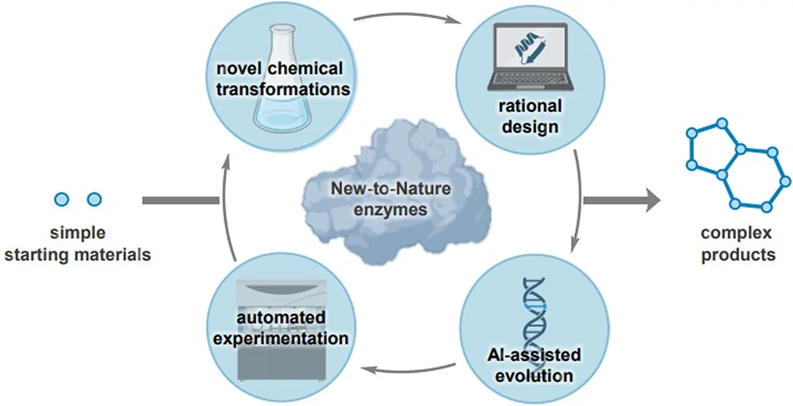
Figure 1: 자연계에 없는 효소의 설계 및 진화. 자연계에 존재하지 않는 새로운 효소를 통해 단순하고 자연에 풍부한 출발 물질을 복잡하고 부가가치가 높은 제품으로 전환할 수 있다.
지향 진화로 개량된 효소들은 친환경 화학 합성, 생물학적 환경정화(bioremediation), 신약 개발에 이르기까지 폭넓게 응용되고 있다. 대표적으로 바이오연료 생산, HIV 치료제인 이슬라트라비르(islatravir) 합성 (Huffman et al. 2019), 고부가가치 정밀 화학물질 합성 (Wu et al. 2021) 등이 있으며, 실제 제조 환경에 필수적인 비생리적 가혹 조건에서도 높은 활성과 선택성, 안정성을 유지하도록 개량된 효소들이 투입된다 (Woodley 2022). 효소는 이제 화학 산업 전반에서 기존의 환경오
염 유발 공정을 대체하는 친환경적이고 지속 가능한 대안으로 자리 잡았다. 특히 최근에는 자연계에 알려지지 않은 활성을 나타내도록 효소를 개조하는 연구가 활발하다. 이러한 ‘자연계에 없는(new-to-nature)’ 효소 라이브러리가 꾸준히 축적되면서 유기 합성 및 생체촉매(biocatalysis)의 지평이 넓어지고 있으며 (Emmanuel et al. 2016; Jeschek et al. 2016; Biegasiewicz et al. 2019; Huang et al. 2020; Rui et al. 2022; Trimble et al. 2022; Tseliou et al. 2024; Wang et al. 2024a; Xing et al. 2025), 그중 일부는 화학계와 생물학계 통틀어 보고된 적 없는 미답의 화학 반응을 완벽하게 촉매한다 (Gao et al. 2023).
지향 진화는 서열과 기능 사이의 상관관계가 완만한 ’서열-적합도 지형(sequence-fitness landscape)’에서는 매우 강력하지만, 지형이 험준하고 굴곡진(rugged) 경우에는 최적화에 막대한 시간과 비용이 들고 국소 최적점(local optima)에 갇히기 쉽다 (Romero and Arnold 2009). 이러한 한계를 극복하고 진화 공학의 잠재력을 극대화하기 위해 초고속 대용량 스크리닝과 연속 진화(continuous evolution) 기술이 빠르게 개발되고 있다 (Molina et al. 2022; Gantz
et al. 2023; Chen et al. 2024b). 그러나 신뢰성 있는 대용량 효소 활성 분석법을 구축하는 데 따르는 제약은 여전히 범용적 도입을 가로막는 걸림돌이다. 이에 대한 유력한 돌파구로 머신러닝(ML) 기반 지향 진화가 부상하고 있으며, 대규모 실험 데이터를 바탕으로 변이체의 최적화 경로를 지능적으로 안내한다 (Yang, Li and Arnold 2024). 다만 이 역시 방대한 고품질 학습 데이터의 확보와 실험적 처리량의 한계라는 병목을 안고 있다. 최근 인공지능(AI)은 단순한 변이체 선별을 넘어 유망한 효소의 초기 서열 자체를 생성하는 단계로 진화했다. 특정 효소 패밀리에 특화 학습된 단백질 언어 모델(pLM) (Madani et al. 2023; Ruffolo et al. 2025)이나 활성 부위의 3차원 기하구조를 조건으로 입력받는 생성형 확산 모델(diffusion model) (Albanese et al. 2025; Lauko et al. 2025; Listov et al. 2025; Ahern et al. 2026)이 대표적이다. 이들 생성 AI는 방대한 서열·구조 빅데이터에 내재된 통계적 원리를 학습하여 효소를 정밀 설계함으로써, 자연계의 보수적이고 느린 진화 속도를 압도하고 있다 (Lovelock et al. 2022). 요컨대 고품질 데이터의 축적, 자동화 로봇 실험실(‘자동화 및 로보틱스’ 절 참조), 강력한 생성형 알고리즘의 결합은 신규 생체촉매 발굴을 획기적으로 가속하여 원하는 화학 반응을 유전적으로 암호화하고 지속 가능한 미래형 바이오 제조를 실현할 것이다.
지향 진화는 서열과 기능 사이의 상관관계가 완만한 ’서열-적합도 지형(s
연속 단백질 진화 (Chang C. Liu*)
1960년대 후반 솔 슈피겔만(Sol Spiegelman)은 박테리오파지 Qβ의 복제효소(RNA 의존성 RNA 중합효소)와 뉴클레오사이드 삼인산(NTP)이 들어 있는 시험관에서 파지 Qβ RNA 유전체를 연속적으로 계대 배양했다 (그림 2A) (Mills et al. 1967). 복제효소의 높은 돌연변이율 덕분에 슈피겔만의 RNA는 점차 짧고 단순한 형태로 진화하며 원래 분자보다 15배나 빠르게 복제되었다. 이 역사적 실험은 정제된 생체 분자만으로도 실험실 내에서 명확한 분자적 형질(복제효소와의 결합력 및 복제 효율)을 신속하게 진
화시킬 수 있음을 입증했다. 브롬화에티듐(EtBr) 저항성 등 특정 분자 기능을 획득하도록 RNA를 진화시킨 후속 연구들과 함께 (Saffhill et al. 1970), 슈피겔만의 연구는 생체 분자 공학 도구로서 진화 기전의 응용 가능성을 예견한 기념비적 성과였다.
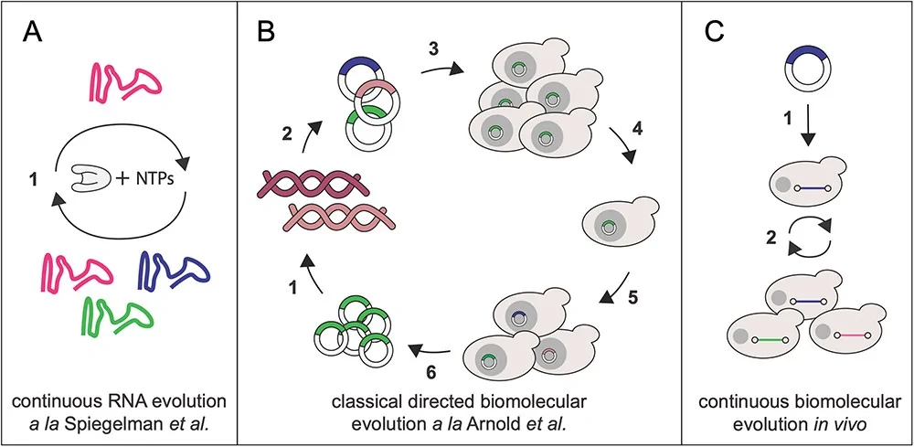
Figure 2: 연속 진화에서 고전적 지향 진화, 그리고 차세대 연속 진화로 이어지는 발전 흐름. (A) 복제 반응에 특화된 RNA 진화: 복제효소와 영양 물질이 공급되는 조건에서 RNA를 단순히 계대 배양함으로써 시험관 내에서 연속적으로 수행할 수 있다. (B) 고전적 지향 진화 사이클: 시험관 내 유전자 다양화(1), 벡터 클로닝(2), 숙주 세포 형질전환(3), 스크리닝 및 선택을 통한 신규/향상된 기능 선별(4), 세포 증식에 따른 유효 변이체 증폭(5), 최적 변이체 분리(6)로 구성된 주기를 반복하는 세포 의존적
방식이다. (C) 생체 내(in vivo) 연속 진화: 표적 유전자에만 연속적으로 초돌연변이를 유도하는 유전 시스템에 클로닝함으로써, 세포 증식 과정 자체만으로 새로운 기능의 진화가 자율적으로 일어나도록 유도한다.
외부에서 공급되는 복합 복제효소에 전적으로 의존하던 단순 RNA 분자의 진화로부터, 오늘날의 고도화된 생체 분자 진화 공학에 이르기까지는 오랜 여정이 필요했다. 이 간극은 Frances Arnold (Chen and Arnold 1993)와 Willem Stemmer (Stemmer 1994) 등이 정립한 고전적 지향 진화 ’파이프라인’을 통해 본격적으로 극복되었다. 이 방식은 표적 생체 분자를 암호화하는 유전자에 시험관 내 돌연변이(예: 오류 유발 PCR)를 유발한 뒤, 다양화된 라이브러리를 세포 내로 형질전환하여 선별을 거치는
형태다 (그림 2B). 살아있는 세포를 숙주로 활용하면서 번역과 폴딩이 까다로운 단백질도 진화의 대상이 될 수 있었고, 세포의 생존력 및 생체 신호와 연계된 다채로운 분자 기능을 공학적으로 제어할 수 있게 되었다. 이 지향 진화 파이프라인의 확립에 힘입어 생체 분자 진화는 단순 복제 실험을 넘어 범용적인 생체 분자 공학 기술로 확고히 자리 잡았다.
그러나 고전적 지향 진화 파이프라인에는 명확한 한계가 존재했다. 슈피겔만의 실험이 자연 진화처럼 돌연변이와 선택적 증폭이 자율적으로 맞물려 돌아가는 ‘연속적’ 과정이었던 반면, 고전적 파이프라인은 돌연변이 도입, 형질전환, 선택이라는 각 단계를 연구자가 일일이 수동으로 분절해 진행해야 했다. 이는 단순한 절차의 차이가 아니라 실질적인 성능의 제약으로 이어졌다. 수동 조작 방식에는 세포 형질전환 효율의 한계로 인한 다양성의 제약, 노동 집약적인 한 사이클이 진화 궤적에서 겨우 한 걸음에 불과한 탐색 깊이의 제약, 그리고 동시에 운영
가능한 실험 개수의 한계가 필연적으로 수반된다.
이러한 비연속적 파이프라인의 한계를 극복하기 위해 세포 내에서 표적 유전자를 지속적으로 다양화하는 ‘연속 진화(continuous evolution)’ 시스템이 개발되었다 (Rix and Liu 2021). 연속 진화 시스템에서는 선택 압력이 주어지는 환경에서 세포를 계대 배양하는 것만으로 원하는 생체 분자의 진화가 자율적으로 진행된다 (슈피겔만의 시험관 내 RNA 연속 배양 장치와 유사하다) (그림 2C). 숙주 세포 자체의 유전체 돌연변이율은 매우 낮고 비특이적이므로, 이를 구현하기 위해서는 살아있는 세포 내에서 표적 유전자만을
지속적·선택적으로 다양화하는 ‘초돌연변이(hypermutation)’ 유전 기술이 필수적이다. 표적 초돌연변이는 파지 증식 속도와 목적 유전자의 활성을 연계한 파지 보조 연속 진화(PACE, Phage-Assisted Continuous Evolution) (Esvelt et al. 2011)를 통해 성공적으로 구현되었다. 나아가 효모의 직교 DNA 복제계인 OrthoRep (Ravikumar et al. 2014; Ravikumar et al. 2018; Rix et al. 2024), 대장균 기반의 EcORep (Tian et al. 2024), 그리고 MutaT7 (Moore et al. 2018) 등 다양한 생체 내 초돌연변이 시스템들이 지속적으로 개발되었다 (Molina et al. 2022; He et al. 2025). 이들 연속 진화 플랫폼은 차세대 유전자 가위, 고효율 효소, 바이오센서, 항체 개량 등 다양한 분야에서 눈부신 성공을 거두었다 (Morrison et al. 2020; Molina et al. 2022). 최근에는 연속 진화 시스템을 단백질 진화 데이터셋 생성 파이프라인으로 활용하는 연구도 활발하다 (Ravikumar et al. 2018; Rix et al. 2024; Alcantar et al. 2025). 방대한 양의 ‘분포 외(out-of-distribution)’ 진화 서열 데이터를 생성하여 통계 학습 기반 단백질 설계 AI를 재학습시킴으로써 모델의 정확도를 끌어올리는 혁신적인 시너지 전략이다. 아울러 계대 배양 과정이 직관적이어서 자동화 로봇과 결합하기 쉬운 연속 진화의 특성 (Zhong et al. 2020; DeBenedictis et al. 2022)은 AI 시대 단백질 공학의 데이터 생산성과 응용력을 극대화할 것으로 기대된다.
생체 분자 진화 분야는 슈피겔만의 초기 RNA 복제 실험에서 시작해 Arnold, Stemmer, Smith, Winter, Lerner, Schultz 등의 지향 진화를 거치며 눈부시게 진화해 왔다. 생체 내 연속 진화 기술은 시험관 내 RNA에 국한되었던 슈피겔만 식의 ’연속성’과, 복잡한 단백질 기능을 구현할 수 있는 지향 진화의 ’범용성’을 성공적으로 결합시켰다. 이로써 달성된 압도적인 서열 탐색 깊이와 규모는 이미 다양한 실용 연구에서 가치를 증명했다. 앞으로 AI 기반 단백질 설계 기술이 연속 진화가 쏟아내는 독보적인 규
모와 다양성의 데이터를 흡수함에 따라, 생명공학 전반에 미칠 파급효과는 한층 더 증폭될 것이다.
생체 분자 진화 분야는 슈피겔만의 초기 RNA 복제 실험에서 시작해 Ar
시험관 내 디스플레이(In vitro display) (Takuya Terai, Naoto Nemoto*)
파지 디스플레이와 같은 시험관 내 디스플레이(in vitro display) 기술은 이제 항체 의약품 개발에 없어서는 안 될 핵심 기술이 되었다. 그러나 시험관 내 디스플레이 기술의 기반인 시험관 내 진화의 기원은 생명의 기원과 단백질의 분자 진화에 관한 연구와 맞닿아 있다. 역사적으로 시험관 내 분자 진화는 1967년 슈피겔만 연구진에 의해 박테리오파지 Qβ RNA 복제효소를 이용하여 처음 수행되었다(Mills et al. 1967). 이후 아이겐(Eigen)(Eigen and Schuster 1977)과 후시미(Husimi)(H
usimi et al. 1982; Nemoto and Husimi 1995)의 선구적인 이론 및 실험 연구를 통해 지구상에 세포가 출현하기 이전의 분자 진화가 논의되었다. 이 연구들은 ’유전형-표현형 연결(genotype-phenotype linkage)’의 중요성을 강조했다. RNA의 경우 ’유전형’과 ’표현형’이 본질적으로 동일한 분자 내에 함께 존재한다. 그러나 단백질이 진화하기 위해서는 RNA나 DNA(유전형)가 그 암호화된 단백질의 표현형과 어떤 방식으로든 연결되어야 한다. 단순한 바이러스는 이러한 연결, 즉 물리적 결합(physical coupling)이 잘 설계된 형태를 보여준다. 반면 세포성 생물은 이러한 연결을 이루기 위해 구획화(compartmentalization)에 의존한다. 실제로 후시미 등은 1982년에 사상형 파지 fd(대장균 Escherichia coli를 감염시키는 바이러스)와 연속 반응기를 사용하여 최초의 바이러스 진화 실험을 수행했다(Husimi et al. 1982). 이러한 배경을 바탕으로 1985년 스미스(Smith)는 생명공학에 유용한 최초의 시험관 내 디스플레이 기술인 파지 디스플레이를 보고했다(Smith 1985). 여기서 ’시험관 내 디스플레이’는 엔지니어링 대상 단백질을 비세포성 실체(non-cellular entity)의 표면에 제시하는 방법으로 정의한다.
스미스의 파지 디스플레이에서는 외래 펩타이드가 사상형 박테리오파지의 pIII 단백질에 융합된다. 이를 통해 펩타이드는 바이러스 표면에 위치하게 되고, 이를 암호화하는 DNA는 내부에 위치하게 된다(그림 3A, 상단). 이후 윈터(Winter) 등에 의해 이 기술의 범위가 확장되어 항체의 일부분(단일 사슬 가변 단편, 즉 scFv)을 제시할 수 있게 되었으며, 이는 항체 치료제 개발에 크게 기여했다(McCafferty et al. 1990a). 스미스와 윈터는 이러한 공로로 2018년 노벨 화학상을 공동 수상했다. 1990년대에는 파
지 디스플레이의 본질인 핵산과 펩타이드의 물리적 결합을 유지하면서 완전히 세포가 없는(in vitro) 공정으로 수행하기 위해 대표적인 두 가지 시험관 내 디스플레이 기술인 리보솜 디스플레이(Mattheakis et al. 1994; Hanes and Plückthun 1997)와 mRNA 디스플레이(Nemoto et al. 1997; Roberts and Szostak 1997)(그림 3A, 하단)가 개발되었다. 이러한 이유로 첫 논문(Nemoto et al. 1997)에서 ‘mRNA 디스플레이’는 ’시험관 내 바이러스(in vitro virus)’로 명명되기도 했다. 이 방법들은 무세포 번역(cell-free translation) 시스템을 사용한다는 점에서 획기적이다. 구체적으로 mRNA 디스플레이는 무세포 시스템에서 번역된 폴리펩타이드와 이를 암호화하는 mRNA를 단일 분자로서 공유결합으로 연결한다. 이는 종결 코돈이 결여된 mRNA와 리보솜의 진행을 멈추게 하는 일부 DNA 잔기를 통해, 리보솜 내에서 신장 중인 펩타이드의 C-말단에 공유결합하는 항생제인 퓨로마이신(puromycin)을 mRNA의 3’ 말단 부근에 위치시킴으로써 실현된다. 기존에 확립된 디스플레이 기술 중 mRNA 디스플레이는 가장 큰 라이브러리 크기(10¹³–10¹⁴/ml)를 다룰 수 있으며 다양한 기술적 개량이 이루어져 왔다. 리보솜 디스플레이는 mRNA-리보솜-단백질 복합체를 직접 포획함으로써 동일한 목적을 달성한다(Plückthun 2012). mRNA 디스플레이의 파생 기술로는 화학적 및 생물학적 안정성을 강화한 cDNA 디스플레이(Yamaguchi et al. 2009; Terai et al. 2019)와 다양한 비천연 아미노산(UAA)의 도입을 가능하게 하는 RAPID 시스템(Goto and Suga 2021) 등이 있다. 그 밖의 시험관 내 디스플레이 기술로는 CIS 디스플레이(Odegrip et al. 2004) 및 시험관 내 구획화(in vitro compartmentalization)를 활용하는 DNA 디스플레이(Yonezawa et al. 2003; Tawfik and Griffiths 1998) 등이 있다. 자세한 내용은 다른 리뷰를 참조하기 바란다(Contreras-Llano and Tan 2018).
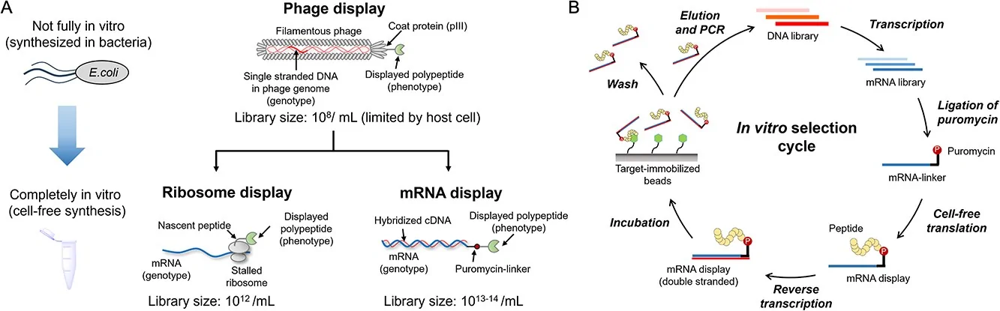
Figure 3: 대표적인 시험관 내 디스플레이(in vitro display) 기술들. (A) 파지 디스플레이에서 리보솜 디스플레이 및 mRNA 디스플레이로의 발전. 박테리오파지는 대장균 내에서 제작되어야 하므로 파지 디스플레이 라이브러리의 다양성은 대장균의 크기(형질전환 한계)에 의해 제약을 받는다. 반면 리보솜 디스플레이와 mRNA 디스플레이는 이러한 제약이 없어 훨씬 더 높은 다양성을 달성할 수 있다. (B) mRNA 디스플레이를 예로 든 시험관 내 선택 과정의 모식도. 라이브러리의 크기가 매우 방대하기 때문에 일반적
으로 고활성 변이체가 우세해질 때까지 선택 사이클을 여러 번 반복한다.
시험관 내 디스플레이의 가장 대표적인 응용 분야는 무작위 라이브러리로부터 표적 단백질에 결합하는 항체 및 펩타이드를 선별하는 것이다(그림 3B). 예를 들어 RAPID 시스템 및 그 변형 기술을 통해 개발된 비천연 아미노산 함유 고리형 펩타이드 기반 중분자 의약품은 차세대 의약품으로 큰 주목을 받고 있다(Tanada et al. 2023). 그 외에도 항체 에피토프 매핑(Scott and Smith 1990), 화학광유전학(chemo-optogenetic) 도구 단백질 개발(Miyazaki et al. 2026), 단백질 접힘 안정
성 평가(Tsuboyama et al. 2023), 신규 효소 발굴(Seelig and Szostak 2007), 신속한 효소 최적화(Munaweera et al. 2026), 효소 기질 탐색(Damnjanovic et al. 2022; Chang et al. 2023) 등 다양한 응용 사례가 보고되었다. 세포를 이용하는 기술에 비해 시험관 내 디스플레이는 실질적으로 훨씬 더 큰 다양성을 포괄할 수 있으며, 세포가 생존할 수 없는 비생리적 조건에서도 선택을 진행할 수 있다는 장점이 있다. 반면 여러 단백질로 구성된 신호 전달 네트워크를 조절하거나 표적에 대한 결합 친화도 이외의 매개변수(예: 일반적인 효소 활성)를 최적화하고자 할 때는 세포 기반 접근법과의 결합이 필요할 수 있다. 무세포 번역으로 제작된 대규모 단백질 라이브러리의 특성을 세포 내 수많은 단백질 중 하나가 아닌 폴리펩타이드 자체로서 다루고 평가할 수 있는 시험관 내 디스플레이 기술은 AI와 같은 데이터 과학과 매우 잘 부합하며(Chang et al. 2023; Tsuboyama et al. 2023), 향후 이 방향으로의 발전이 크게 기대된다.
시험관 내 디스플레이의 가장 대표적인 응용 분야는 무작위 라이브러리로부터
세포 기반 디스플레이(Cell-based display) (Owen T. Porth, K. Dane Wittrup*)
세포 기반 단백질 디스플레이(cell-based protein display)는 단백질을 암호화하는 DNA를 내포하고 있는 세포의 표면에 해당 단백질을 고정하는 일련의 기술을 일컫는다. 이처럼 단일 유전형을 표현형과 결합함으로써 다양한 지향 진화 실험에서 수십억 개의 단백질 변이체를 고처리량으로 스크리닝할 수 있다. 조지 P. 스미스(George P. Smith)는 1985년 파지 디스플레이 기술을 발명하여 이 개념을 처음 확립하였고(단원 ’시험관 내 디스플레이(In vitro display) (Takuya Terai, Naoto
Nemoto*)’ 참조), 이 공로로 2018년 노벨상을 공동 수상했다(Smith 1985). 이후 1990년대에 박테리아 디스플레이와 효모 표면 디스플레이가 등장했다(Boder and Wittrup 1997; Georgiou et al. 1997). 자기 비드 기반 선택(magnetic selection) 및 형광 활성화 세포 분류(FACS)와 결합된 이러한 후속 기술들은 수십억 개 규모의 라이브러리로부터 개선된 단백질 변이체를 정량적으로 선별할 수 있게 해준다. 진핵생물인 효모는 항체 단편과 같은 주요 포유류 단백질의 번역 후 변형(PTM)을 비교적 안정적으로 처리하지만, 효모 표면 디스플레이에서 발생할 수 있는 비인간 글리코실화(당화) 패턴과 복잡한 포유류 단백질의 간헐적인 접힘 불량 문제를 해결하기 위해 2008년 포유류 세포 디스플레이가 개발되었다(Beerli et al. 2008).
각 단백질 디스플레이 플랫폼은 최대 라이브러리 크기, 가용한 선택 기법, 그리고 표적 단백질의 접힘 및 PTM 정확성에 따라 저마다 고유한 영역을 차지하고 있다(그림 4). 파지 디스플레이의 거대한 라이브러리 크기(최대 10¹²개)와 저비용 패닝(panning) 기술의 결합은 단일 사슬 가변 단편(scFv)의 분리를 가능하게 하여 최소 14종의 FDA 승인 단클론 항체와 수십 종의 임상시험 물질을 탄생시켰다(Alfaleh et al. 2020). FACS를 이용한 효모 표면 디스플레이 스크리닝은 scFv 친화도 성숙(affinity
maturation)에 널리 쓰이는 플랫폼이다. 최대 10⁹개 규모의 라이브러리로부터 개선된 결합체를 정량적 정보에 기반하여 분리할 수 있으며, 돌연변이로 인해 안정성이 저하될 수 있는 복잡한 단백질을 올바르게 접힘 상태로 유지할 가능성이 더 높기 때문이다. 항체 개발 외에도 효모 표면 디스플레이는 효소(Lipovsek et al. 2007), 수용체(Cochran et al. 2004), 이황화 결합이 풍부한 펩타이드(Silverman et al. 2009)와 같은 복잡한 진핵 단백질을 진화시키는 데 널리 활용되어 왔다. 포유류 세포 디스플레이 라이브러리는 크기 면에서 효모와 유사하지만, 비용이 많이 드는 시약과 더 긴 배양 기간을 필요로 한다. 따라서 포유류 세포 디스플레이는 항체와 같은 고부가가치 단백질의 ‘기능 우선(function-first)’ 스크리닝 및 개발 가능성(developability) 평가에 주로 사용된다(Slavny et al. 2024).
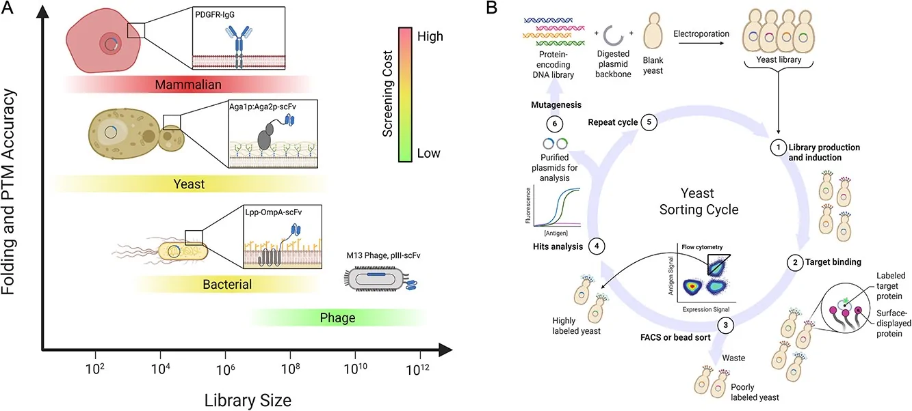
Figure 4: 세포 기반 디스플레이 유형 개요 및 대표적인 선택 사이클. (A) 라이브러리 크기 대비 단백질 접힘 및 PTM 도입 정확도를 축으로 정의하여 4가지 주요 세포 기반 디스플레이 유형의 예시를 보여준다. 유용한 라이브러리 크기의 대략적인 범위는 세포(또는 파지) 유형의 이름이 적힌 유색 막대로 표시된다. 막대의 흐릿한 가장자리는 각 디스플레이 유형별로 구현 가능한 최소 및 최대 라이브러리 크기의 유연한 범위를 나타낸다. 파지나 박테리아 디스플레이로도 작은 다양성을 스크리닝할 수 있지만, 작은 크기의 라이브러리라
면 진핵생물 수준의 우수한 접힘과 PTM 정확도를 제공하는 디스플레이 기술을 선택하는 것이 일반적이다. 막대의 색상은 배양 조건과 스크리닝 방법의 차이를 고려한 세포 기반 디스플레이 기술들의 상대적 스크리닝 비용을 나타낸다. 각 디스플레이 유형별 확대 상자에는 표면 고정 융합 단백질의 예시가 나와 있으며, 관심 단백질로서 항체 단편(scFv) 또는 전장 IgG가 표시되어 있다. (B) 효모 표면 디스플레이 선택 과정을 보여주는 순서도. 관심 단백질의 돌연변이 변이체를 암호화하는 DNA 삽입물(insert)을 절단된 플라스미드 백본 및 빈 효모 세포와 혼합한다. 이 혼합물을 전기천공(electroporation)하여 DNA를 효모 세포로 형질전환시키면, 상동 재조합(homologous recombination)을 통해 플라스미드가 조립된다. 효모 라이브러리를 증식시키고 유도(induction)하여 표면에 고정된 단백질 변이체를 디스플레이하도록 한다(단계 1). 효모를 표지된 표적 단백질(주로 비오틴화되었거나 형광이 직접 결합된 단백질)과 함께 인큐베이션하고(단계 2), FACS 또는 자기 활성화 비드 분리(MACS)를 사용하여 분류한다(단계 3). 여기에 제시된 FACS 예시의 경우, 결합하지 않았거나 표지가 미미한 효모는 폐기하고, 발현량 대비 항원 결합도가 높게 선별되는 분류 게이트(sort gate)를 적용해 강하게 표지된 효모만을 분리한다(단계 3). 고도로 농축된 플라스미드는 개별 표현형 분석을 위해 추출될 수 있다(단계 4). 선별된 결합체는 다시 발현을 유도하고(단계 5), 여러 차례의 분류 사이클을 거치며 농축된다. 라이브러리가 수렴되면 고도로 농축된 플라스미드를 추출하고, 다시 돌연변이를 도입하여 새로운 사이클을 시작할 수 있다(단계 6). 다른 세포 기반 디스플레이 유형에 대해서도 동일한 일반적인 과정을 적용할 수 있다. BioRender로 작성됨. Porth (2026) https://BioRender.com/rq4aauf.
지난 10년 동안 신규 단백질 설계(de novo protein design)의 정확도와 저비용 DNA 생산 기술은 비약적인 발전을 이루었다. 연구자들은 이제 세포 기반 디스플레이를 활용하여 미리 정의된 에피토프에 결합하도록 계산적으로 설계된 수천 개의 단백질 중에서 유효 물질(hit)을 신속하게 분리해 낸다(Liu et al. 2025a). 새로운 세포 기반 디스플레이 기법들은 결합력(avidity) 적정, 복잡한 항원 혼합물 대상 스크리닝, 화학적 다양성 확장, 연속 진화, 그리고 기능 우선 스크리닝을 가능하게 한다(Lopez-
Morales et al. 2023; Slavny et al. 2024). 이러한 혁신들이 결합하여 신약 개발 일정을 단축하고 점점 더 효율적인 시약 및 진단 도구를 생산해 낼 것으로 기대된다.
지난 10년 동안 신규 단백질 설계(de novo protein desi
합의 서열 단백질 설계 (Olivia A. Langlois, Katherine W. Tripp, Doug Barrick*)
알려진 단백질 패밀리로부터 안정한 단백질 변이체를 설계하는 간단한 접근법 중 하나는 바로 “합의 서열 설계(consensus design)”이다. 합의 서열 설계에 필요한 유일한 입력 정보는 다중 서열 정렬(MSA, 그림 5A)이다. MSA로부터 각 위치에서의 20가지 잔기 빈도를 계산하고, 빈도가 낮은 잔기를 가장 빈번하게 나타나는 “합의(consensus)” 잔기로 치환한다. 이러한 합의 치환은 단일 점 돌연변이로 도입될 수도 있고, 모든 위치에 동시에 도입되어 “합의 서열(consensus sequence)”을 생성할 수도 있
다. 단일 부위 합의 공학의 초기 사례로는 면역글로불린 도메인의 치환이 있었는데, 도입된 치환의 약 절반에서 통계적으로 유의미한 안정화 효과가 관찰되었다(Steipe et al. 1994). 전면적인(wholesale) 합의 공학의 초기 사례로는 접힘을 형성하고 높은 친화도로 아연과 결합하는 합의 아연 핑거 펩타이드의 제작이 있다(Desjarlais and Berg 1993; Shi et al. 1993). 이 합의 아연 핑거 연구는 합의 서열 설계의 잠재적 강점을 잘 보여준다. 즉, 기능적 잔기는 강하게 보존되어 있으므로 합의 단백질은 생물학적 기능을 유지할 가능성이 높으며, 실제로 해당 합의 아연 핑거 펩타이드는 동족(cognate) DNA 부위에 높은 친화도로 결합하였다.
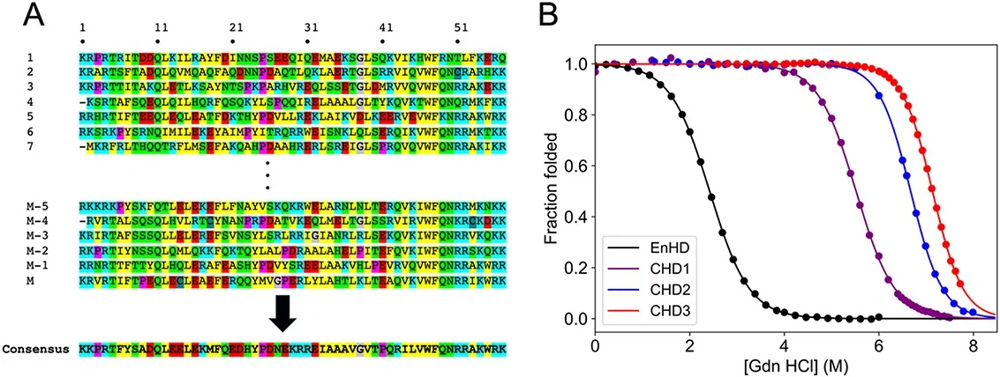
Figure 5: 합의 서열 설계. (A) 합의 서열 설계는 MSA의 큐레이션으로 시작된다. 각 위치에서의 아미노산 잔기 빈도를 계산하고, 이를 이용하여 각 위치에서 가장 흔한 잔기로 구성된 “합의 서열”을 제작한다. (B) 합의 단백질은 종종 현존하는 단백질보다 더 안정하다. 여기에는 CD 분광법으로 모니터링한 현존 호메오도메인(검은색), 182개 서열 MSA 유래 합의 구조체(CHD1, 보라색), 4,552개 서열 유래(CHD2, 파란색), 19,221개 서열 유래(CHD3, 빨간색) 구조체의 구아니딘 평형 변성 곡선이
제시되어 있다. 이 예에서는 MSA에 포함된 서열 수가 증가할수록 안정성이 향상된다.
이러한 초기 연구 이후, 생물학적 기능을 유지하면서 올바르게 접히고 안정화된 단백질을 도출하는 전면적 합의 서열 설계에 관한 수많은 보고가 이어졌으며, 2020년에는 이에 대한 종합적인 리뷰가 발표되었다(Sternke et al. 2020). 이들 보고의 거의 대부분은 구상 단일 도메인 단백질과 탠덤 반복 단백질을 포함하는 단량체 단백질을 표적으로 한다. 합의 탠덤 반복 단백질을 제작하는 한 가지 동기는 단백질 접힘 연구를 단순화하는 것이다. 탠덤 합의 배열 내의 모든 반복 부위는 동일한 서열을 가지므로, 1차원 이징 모델(1D I
sing model)과 같은 단순한 최근접 이웃(nearest-neighbor) 모델을 사용하여 접힘 과정에서의 협동성(cooperativity)을 정량화할 수 있다(Petersen and Barrick 2021). 합의 반복 단백질을 제작하는 또 다른 동기는 새로운 진단제 및 치료제 개발을 목표로 고친화도 결합 단백질 구축을 위한 주형을 제공하는 것이다(Plückthun 2015).
전면적 합의 설계의 꽤 일반적인 결과 중 하나는 높은 열역학적 안정성이다. 합의 단백질은 동일한 패밀리의 현존 단백질보다 열 또는 화학적 변성에 더 강한 저항성을 보이는 경우가 많다(그림 5B). 안정성은 자연선택 압력을 받기 때문에, MSA에 반영된 다양성을 유도하는 돌연변이들은 높은 안정성을 선호하게 된다. 잔기가 서열 맥락과 무관하게 안정성에 기여하는 한, 가장 빈번하게 나타나는 치환은 안정화를 유도해야 한다. 그러나 다른 선택압 역시 잔기 빈도에 기여하므로, 일부 위치에서 고빈도 잔기로 치환할 경우 안정성은 낮아질 수 있지만
결합 친화도나 효소 활성과 같은 선택된 다른 특성을 최적화할 수 있다(Shoichet et al. 1995). 실제로 합의 호메오도메인에 대한 한 연구에서는 동족 DNA 서열에 대한 친화도가 증가한 것으로 나타났으나(Tripp et al. 2017), 합의 설계된 효소는 현존 단백질보다 kcat 값이 더 낮은 것으로 보고되어(Sternke et al. 2019), 합의 설계에 내재된 부위 독립성(site independence) 가정이 촉매 작용보다는 안정성 및 결합 친화도에 더 적합할 수 있음을 시사한다.
합의 접근법이 안정한 단백질들을 만들어냈음에도 불구하고, 몇 가지 과제가 남아 있다. 상대적으로 덜 탐구되었으나 잠재적으로 중요한 특성 중 하나는 MSA의 깊이(depth)이다. 그림 5B는 한 단백질 패밀리에서 더 많은 서열을 포함할수록 더 높은 안정성으로 이어진다는 점을 보여준다. 또 다른 중요한 특성은 서열 다양성이다. 최근의 한 연구에서는 다양한 서열 정렬로부터 도출된 합의 RNaseH 서열이 낮은 안정성과 협동성을 보였다(Nixon et al. 2024). 이 경우 MSA의 다양성을 줄임으로써 높은 안정성과 협동성을 얻을
수 있었다. 이러한 관찰은 합의 트리오스 인산 이성화효소(triose phosphate isomerase)에 대한 이전 연구를 연상시키는데, 당시 구조적 무결성과 활성을 유지하기 위해 MSA의 정교한 큐레이션이 필수적이었다(Sullivan et al. 2011). MSA 깊이와 다양성을 최적화하기 위한 프로토콜의 개선은 향후 합의 서열 설계 연구에 분명 큰 도움이 될 것이다.
서열 데이터베이스의 지속적인 확장은 단백질 안정성을 더욱 향상시킬 수 있는 기회를 제공할 수 있다. 합의 설계와 관련된 또 다른 핵심 쟁점은 아미노산 잔기 쌍 간의 공분산(covariance)의 중요성이다. 공분산 정보가 단백질 구조 예측에 중요하다고 여겨짐에도 불구하고(Morcos et al. 2011; Jumper et al. 2021), 합의 설계는 잔기 쌍(또는 고차) 공분산을 포착하려는 시도를 하지 않는다. 최근의 한 실험 연구에 따르면 양의 공분산을 보이는 잔기 쌍을 단백질 설계에 포함하는 것이 안정성에는 기여하지 않지만
, 효소 촉매 작용에는 중요한 것으로 보인다(Sternke et al. 2026). 촉매 작용에 기여하는 핵심 잔기 쌍을 규명하고 이를 합의 정보와 결합함으로써, 안정성과 활성을 모두 극대화하는 서열을 찾아낼 수 있을 것이다. 합의 및 공분산 기반 설계 전략을 머신러닝(ML) 기반 설계 방법(계산 방법 섹션 참조)과 비교함으로써, 두 방법이 성공하는(때로는 실패하는) 이유를 더 깊이 이해할 수 있을 것이다.
서열 데이터베이스의 지속적인 확장은 단백질 안정성을 더욱 향상시킬 수 있
조상 서열 복원 (Gabriel Foley, Elizabeth M.J. Gillam*)
조상 서열 복원(ancestral sequence reconstruction, ASR)은 자연 진화를 활용하여 단백질 공학적 노력을 기능적 및 구조적으로 실현 가능한 서열 공간 영역에 집중시킨다. 특정 단백질 패밀리의 현존 대표 서열들을 정렬 및 큐레이션한 후, 진화 계통수를 추론하는 데 사용한다(그림 6). 그런 다음 계통수, 서열 정렬, 진화 모델을 결합하여 계통수의 각 분기점에서 조상 상태를 추론한다. 계통수와 조상 서열은 모두 확률론적 방법, 일반적으로 최대우도법(maximum likelihood) 또는 베이즈(Bayesia
- 접근법을 사용하여 추론된다. 정의상 진화적 중간체들은 이미 자연선택을 거쳤으므로, 단백질 패밀리의 자연 진화를 충실히 반영하는 ASR은 적어도 특정 생리적 맥락에서 기능하는, 구조적으로 온전한 관련 단백질 집합을 제공할 수 있다.
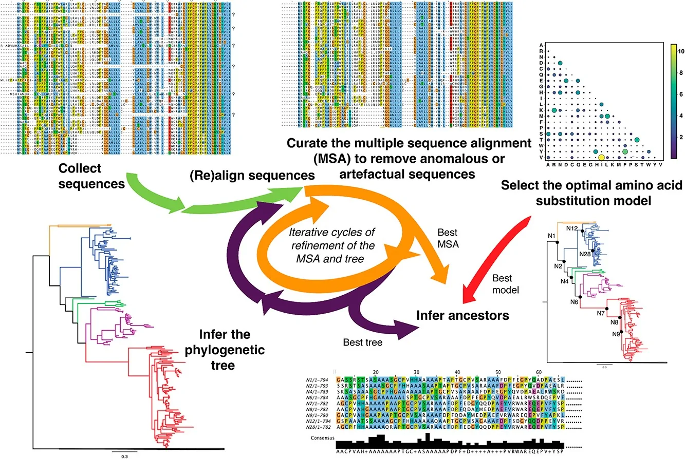
Figure 6: ASR의 워크플로. 단백질 패밀리의 전체 서열 다양성을 반영하기 위해 가능한 한 다양한 기원으로부터 현존 서열들을 수집한 후 정렬하여 MSA를 생성한다. 기능성 단백질의 발현을 저해할 수 있는 인위적 오류(예: 가유전자, 번역틀 변이, 인트론 및 누락된 엑손을 나타내는 삽입/결실)를 포함하는 서열은 검사 및 재정렬의 반복적 주기를 통해 정렬에서 제거되며, 큐레이션된 정렬은 계통수를 추론하는 데 사용된다. 계통수 역시 예상되는 종 계통수와 일치하도록 그럴듯한 진화 역사를 반영할 때까지 반복적으로 정교화된다.
단백질 패밀리 내의 진화 과정을 가장 잘 설명하는 아미노산 치환 모델을 식별한 다음, 최종 MSA, 계통수 및 진화 모델을 사용하여 계통수 내부 절점(internal node)에서 가장 확률이 높은 조상 서열을 추론한다.
ASR은 원래 단백질 패밀리의 진화를 탐구하기 위해 처음 사용되었다(Bridgham et al. 2006; Boucher et al. 2014). 그러나 곧 조상 단백질이 추론의 바탕이 된 상응하는 현존 형태보다 더 열안정적(항상 그런 것은 아니지만! (Skovgaard et al. 2006; Jones et al. 2024))인 경우가 많으며, T50 값을 비교했을 때 때로는 20–30°C나 더 높다는 사실이 밝혀졌다(Trudeau et al. 2016; Gumulya et al. 2018). 이는 호열성 유기체에서 유래했을 수
있는 선캄브리아기 단백질의 경우 예상치 못한 일이 아니었으나(Gaucher et al. 2003; Akanuma et al. 2015), 중온성 생물로부터 추론된 단백질에서 관찰되는 열안정성의 생물학적 중요성에 대해서는 논쟁이 있다(Trudeau et al. 2016; Gumulya et al. 2018). 현존 형태에 비해 추론된 조상 단백질이 일반적으로 더 높은 안정성을 보이는 이유 중 하나는, 최대우도법이 각 위치에서 가장 확률이 높은 잔기를 독립적으로 선택함으로써 빈도가 낮고 불안정화를 유발하는 잔기를 피하는 경향이 있기 때문이다(Williams et al. 2006). 안정화 정도는 연구마다 다르며, 안정성 지형은 종종 확률론적인 획득과 손실을 보이는데, 이는 아마도 인위적 편향과 진정한 생물학적 신호의 상대적 기여도 차이를 반영하는 것으로 보인다(Hart et al. 2014; Wheeler et al. 2016; Arenas et al. 2017; Chisholm et al. 2024; Thomson et al. 2026). 다른 관점으로는, 열안정성이 돌연변이에 대한 더 큰 허용성을 부여하기 때문에 일반적으로 ASR 실험의 초점이 되는 대규모 단백질 패밀리가 가장 광범위하게 분기할 수 있었던 단백질들, 즉 안정한 조상으로부터 유래한 단백질들로 편향되어 있을 가능성도 있다(Thomson et al. 2026). 궁극적으로 ASR이 단백질 진화를 연구하는 데 사용될 때와 달리, 단순히 단백질 공학을 목적으로 할 때는 열안정성 증가의 진화적 연관성에 관한 질문은 덜 중요해진다.
ASR은 전통적인 무작위 또는 조합 돌연변이 유발 접근법보다 더 큰 폭의 열안정성 향상을 이끌어낼 수 있기 때문에, 조상 잔기를 지향 진화 전략에 통합하거나(Cox and Gaucher 2014; Gumulya et al. 2019) 조상 서열을 추가적인 엔지니어링을 위한 견고한 주형으로 활용함으로써 단백질을 안정화하는 주력 방법론이 되었다. ASR을 사용하는 대부분의 엔지니어링 프로젝트의 주된 목적은 현존 형태의 기능적 특성을 적어도 일부 유지하면서도 구조적으로 더 안정한 단백질 패밀리의 대표체를 얻는 것이다. 안정성은 구조적 특
성 분석과 구조-기능 관계 규명을 용이하게 한다(Chiang et al. 2023). 뿐만 아니라 ASR은 단백질 공학에 유용한 기능적 다양성을 생성할 수도 있는데, 진화적 중간체의 소규모 라이브러리는 종종 다양한 특성을 보여준다(Babkova et al. 2017; Gumulya et al. 2018; Hernández-Meléndez et al. 2025). 조상 단백질이 현존 형태보다 기질 특이성이 더 넓고 무차별적(promiscuous)일 것이라는 가정이 있어 왔으나, 이는 특정 단백질 패밀리에서는 사실일 수 있지만 산업적 응용을 위한 일반적인 엔지니어링 표적을 포함한 다른 단백질들에 대한 ASR 실험 증거에서는 입증되지 않는다(Wheeler and Harms 2021; Thomson et al. 2026; Gumulya et al. 2018; Livada et al. 2023). 안정성과 기능적 다양성을 넘어, ASR은 자연선택에 의해 상위성(epistatic) 상호작용이 이미 해결된 서열 공간 영역을 차지하는 서열들을 식별하므로, 이들은 추가적인 돌연변이 탐색을 위한 다루기 쉬운 출발점이 된다(Harms and Thornton 2010). ASR은 또한 단백질 복합체의 추가 엔지니어링에 직접적인 정보를 제공하는 방식으로 진화 과정 동안 단백질 간 계면이 어떻게 고정되는지 이해하는 데 사용되어 왔으며(Hochberg et al. 2020), 일련의 조상 서열들은 자연선택을 통해 부적합한 변이체들이 걸러졌기 때문에 엔지니어링 라이브러리를 구축하기에 훌륭한 후보가 된다(Cole and Gaucher 2011).
ASR 과정을 자동화하려는 시도가 있었으나 그 성과는 엇갈렸다. 핵심 문제는 서열 큐레이션이다(Thomson et al. 2022). 서열 데이터베이스에는 오류가 있는 서열들(예: 개시 및 종결 부위의 잘못된 지정, 인트론/엑손 경계 오류)이 가득하며, 이러한 서열이 포함되면 기능성 조상 단백질의 추론이 훼손된다. 이용 가능한 현존 서열들을 조밀하게 샘플링하여 강력한 계통 발생 신호를 제공하는 고품질 정렬은 ASR의 정확도를 극대화하는 데 결정적이다(Muñiz-Trejo et al. 2025). 불행히도 “비전형적(atypical)
” 서열이 진정한 생물학적 변이를 나타내는지, 아니면 유전체 서열 데이터를 오픈 리딩 프레임(ORF) 및 아미노산 서열로 변환하는 과정에서 발생한 인위적 결함인지를 구별하는 것은 매우 어렵다. 따라서 서열을 큐레이션할 때 수작업 검토가 필수적이며(Thomson et al. 2022), 단백질 패밀리의 구조-기능 관계에 대한 지식은 예컨대 어떤 서열 모티프가 필수적인지, 단백질 기능을 훼손하지 않으면서 어떤 삽입/결실(indel)이 허용될 수 있는지를 판단하는 데 중요하다. 두 번째 문제는 2차원 MSA에 대한 의존성이다(Vialle et al. 2018). 2차원 MSA에서는 한 단백질의 가변 영역에 있는 잔기가 다른 단백질의 잔기와 일치하는지에 대해 자의적인 결정이 내려지는데, 해당 영역들은 서로 완전히 다른 진화적 기원을 가질 수 있으며 의미 있는 상동성을 보이지 않을 수도 있다.
단백질 공학의 다른 많은 분야와 마찬가지로, AI 도구는 향후 서열 큐레이션과 서열 정렬의 난제들을 해결하는 데 도움이 될 수 있다. 구조는 서열보다 더 잘 보존되는 경향이 있으므로, 실험적이든 예측된 것이든(예: AlphaFold) 구조 정보의 통합과 진화 과정 모델링에 있어서도 발전이 기대된다.
단백질 공학의 다른 많은 분야와 마찬가지로, AI 도구는 향후 서열 큐레
단백질 라이게이션 (Luis F. Guerra, Manuel M. Müller*)
단백질 및 펩타이드 라이게이션(protein and peptide ligation)은 전통적인 유전적 제약을 넘어서는 단백질 공학의 새로운 길을 제공한다. 이러한 반응은 둘 이상의 펩타이드 또는 단백질 단편을 공유결합으로 연결하여 완전히 맞춤화 가능한 세그먼트를 가진 연속적인 단백질을 생성하는 것을 수반한다(그림 7A). 순수 화학적 방법(화학 합성 단백질(Guo-Chao Chu, Lei Liu*) 섹션 참조), 단백질 매개 라이게이션 반응, 그리고 이들의 조합에 이르기까지 단백질 서열을 번역 후에 “잘라내고 붙여넣기(cut and
paste)” 위한 다재다능한 툴킷이 개발되었다. 이러한 방식으로 단백질에 비천연 서열, 새로운 위상구조, 그리고 단일 아미노산부터 합성 고분자에 이르는 인공 보조단(prosthesis)을 장착할 수 있다. 단백질 기능 향상의 대표적 예로는 분광학적 및 기전적 프로브, 혹은 천연 PTM 및 인공 광스위치와 같은 제어인자 도입이 있다. 이에 따라 이러한 라이게이션 기술은 본 현황 보고서의 다른 섹션에서 자세히 탐구되는 바와 같이 기초 연구, 합성생물학, 재료과학 분야에서 다양하게 응용되고 있다.
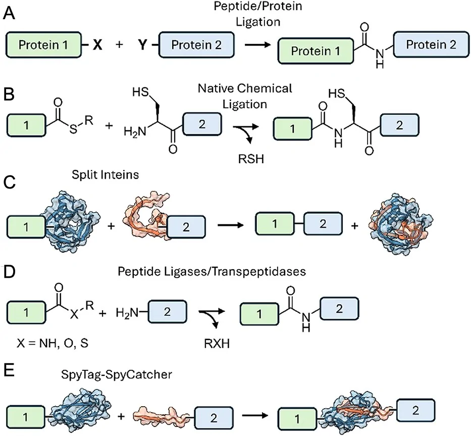
Figure 7: 단백질 라이게이션 기술의 개략적 개요. 단백질 라이게이션(A)은 네이티브 케미컬 라이게이션(NCL)(B), 스플릿 인테인(C), 펩타이드 리가아제 및 트랜스펩티다아제(예: 소르타아제, 서브틸리가아제, 부텔라아제 및 이들의 조작된 변이체)(D), SpyTag-SpyCatcher 시스템(E)을 통해 수행될 수 있다.
C-말단 α-티오에스테르와 N-말단 시스테인을 포함하는 폴리펩타이드 간의 축합 반응인 네이티브 케미컬 라이게이션(native chemical ligation, NCL)(Dawson et al. 1994)은 이 분야의 근간이 되는 기술이다(그림 7B). NCL이 도입된 이후, 뚜렷한 화학선택성(chemoselectivity)을 지닌 수많은 변형 기술들이 개발되었으며(Pattabiraman and Bode 2011; Agouridas et al. 2019), 이를 통해 비표준 구성요소 및 완전히 자연계에 없는(new-to-nature)
새로운 빌딩 블록을 포함하는 맞춤형 단백질 합성이 가능해졌다. 네이티브 케미컬 라이게이션의 특히 유용한 특징은 필수 반응성 말단을 가진 단편을 화학 합성(화학 합성 단백질(Guo-Chao Chu, Lei Liu*) 섹션 참조) 또는 재조합 발현을 통해 생산할 수 있어, 연구자들이 합성 단편과 재조합 단편을 조합하여 두 세그먼트를 모두 갖춘 단백질을 반합성(semi-synthesis)할 수 있다는 점이다. N-말단 시스테인을 갖는 재조합 단백질은 선택적 단백질 분해를 통해 얻을 수 있으며, C-말단 티오에스테르는 인테인(intein)을 사용하여 도입할 수 있다(Muir et al. 1998). 인테인은 티오에스테르 메커니즘을 사용하여 인접 서열의 라이게이션과 동시에 단백질 전구체로부터 스스로를 잘라내는 개재 단백질이다(Perler 2002; Shah and Muir 2014).
자연적으로 또는 인공적으로 분할되어 자발적으로 자가조립하는 스플릿 인테인(split intein) 역시 단백질 라이게이션에 직접 활용될 수 있다(그림 7C) (Mills et al. 1998; Southworth 1998). 이러한 트랜스-스플라이싱(trans-splicing) 반응의 초기 응용 분야에는 단백질의 분절 동위원소 표지(segmental isotopic labeling)가 포함되었다(Yamazaki et al. 1998). 단백질 기반의 기타 라이게이션 기술(Pihl et al. 2023)에는 소르타아제(sortase)
(Mazmanian et al. 1999; Mao et al. 2004), 서브틸리가아제(subtiligase)(Jackson et al. 1994), 부텔라아제(butelase)(Nguyen et al. 2015)와 같은 천연 및 조작된 펩타이드 리가아제 및 트랜스펩티다아제(그림 7D), 그리고 SpyTag-SpyCatcher로 대표되는 아미노산 곁사슬을 통해 공유 결합인 이소펩타이드 결합(isopeptide bond)을 형성하는 시스템이 포함된다(Zakeri et al. 2012) (그림 7E). 이들 단백질 자체도 활성을 향상시키고 서열 특이성을 조율하기 위한 광범위한 공학적 개량을 거쳐, 신뢰성 있는 생물학적 “클릭(click)” 반응을 위한 툴킷을 제공하고 있다(Howarth 2025).
온전한 단백질이나 도메인을 연결하고 단백질에 맞춤형 말단을 장착하는 작업은 오늘날 일상적으로 수행되고 있으나, 새로운 응용 분야에서는 라이게이션 “흉터(scar)”(효율적인 라이게이션에 필요하지만 최종 단백질 산물에는 본래 존재하지 않는 아미노산/펩타이드 서열의 잔재로 정의됨)에 대한 고려를 포함하여 최적화가 필요한 경우가 많다. 이러한 말단 변형 전략을 기반으로 하여, 최근에는 펩타이드를 정교하게 “잘라내고 붙여넣는” 조화된 반응을 통해 단백질 내부 영역을 편집하는 엔지니어링 연구가 촉진되고 있다(Beyer et al. 2025;
Hua et al. 2025). 놀랍게도 이러한 과정들은 살아있는 세포 내에서 구현되어, 다양한 세포 단백질에 인공 유닛을 도입하는 것을 가능하게 했다. 단백질 라이게이션 기술은 또한 세포 표면(Kofoed et al. 2025) 및 살아있는 유기체(Wu et al. 2017a) 내에서도 작동할 수 있어 유전자 치료 분야에 응용되고 있다(Villiger et al. 2018; Tornabene et al. 2019; Padula et al. 2022; Tasfaout et al. 2024; Ferla et al. 2025).
그럼에도 불구하고 생체 내(in vivo)에서의 단백질 라이게이션은 단백질 단편의 생산이나 전달, 화학 반응 속도론 및 평형의 제어, 그리고 생성물 분석과 부산물의 운명 추적이 시험관 내(in vitro) 시스템보다 훨씬 더 어렵다는 점에서 여전히 미개척 분야(frontier)로 남아 있다.
그럼에도 불구하고 생체 내(in vivo)에서의 단백질 라이게이션은 단백
자동화 및 로보틱스 (Nilmani Singh, Huimin Zhao*)
단백질 공학에서의 자동화 및 로보틱스는 1990년대 실험실 자동화라는 더 넓은 분야와 초고속 스크리닝(high-throughput screening) 플랫폼의 부상으로부터 태동하였는데, 당시 로봇 액체 핸들러(liquid handler)를 통해 신약 개발을 위한 대규모 화합물 라이브러리의 검지가 가능해졌다(Comley 2002; Chapman 2003; Pereira and Williams 2007). 이러한 기술들은 곧 단백질 공학의 설계-구축-테스트-학습(design-build-test-learn, DBTL) 사이클에 맞게 적응
되었다. 단백질 공학의 자동화는 사람의 개입을 최소화하면서 변이체의 적합도(fitness)를 대량으로 측정할 수 있는 로보틱스 기반의 소형화 및 병렬화된 분석법을 통해 반복 주기를 가속화하는 것을 목표로 한다(Chao et al. 2017; Yu et al. 2023). 로보틱스의 도입은 연구자가 실험을 표준화하고 재현성을 높이며, 노동력과 비용을 줄이고 발견 일정을 단축할 수 있게 해준다. 궁극적으로 우리는 종단 간(end-to-end) DBTL 사이클을 자율적으로 설계하고 실행하여, 단백질 적합도 지형의 탐색 능력과 단백질 기반 제품 개발 능력을 획기적으로 확장할 수 있는 자율형 단백질 공학 플랫폼을 구상하고 있다(Carbonell et al. 2019; Yang et al. 2024).
현대의 로봇 단백질 공학 플랫폼은 하루에 수만 개의 샘플을 분석할 수 있는 시스템이 등장할 정도로 눈부신 정교함을 달성했다. 신뢰성 높은 고처리량 액체 핸들러와 첨단 분석 장비가 이러한 발전의 중심에 있었다. 많은 상용 벤더들이 액체 핸들링 로봇, 주변 장치 및 분석 장비를 통합한 실험실 자동화 플랫폼을 제공하고 있다. 이러한 플랫폼은 단백질 공학의 구축(build) 및 테스트(test) 단계를 크게 가속화했다. PlasmidMaker(Enghiad et al. 2022)와 같은 자동화된 DNA 조립 시스템(Ma et al. 202
4)은 구축 단계를 가속화하고, 대형 액체 핸들러는 탁월한 속도와 효율성으로 적합도 측정을 위한 샘플 준비를 능률화한다. 차세대 염기서열 분석(NGS), 질량분석법(Simon et al. 2021), 플레이트 리더 기반 분석을 포함한 고처리량 분석 실험은 이제 여러 실험실에서 일상적으로 수행되고 있다. 최근에는 자동화된 실험을 위한 통합 로봇 인프라인 바이오파운드리(biofoundry) 플랫폼과 AI의 통합을 통해 사람의 개입을 최소화하는 자율형 단백질 공학 역량이 입증되었다(Rapp et al. 2024; Singh et al. 2025b; Zhang et al. 2025c). 무세포 단백질 합성 시스템(cell-free system)(Landwehr et al. 2025) 및 초고속 스크리닝을 위한 미세유체(microfluidic) 장치(Gantz et al. 2023)와 같은 신흥 기술들은 DBTL 소요 시간을 더욱 단축하고 접근 가능한 단백질 지형을 확장할 것으로 기대된다. 로보틱스 기반 실험실은 단백질 공학을 수작업의 저처리량 노력에서 벗어나 광대한 단백질 서열 공간을 체계적으로 탐색할 수 있는 확장 가능한 데이터 중심 학문으로 탈바꿈시키고 있다(그림 8).
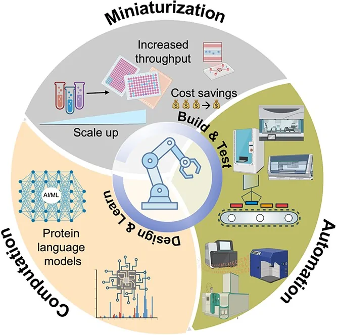
Figure 8: 단백질 공학을 위한 자동화 및 로보틱스. 단백질 공학에서 로보틱스의 점진적 도입을 이끄는 주요 원동력. 소형화(Miniaturization)는 미세 부피에서 단백질 변이체를 스크리닝할 수 있게 하여 시약 비용을 줄이면서 처리량을 획기적으로 증가시킨다. 로보틱스(Robotics)는 인간의 개입을 최소화하면서 반복적인 DBTL 사이클을 위한 자동화된 워크플로를 가능하게 하여 연속 작동, 표준화된 실험, 오류 감소 및 고처리량 역량을 제공한다. AI/ML 알고리즘과 계산 모델은 단백질 설계를 가이드하고, 적합도
지형을 예측하며, 고차원 데이터셋을 분석하고, 반복적 개선을 위한 실험 파라미터를 최적화한다. 이러한 추진 요인들이 함께 시너지 효과를 창출하여 단백질 공학을 혁신하고, 새로운 단백질 설계의 발견을 가속화한다. BioRender로 작성됨. Zhao (2025) https://BioRender.com/88yomuf.
단백질 공학에서 로보틱스와 AI의 결합은 최소한의 인간 감독 하에 DBTL 사이클을 수행할 수 있는 자율 실험 방향으로 분야를 이끌고 있으며, 여기서 ML 알고리즘은 실험 설계, 데이터 분석 및 반복적 최적화를 주도한다(Chen et al. 2025a; Singh et al. 2025a). 단백질 언어 모델(pLM)의 발전(Bjerregaard et al. 2025)은 이제 방대한 서열 지형의 효율적인 탐색을 가능하게 하며, 이를 로봇 워크플로에 도입함으로써(Singh et al. 2025b; Zhang et al. 2025c) 반
복 사이클을 더욱 가속화할 수 있게 되었다. 단백질 공학을 위한 로봇 기반 실험이 막대한 잠재력을 지니고 있지만, 이러한 시설을 구축하려면 막대한 투자가 필요하며 복잡한 기술, 인프라 및 전문 지식 요구 조건으로 인해 높은 진입 장벽이 형성된다. 산업계와 주요 연구지원 기관은 첨단 실험 기기와 최첨단 AI 도구를 결합하여 설계 및 실행을 간소화하는 클라우드 기반 로봇 실험실에 점점 더 많은 투자를 하고 있다. 이러한 클라우드 실험실은 첨단 단백질 공학 인프라에 대한 접근성을 민주화하여 전 세계 연구자들의 진입 장벽을 낮추고, 폭넓은 사회적 파급력을 지닌 새로운 단백질 설계의 발견을 가속화할 잠재력을 지니고 있다.
계산 기법
## 계산 기법
신규 단백질 접힘 데노보 설계 (Rie Tatsumi-Koga, Nobuyasu Koga*)
신규 단백질 데노보(de novo) 설계는 매우 방대한 탐색 공간 문제를 다룬다. 길이 N인 서열이 가질 수 있는 20^N개의 경우의 수(N = 100일 때 20^N ≈ 10^130) 중에서, 단일하고 기능적인 구조로 접히는 서열을 찾아내야 하기 때문이다. 생명체는 수십억 년의 진화 과정 동안 20^N 서열 공간의 극히 일부분만을 탐색했을 뿐이며 (Baker 2019), 오늘날 우리가 관찰하는 단백질들은 지구의 환경 조건 하에서 선택된 것들에 불과하다. 그러나 산업적, 의학적 응용이나 합성 분자를 활용하는 인간의 응용 관점에서 보면
, 아직 탐색되지 않은 서열 공간 영역에는 무수히 많은 기능적 단백질이 발견되지 않은 채 남아 있을 가능성이 높다. 1980년대 후반, 소수성/친수성 패턴 및 기하학적 규칙과 같은 서열 특징을 활용하여 4중 나선 다발(four-helix bundle) 단백질 구조를 탐색하는 선구적인 연구들이 시도되었다 (DeGrado et al. 1987; Hecht et al. 1990). 그러나 이 시대의 설계물들은 고유한 천연 상태를 형성하기보다는 일반적으로 용융 소구체(molten-globule) 앙상블 상태를 나타냈다. 이러한 상황은 실험적 구조가 축적되어 지식이 확장되고 계산 기법이 발전하면서 변화하기 시작했다. 1997년, Mayo 연구진은 곁사슬의 입체 형태 상태를 이산적으로 표현한 로타머(rotamer)를 도입하여 단백질 구조의 에너지를 최소화하는 곁사슬 입체 배좌를 계산적으로 탐색함으로써 아연 집게(zinc finger) 모티프의 곁사슬 구조를 완전히 재설계하는 데 성공했다 (Dahiyat and Mayo 1997). 나아가 Kim 연구진은 코일드코일(coiled coil)에 대한 Crick의 매개변수 방정식을 활용하여 나선 다발을 구축하고, 로타머를 이용해 곁사슬 구조를 설계함으로써 주쇄(골격)로부터 4중 나선 다발 구조를 계산적으로 설계하는 데 성공했다 (Harbury et al. 1998) (그림 9A). 2003년, Baker 연구진은 독자 개발한 Rosetta 소프트웨어를 통해 기념비적인 성공을 거두었다. 이들은 자연계에 존재하는 단백질 구조로부터 단편들을 조합하고 이를 로타머 기반 설계와 결합함으로써, 단순한 나선 다발 설계를 넘어 α-나선과 β-가닥을 모두 포함하는 새로운 접힘을 가진 Top7을 창조해냈다 (Kuhlman et al. 2003) (그림 9B).
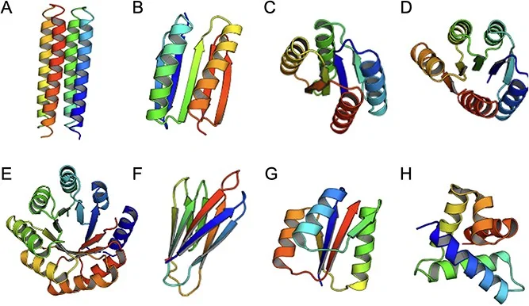
Figure 9: 대표적인 데노보 설계 단백질. (A) 우권성 코일드코일 구조를 가진 올-알파(all-α) 단백질 (Harbury et al. 1998). (B) 알파베타(αβ) 단백질: Top7 (Kuhlman et al. 2003). (C) αβ 단백질: 로스만(Rossmann) 2x2 접힘 단백질 (Koga et al. 2012). (D) αβ 단백질: 로스만 2x3 접힘 단백질 (Koga et al. 2021). (E) TIM-배럴(TIM-barrel) 구조 (Huang et al. 2016b). (F) 올-베타(al
l-β) 단백질 (Marcos et al. 2018). (G) αβ 단백질: 매듭 형성 신규 단백질 (Minami et al. 2023). (H) 복합 올-알파 단백질 (Sakuma et al. 2024).
이러한 성공을 바탕으로, Koga 등은 국소적 상호작용과 비국소적 상호작용 간의 일관성을 보장하는 주쇄 기하학 규칙을 갖춘 물리화학적 기반의 설계 원리를 확립하였으며, 이를 통해 설계된 단백질이 고유한 접힘 상태를 향해 깔때기 형태의 에너지 지형을 갖도록 코딩하는 것을 가능하게 했다 (Koga et al. 2012, 2021) (그림 9C 및 D). 이후 이러한 원리들은 새로운 접힘을 비롯한 다양한 단백질 구조를 설계하는 데로 확장되었다 (Huang et al. 2016b; Marcos et al. 2018; Minami et al
. 2023; Sakuma et al. 2024) (그림 9E–H). 이와 동시에 탐색 범위는 잘 접히는 구조를 넘어 기능적 설계를 포괄하는 방향으로 넓어졌다. 연구자들은 로타머 기반 접근법을 통해 자연계에 존재하는 스캐폴드를 용도 변경함으로써 인플루엔자 헤마글루티닌 결합체 (Fleishman et al. 2011), 비생물학적 딜스-알더(Diels–Alder) 반응을 위한 효소 (Siegel et al. 2010), 2성분 이십면체 케이지와 같은 자가조립 나노물질 (Bale et al. 2016)을 만들어냈다. 특히 주목할 점은 기능이 데노보 설계된 골격 위에 직접 부여되었다는 점이다. 예컨대 피코몰 수준의 효력으로 SARS-CoV-2를 중화하는 소형 미니단백질 (Cao et al. 2020)이나 형광성 화합물 결합 단백질 (Dou et al. 2018) 등이 이에 해당한다.
최근 딥러닝의 등장은 신규 단백질 데노보 설계를 근본적으로 변화시켰다. 딥러닝 기반 단백질 설계 접근법은 불과 몇 년 전만 해도 계산적으로 다루기 힘들었던 다양한 단백질의 신속한 생성을 가능하게 한다. RFdiffusion은 기능적 구속조건을 반영하여 다양한 단백질 골격을 생성한다 (Watson et al. 2023). 서열 생성의 경우, ProteinMPNN은 주어진 주쇄 구조에 대해 견고한 서열 설계를 제공한다 (Dauparas et al. 2022). 주쇄 생성을 위한 RFdiffusion, 서열 설계를 위한 ProteinMP
NN, 구조 검증을 위한 AlphaFold (Jumper et al. 2021) 등 이러한 도구들을 결합한 표준 워크플로는 기능성 단백질의 설계를 크게 가속화하고 있다 (Lauko et al. 2025; Kim et al. 2026). 앞으로 이 분야는 분자 모터와 같이 고도로 정교한 단백질뿐만 아니라 세포 내 네트워크에서 작동하는 단백질을 설계하는 것을 목표로 하고 있다. 물리적 원리에 기반하고 AI로 강화된 기술을 통해, 우리는 한때 불가능해 보였던 20^N 가지 가능성에 대한 탐색을 점차 다루기 쉬운 과제로 바꾸어 놓았으며, 자연이 결코 만들어내지 않았던 단백질의 창조를 현실화하고 있다.
최근 딥러닝의 등장은 신규 단백질 데노보 설계를 근본적으로 변화시켰다.
단백질 결합체 계산 설계 (Tiger S. Zhang, Brian Kuhlman*)
표적 단백질에 높은 친화도와 특이성으로 결합하는 결합체의 계산적 설계는 단백질 공학에서 중요한 목표였다. Rosetta 소프트웨어 슈트와 같은 초기 방법들은 잠재적 설계물과 표적 간의 상호작용을 물리 기반 함수로 모델링하고, 계면 에너지 등의 지표를 기준으로 설계를 평가했다 (Alford et al. 2017; Cao et al. 2022). 최근에는 딥러닝 모델이 단백질 결합체 설계에 혁신을 가져왔다 (Ingraham et al. 2019; Gao et al. 2020; Jumper et al. 2021; Dauparas et a
- 2022). AlphaFold2와 같은 구조 예측 알고리즘은 단백질 사슬 간의 상호작용을 예측할 수 있으며 (Jumper et al. 2021), ProteinMPNN과 같은 서열 설계 알고리즘은 주어진 단백질 골격으로 접힐 가능성이 높은 서열을 제안할 수 있다 (Ingraham et al. 2019; Dauparas et al. 2022) (그림 10).
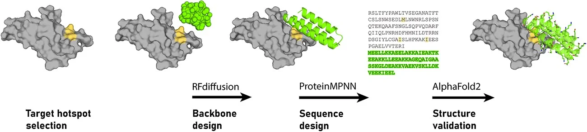
Figure 10: 단백질 결합체 계산 설계 전략의 개요. 계산 결합체 설계는 일반적으로 표적 핫스팟 선정, 골격(주쇄) 설계, 서열 설계, 구조 검증 단계를 따른다. 먼저 표적의 구조 모델을 획득하고, 결합체 계면에 대한 핫스팟 잔기를 선정한다. 골격 설계에서는 RFdiffusion과 같은 기법을 사용하여 핫스팟 잔기와 상호작용하는 골격을 생성한다. 이어 서열 설계에서는 ProteinMPNN과 같은 기법을 통해 설계된 골격으로 접힐 가능성이 높은 서열을 생성한다. 마지막으로 AlphaFold2 또는 기타 구조 예측 모델을
통해 설계된 결합체 및 표적 서열을 재접힘(refolding)시킴으로써 구조를 검증한다. AlphaFold2의 신뢰도 지표를 기준으로 필터링하여 고품질의 결합체 서열을 선별할 수 있다.
결합체 설계의 주요 난제는 표적 단백질과 높은 형태 상보성을 갖는 현실적인 골격을 찾는 것이다 (Cao et al. 2022). RifDock 및 MaSIF와 같은 열거형 도킹 및 상호작용 지문(fingerprint) 기법은 다양한 표적에 대한 결합체를 설계하는 데 성공을 거두었다 (Cao et al. 2022; Gainza et al. 2023; Huang et al. 2024; Lv et al. 2024; Ragotte et al. 2025; Yang et al. 2025a). 다른 접근법으로, RFdiffusion (Watso
n et al. 2023), Chroma (Ingraham et al. 2023), ProteinGenerator (Lisanza et al. 2025)와 같은 디노이징 확산(denoising diffusion) 모델은 표적 구조에 꼭 들어맞는 골격을 생성할 수 있다. 특히 RFdiffusion은 표적 핫스팟 잔기나 사용자가 정의한 기하학적 형태에 조건화될 수 있어 매우 강력하다 (Watson et al. 2023). 골격에 대한 서열은 ProteinMPNN으로 설계하고 AlphaFold2를 통해 평가할 수 있다 (Bennett et al. 2023; Watson et al. 2023). 주목할 점은 RFdiffusion에 의해 생성된 골격이 기존 기법으로 설계된 골격보다 훨씬 높은 실험적 성공률을 보였다는 사실이다 (Bennett et al. 2023). RFdiffusion은 미생물 단백질 (Watson et al. 2023; Fox et al. 2025a), 세포 표면 수용체 (Watson et al. 2023; Glögl et al. 2024; Householder et al. 2025; Johansen et al. 2025; Liu et al. 2025a), 뱀독 (Vázquez Torres et al. 2025), 펩타이드/내재적 무질서 영역(IDR) (Vázquez Torres et al. 2024; Liu et al. 2025d; Wu et al. 2025)을 포함한 다양한 표적에 대한 결합체를 생성하는 데 활용되어 왔다. 초기 히트 결합체는 RFdiffusion 내에서 부분 확산(partial diffusion)을 통해 특정 접힘 주변의 구조적 다양성을 유도함으로써 결합 친화도를 최적화할 수 있다 (Watson et al. 2023; Glögl et al. 2024; Vázquez Torres et al. 2024; Liu et al. 2025d; Wu et al. 2025). RFdiffusion의 한 가지 한계점은 주로 나선형 결합체를 생성한다는 것이다. 그러나 RFdiffusion의 변형 모델들은 베타 가닥 페어링이나 항체 유사 루프를 통해 표적과 상호작용하는 설계를 생성할 수 있다 (Bennett et al. 2026; Sappington et al. 2026).
다른 설계 기법들은 실험적 최적화 없이도 고친화도 결합체를 설계하기 위해 결합체 서열과 구조 사이를 반복적으로 오간다 (Goudy et al. 2023; Pacesa et al. 2025). 지향 진화 기법 및 기타 유전 알고리즘 (Jendrusch et al. 2025)과 유사하게, EvoPro는 서열 다양화, AlphaFold2 구조 예측, AlphaFold2 신뢰도 지표를 이용한 점수 산출 주기를 거쳐 인실리코(in silico) 상에서 결합체를 진화시킨다 (Goudy et al. 2023). BindCraft는 딥러닝 알고리
즘이 학습한 정보를 활용하는 또 다른 결합체 설계 파이프라인이다 (Anishchenko et al. 2021; Goverde et al. 2023; Pacesa et al. 2025). BindCraft의 궤적에서는 결합체 서열이 AlphaFold2를 통해 역전파(backpropagation)되며, 그 결과 도출된 그래디언트를 이용해 설계를 반복적으로 개선한다 (Pacesa et al. 2025). 고정 골격(fixed-backbone) 기법과 달리 EvoPro와 BindCraft는 각 반복 단계마다 설계물-표적 복합체 구조를 다시 예측하므로, 주쇄 유연성을 반영하여 결합체 생성을 향상시킬 수 있다 (Goudy et al. 2023; Pacesa et al. 2025). 그러나 딥러닝 기반 신뢰도 지표는 실험적 성공을 측정하기에는 불완전한 척도이며 결합 친화도와 직접 상관관계를 갖지 않는다 (Bennett et al. 2023; Fox et al. 2025b). 또한 극성 계면이나 유연한 단백질 영역과 같은 도전적인 표적에 대한 단백질 결합체 설계를 위해서는 새로운 기법들이 여전히 필요하다 (Fox et al. 2025b).
다른 설계 기법들은 실험적 최적화 없이도 고친화도 결합체를 설계하기 위해
단백질 복합체 구조 예측 (Michael Chungyoun, Jeffrey J. Gray*)
단백질 복합체 예측은 두 개 이상의 분리된 단백질 구성 요소를 생물학적으로 의미 있는 복합체 구조로 조립하는 과제이다 (Gray et al. 2003). 단백질-단백질 상호작용은 생체 시스템이 기능할 수 있도록 하는 세포 현상을 매개한다. 비록 완전히 해결되지는 않았으나, 이 분야의 진보는 거대분자 기능의 에너지학을 이해하고 궁극적으로는 생명의 복잡한 본질을 규명하는 길을 열어주고 있다 (Gray et al. 2003; Kaczor 2024). 단백질-단백질 상호작용을 예측하기 위한 최초의 계산적 접근법은 각 아미노산 잔기를 단일
상호작용 중심으로 대체하는 방식이었으나 (Wodak and Janin 1978), 이후 딥러닝의 발전으로 오늘날 CAPRI(Critical Assessment of PRedicted Interactions) 챌린지를 주도하는 도킹 예측 도구들이 등장하게 되었다 (Christoffer et al. 2021; Jones et al. 2022; Liu et al. 2025b) (www.capri-docking.org/assessment/). 사용 가능한 모델의 범위는 크게 확장되었으나, 이들은 모두 Wodak과 Janin이 제시한 기본 개념에 기반하여 개발되고 있다 (Wodak and Janin 1978). 즉, 견고한 단백질-단백질 예측 모델은 타당한 디코이(decoy)들을 생성하기 위한 샘플링 전략과, 단 하나의 천연 포즈(native pose)를 식별하기 위한 스코어링 함수를 필요로 한다는 점이다.
현재 샘플링 알고리즘의 주요 범주에는 상동성 모델링 (Bitencourt-Ferreira and de Azevedo 2019), 템플릿 기반 모델링 (Singh et al. 2023), 고속 푸리에 변환(FFT)을 이용한 전수 탐색 (Xu et al. 2017), 국소 형태 특징 매칭 (Christoffer et al. 2021), 무작위 탐색 (Gray et al. 2003), 데이터 기반 도킹 (Jumper et al. 2021) 등이 포함된다. 계산 효율이 높은 샘플링 알고리즘은 강체(rigid) 단백질 구조를 가정하는 반면
(Nguyen et al. 2020), 다른 알고리즘들은 실제 상호작용하는 단백질 시스템에 존재하는 유연성(flexibility)을 고려한다 (Krupa et al. 2021). 스코어링 함수 접근법으로는 분자역학 역장(force-field) (Moal and Bates 2010), 통계적 (Dhawanjewar et al. 2020) 또는 경험적 (Gray et al. 2003; Su et al. 2014) 근사치, 머신러닝(ML) (Jung et al. 2023) 등이 활용된다. AlphaFold2는 이 두 단계를 단일 공접힘(co-folding) 파이프라인으로 통합하였다 (Morehead et al. 2025). AlphaFold2의 출시는 2년 전과 비교하여 고품질 CAPRI 모델을 5배 증가시켰으며 (Lensink et al. 2023), 2억 개의 단백질 쌍에 달하는 인간 프로테옴 전체에 걸친 모든 단백질-단백질 상호작용을 탐구할 수 있을 정도의 예측 속도를 제공하여 이전에는 불가능했던 도전을 가능하게 했다 (Zhang et al. 2025a).
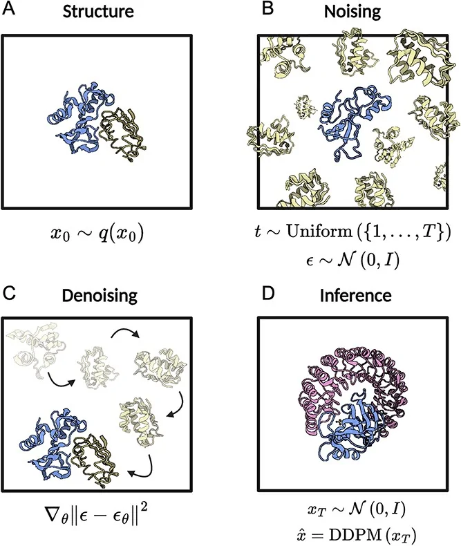
Figure 11: 도킹 예측을 위한 생성형 디노이징 확산 확률 모델. 확산 모델은 단백질 도킹 및 스코어링 전략의 성능을 대폭 향상시킨 최신 심층 신경망 범주이다. DiffDock (Corso et al. 2022)이 확산 모델을 처음 도입하였으며, 그 구성 요소들은 이후 AlphaFold3 (Abramson et al. 2024) 및 DFMDock (Chu et al. 2024)에 활용되었다. 도킹 확산 모델의 학습은 먼저 (A) 알려진 단백질-단백질 구조의 분포 q로부터 구조 𝑥0을 샘플링하는 것으로 시작된다. 본 예시
에서 𝑥0은 바스타(barstar)와 결합된 바르나아제(barnase) 복합체(PDB ID 1BRS)이다 (Buckle et al. 1994). 다음으로 (B) 가우시안 분포로부터 샘플링된 노이즈 ϵ를 사용하여 서로 다른 시간 t에서 리간드인 바스타(오른쪽 단백질 구조)를 수용체인 바르나아제(왼쪽 단백질 구조)로부터 점진적으로 이동 및 회전시켜 “노이즈를 추가(noised)”한다. 학습의 마지막 단계에서는 (C) 모델이 다양하게 노이즈가 추가된 좌표들로부터 구조들을 결합 도킹하는 법을 학습하며, 모델이 예측한 노이즈 ϵθ가 실제 노이즈 ϵ와 일치하도록 가중치를 조정한다. 일단 학습이 완료되면 (D) 이 모델은 저해제와 결합한 RNase Sa 복합체(PDB ID 1DFJ)와 같이 알려지지 않은 도킹 구조를 예측하는 데 사용될 수 있다 (Kobe and Deisenhofer 1995).
AlphaFold3 (Abramson et al. 2024)를 포함하여 CAPRI57에서 가장 우수한 성능을 보인 최신 예측 모델들은 표적의 75%에서 양호한 모델을 찾아내는 놀라운 성과를 거두었으나 (www.capri-docking.org/assessment/), 여전히 몇 가지 난제가 남아 있다. 현재 최고의 도킹 예측 모델들도 항체-항원 복합체에 대해서는 약 50%의 정확도에 불과한데 (Hitawala and Gray 2025), 이는 적절한 다중 서열 정렬(MSA)의 부재와 루프가 매개하는 다양한 계면 구조에 기인하는 것으로
보인다 (Fromm et al. 2026). 막 단백질의 도킹 또한 소수성 특성, 낮은 발현율, 낮은 세포 내 풍부도, 결정화의 어려움 등으로 인해 여전히 어려운 과제로 남아 있다 (Kaczor 2024). 현재의 도킹 모델들은 주로 단백질 구조 데이터 은행(PDB)에 수록된 결정학적 구조를 바탕으로 훈련되었는데 (Berman 2000), 이들 데이터는 안정적이고 수용성인 복합체에 편중되어 있어 내재적 무질서 계면 (Erdős et al. 2017), 일시적(transient) 상호작용, 번역 후 변형(PTM) (Schofield et al. 2024)에 대한 포괄성이 제한적이다. 설상가상으로 결정학적 구조는 정적인 스냅샷이어서 단백질의 용액 상태 거동을 포착하지 못한다. 온도, pH, 이온 농도 등은 데이터 기반 접근법이 고려하지 못하는 방식으로 결합 계면과 상호작용 특이성을 조절한다. 두 단백질이 실제로 상호작용하는지 여부를 예측하는 이진 결합(binary binding) 예측 역시 미해결 과제로 남아 있으며, 현재의 AI 모델들은 광범위한 단백질 패밀리에 걸쳐 제한적인 정확도를 보여준다 (Wohlwend et al. 2025). 공접힘 및 도킹 모델에서 부상하는 최신 트렌드는 여러 포즈를 샘플링하기 위해 확산 모델을 통합하는 것이다 (Abramson et al. 2024; Discovery et al. 2024; Wohlwend et al. 2025) (그림 11). 단백질 AI 모델이 지속적으로 발전하고 있음에도 불구하고, 해석가능성(interpretability) 측면에서 고전적인 접근법은 여전히 필수적이다. 물리 기반 에너지 함수는 예측된 점수를 기전적으로 식별 가능한 항(예: 정전기적 상호작용, 용매화, 반데르발스 힘)으로 분해할 수 있게 해주며, 이는 순수 데이터 기반 모델이 아직 제공하지 못하는 통찰력을 제공한다. 향후 10년간 우선적으로 해결해야 할 네 가지 미해결 과제는 다음과 같다. 결합 시 발생하는 입체 형태 변화의 정확한 모델링, 결합 친화도의 신뢰성 있는 예측, 생물학적으로 유의미한 전체 복합체의 다양성에 걸친 견고한 일반화, 그리고 실험적으로 규명된 결합 데이터의 희소성을 극복할 수 있는 물리 기반 및 데이터 기반 통합 프레임워크의 개발이다. 유망한 발전 방향은 물리학과 AI의 융합(Chu et al. 2024; Harmalkar et al. 2025)이며, 이는 물리 기반 모델링에서 수십 년간 축적된 진보와 딥러닝의 현대적이고 직교적인 발전을 결합하여 계산 단백질 도킹 분야의 남은 과제들을 해결해 나갈 것이다.
AlphaFold3 (Abramson et al. 2024)를 포함하여
계산 효소 설계 (Benjamin J. Smith, Roberto A. Chica*)
특정 반응을 촉매하기 위해 제1원리(first principles)로부터 생체촉매를 창출하는 것을 목표로 하는 데노보(de novo) 효소 설계는 2000년대 초 계산 단백질 설계의 발전과 함께 등장하였다(Bolon and Mayo 2001). 초기 방법들은 양자역학 계산에 의존하여 전이상태 모델 주변 촉매 잔기들의 최적 공간 배치를 정의하였으며, 이를 ’시오자임(theozyme)’이라 부르고 기존 천연 단백질 골격(scaffold)에 이식하였다. 핵심 과제는 이러한 전이상태를 높은 정밀도로 안정화할 수 있는 기질 결합 포켓과 촉매
기구를 동시에 조작하는 것이었다. 실제로는 천연 단백질 골격이 이러한 인공 활성 부위를 수용하도록 용도 변경되었으며, 계산 알고리즘을 통해 시오자임 기하구조를 가장 잘 안정화하는 아미노산 배치를 탐색하였다. 이 구조 기반 전략은 데노보 효소 설계의 개념적 기초를 확립하였으며, 에스터 가수분해(Bolon and Mayo 2001; Richter et al. 2012), 켐프 제거 반응(Kemp elimination)(Rothlisberger et al. 2008; Privett et al. 2012), 레트로-알돌 축합(Jiang et al. 2008; Althoff et al. 2012), 딜스-알더 고리화첨가(Diels–Alder cycloaddition)(Siegel et al. 2010), 모리타-베일리스-힐만(Morita–Baylis–Hillman) 반응(Bjelic et al. 2013)과 같은 반응에 대해 최초의 계산 설계 생체촉매 창출을 가능하게 했다. 비록 성공적이었으나, 이 초기 효소들은 낮은 활성을 보여주어 해당 접근법의 한계를 드러냈다. 불완전한 형태 샘플링, 부정확한 채점 함수(scoring function), 지나치게 단순화된 반응 메커니즘 가정으로 인해 종종 활성 부위의 정렬 오류와 미흡한 전이상태 안정화가 발생하였다.
지난 5년 동안 이 분야는 인공지능(AI), 향상된 샘플링, 데노보 단백질 생성의 발전에 힘입어 대대적인 변혁을 겪었다. 연구자들은 천연 골격을 개조하는 대신, 보다 정확한 시오자임 도입을 위해 완전히 새로운 단백질 구조를 설계할 수 있게 되었다. 한 가지 전략은 딥러닝 기반으로 공동(cavity)을 포함하는 천연 접힘(fold)을 계열 전체에 걸쳐 할루시네이션(hallucination)하거나 상동성 TIM 배럴의 단편들을 조합 조립함으로써 컴퓨터 상에서(in silico) 수천 개의 후보 주형 백본을 생성하는 것이다. 이러한 백본
들은 루시퍼레이스(luciferase)(Yeh et al. 2023), 레트로-알돌레이스(Anishchenko et al. 2025), 켐프 제거효소(Listov et al. 2025)의 설계를 뒷받침해 왔다. 이와 병행하여, 생성형 AI를 통해 시오자임 모델이나 단백질 데이터 은행(PDB)에서 추출한 리간드 결합 촉매 모티프로부터 알려진 촉매 배치 주위에 단백질을 구축할 수 있게 되었다. 이러한 방법들은 촉매 잔기를 정밀하게 고정하고 기질 특이적 활성 부위 포켓을 형성하는 백본을 동시에 설계할 수 있게 하여, 레트로-알돌 축합 및 모리타-베일리스-힐만 반응(Braun et al. 2026), 그리고 에스터 가수분해(Lauko et al. 2025; Ahern et al. 2026; Kim et al. 2026)를 위한 효소를 산출하였다. 더욱 최근에는 생성형 AI를 사용하여 미니멀리스트 데노보 TIM 배럴에 촉매 잔기를 고정하고 활성 부위 포켓을 형성하는 구조적 뚜껑(lid)을 추가함으로써 켐프 제거효소를 설계할 수 있게 되었다(Beck et al. 2026). 이러한 방법들은 이전 접근법보다 더 높은 활성을 갖는 초기 설계체를 생성하였으며(그림 12), 다른 기능을 위해 진화한 단백질을 용도 변경하는 것보다 맞춤형 구조를 구축하는 것의 이점을 부각시켰다. 그러나 이러한 진보 중 다수는 완전히 새로운 촉매 설계 원리라기보다는 주로 샘플링 효율성, 처리량 및 구조 예측 정확도의 향상을 반영한다.
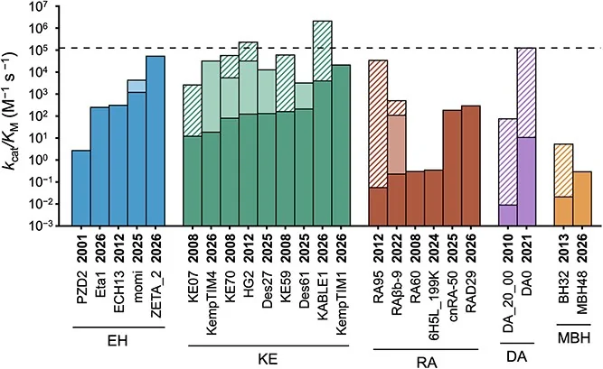
Figure 12: 설계, 최적화 및 진화된 데노보 효소의 촉매 효율. 효소는 반응 유형별로 분류되고 1차 라운드 변이체의 촉매 효율(어두운 막대) 순으로 정렬되었으며, 각 열 아래에 변이체 명칭과 발표 연도가 나열되어 있다(Bolon and Mayo 2001; Jiang et al. 2008; Rothlisberger et al. 2008; Siegel et al. 2010; Althoff et al. 2012; Privett et al. 2012; Richter et al. 2012; Bjelic et al. 2013;
Basler et al. 2021; Kipnis et al. 2022; Elaily et al. 2024; Anishchenko et al. 2025; Beck et al. 2026; Lauko et al. 2025; Listov et al. 2025; Ahern et al. 2026; Braun et al. 2026; Chen et al. 2026; Kim et al. 2026). 밝은 막대는 계산 설계로 최적화된 변이체를 나타내며(Kipnis et al. 2022; Rakotoharisoa et al. 2024; Beck et al. 2026; Lauko et al. 2025; Listov et al. 2025), 빗금 친 막대는 지향 진화로 최적화된 변이체를 나타낸다(Khersonsky et al. 2011, 2012; Blomberg et al. 2013; Preiswerk et al. 2014; Obexer et al. 2017; Basler et al. 2021; Crawshaw et al. 2022; Kipnis et al. 2022). 점선은 천연 효소의 kcat/KM 중앙값(125 000 M−1 s−1)을 나타낸다(Bar-Even et al. 2011). 에스터 가수분해, 켐프 제거 반응, 레트로-알돌 축합, 딜스-알더 고리화첨가, 모리타-베일리스-힐만 반응에 해당하는 반응 유형 EH, KE, RA, DA, MBH는 각각 파란색, 초록색, 갈색, 보라색, 주황색으로 표시되어 있다. 두 기질이 관여하는 효소 반응의 경우, DA_20_00, DA0, 또는 BH32와 MBH48에 대해 각각 4-carboxybenzyl trans-1,3-butadiene-1-carbamate, azachalcone, 또는 4-nitrobenzaldehyde에 대한 KM을 사용하여 kcat/KM을 계산하였다. BH32의 촉매 효율은 Crawshaw et al. (2022)에서 인용하였다.
또한 다양한 결합 형성 및 결합 절단 반응을 매개하는 금속 이온이나 유기금속 보조인자를 결합하는 골격을 창출하는 데 초점을 맞춘 수많은 데노보 효소 설계 사례가 존재하며, 이 경우 촉매 작용은 주로 보조인자 본연의 반응성에서 기인한다(Stenner et al. 2020; Mann et al. 2021; Berglund et al. 2024; Klein et al. 2024a; Zou et al. 2025a). 이러한 설계는 시오자임에 의존하지 않기 때문에, 초기 골격들은 특정 기질에 맞춤화되지 않은 범용 포켓을 특징으로 하였다. 최
근 연구에서는 시오자임 기반 접근법을 사용하여 활성 부위를 리모델링하거나(Basler et al. 2021; Kalvet et al. 2023; Hou et al. 2025) 생성형 AI를 사용하여 처음부터 이를 구축함으로써(Hoffnagle et al. 2025; Ahern et al. 2026; Kim et al. 2026) 이러한 포켓을 정제하여 반응성과 선택성을 향상시켰다. 활성 부위를 고정하기 위한 맞춤형 단백질 주형을 설계하는 것을 넘어, 결정학적 단편 스크리닝(crystallographic fragment screening)을 활용하여 미성숙 골격 상의 소분자 결합 부위를 밝혀내고 이 포켓 내에 구조적으로 연관된 시오자임 배치를 유도하는 직교적 전략도 존재한다(Chen et al. 2026). 이 워크플로는 시오자임 기반 설계 접근법을 통해 생성된 가장 활성이 높은 켐프 제거효소 중 하나를 산출하였다.
주목할 만한 최근 추세는 지향 진화에 의존하지 않고도 초기 설계체의 활성을 수 자릿수 이상 증대시킬 수 있는 계산 방법의 출현이다. 앙상블 기반 설계는 X선 결정학에서 도출된 형태 앙상블(conformational ensemble)을 채택하여 실제 전이상태 앙상블을 더 정확하게 대변하는 하위 상태들을 샘플링함으로써 시오자임 도입의 정확도를 높인다(Rakotoharisoa et al. 2024; Beck et al. 2026). 또 다른 접근법인 FuncLib은 계통발생 분석과 안정성 계산을 활용하여 활성 부위 위치에서 진화적으로 허
용되면서도 에너지적으로 안정한 돌연변이 조합을 식별하며, 이를 통해 골격의 구조적 무결성과 양립 가능한 변이체에 설계 공간을 집중시킨다(Risso et al. 2020; Listov et al. 2025). 두 전략 모두 활성 부위 기하구조를 최적화함으로써 켐프 제거효소의 촉매 효율을 극적으로 증가시켰으며(그림 12), 컴퓨터 상의(in silico) 최적화가 고처리량 스크리닝에 의존하지 않고도 초기 라운드의 실험실 진화와 대등한 수준에 도달할 수 있음을 입증하였다. 그러나 이렇게 향상된 설계체조차도 전환수(turnover rate)와 촉매 효율 측면에서 여전히 천연 효소에 미치지 못하며, 대규모 지향 진화를 통해 개선된 변이체보다 일반적으로 낮은 활성을 보인다. 이러한 격차를 좁히기 위해서는 형태 동역학, 장거리 정전기적 상호작용, 알로스테릭 상호작용과 같이 현재 설계 방법에서 여전히 대체로 간과되고 있는 생물학적 특징들을 고려하고 효소 촉매 작용 자체에 대한 더 깊은 기전적 이해가 필요할 것이다. 또한 단백질 데이터 은행(PDB)이 구조생물학에서 수행했던 역할과 유사하게 효소의 서열, 구조, 활성을 연결하는 더 크고 표준화된 데이터세트의 생성을 통해 발전이 가속화될 수 있다(Wang et al. 2018; Long et al. 2026; Yuan et al. 2026). 계산 및 생성형 AI 접근법이 전례 없는 속도로 가속화됨에 따라, 데노보 효소 설계는 실제 응용을 위해 주문형(on-demand) 유용 생체촉매를 생산한다는 오랜 목표를 향해 꾸준히 나아가고 있다.
주목할 만한 최근 추세는 지향 진화에 의존하지 않고도 초기 설계체의 활성
단백질 동역학의 계산 설계 (Alfie-Louise R. Brownless, Shina Caroline Lynn Kamerlin*)
단백질은 일반적으로 울퉁불퉁한 형태적 에너지 지형(conformational landscape)을 탐색하는 동역학적 실체이다. 그 결과, 여러 단백질 입체형태가 열역학적으로 접근 가능하며, 이러한 준안정 상태(metastable state)들 간의 전이는 촉매 작용 매개에 결정적이다(Georgelin and Jackson 2025). 단백질 진화능(evolvability) 조절에서 이러한 동역학의 중요성이 인식된 후(타우픽의 단백질에 대한 “새로운 관점(New View)” (James and Tawfik 2003)), 단백질 공학
목적으로 이러한 동역학을 활용하려는 관심이 증가해 왔다(Crean et al. 2020; Damry and Jackson 2021). 그러나 형태 동역학을 조작하여 단백질 기능을 변경하는 것은 다음과 같은 두 가지 근본적인 이유로 인해 도전적인 과제이다. (1) 단백질 동역학은 골격 전체에 걸쳐 직관적이지 않은 방식으로 분포된 잔기들에 의해 제어되며, 골격의 한 부분에서의 수정이 다른 영역의 기능성에 어떤 영향을 미칠지 불확실하다(상위성(epistatic) 효과를 고려하기 전에도 마찬가지이다 (Campbell et al. 2018)). (2) 비생산적 입체형태의 최소화와 생산적 입체형태의 증진에는 서로 다른 전략이 필요하며, 특정 표적 단백질 내의 형태적 에너지 지형과 잔기 간 소통 네트워크에 대한 심도 있는 지식이 요구된다.
이러한 어려움에도 불구하고, 기능적으로 중요한 단백질 동역학을 규명하고 해당 동역학과 연관된 영역을 식별하며 이 위치들에서 아미노산 치환의 영향을 예측하기 위한 실험적 및 계산적 방법 모두에서 상당한 진전이 있었다. 여기서는 계산적 발전에 초점을 맞출 것이며(그림 13), 실험적 진전에 대한 종합적 검토는 기출판된 문헌들을 참조하기 바란다(Campbell et al. 2018; Damry and Jackson 2021). 중요한 점으로, 고정밀 역장(force field), 하이브리드 QM/MM 방법, 향상된 샘플링(enhanced
sampling) 접근법의 초기 개발이 현대 계산 방법에 미친 영향은 아무리 강조해도 지나치지 않다(Jorgensen 2013). 특히 Jorgensen, Karplus, Case, Kollman, van Gunsteren 등에 의한 초기 역장 개발(Kaminski et al. 2001; Wang et al. 2004; Brooks et al. 2009; Schmid et al. 2011; Hwang et al. 2024), 그리고 Warshel과 Levitt 등에 의해 개척된 QM/MM 하이브리드 방법의 등장은(Levitt and Warshel 1975; Warshel and Levitt 1976) 현대 시뮬레이션 프로토콜이 지속적으로 의존하고 반복 발전시키는 토대를 제공하였다. 더욱 현대적인 인프라를 활용할 수 있게 되면서 계산적 접근성의 규모가 비약적으로 증가하였다. 초기 계산 주도 단백질 설계 혁신을 간략히 개괄하자면, 계산적 접근법을 통해 아연 핑거(zinc finger) 접힘과 삼량체 코일드 코일(coiled coil) 접힘을 모두 채택할 수 있는 펩타이드 설계에 성공하였으며(Ambroggio and Kuhlman 2006), 메타-다중상태 설계(meta-multistate design)를 사용하여 에너지적으로 접근 가능한 상태를 최적화함으로써 표적 상태들 간의 원하는 형태 전이를 나타내는 단백질을 성공적으로 설계하였다(Davey et al. 2017). 구체적으로 메타-다중상태 설계를 적용하여 연쇄상구균(Streptococcal) 단백질 G 도메인 β1 접힘에서 유래한 서열들을 선택하였는데, 이들은 야생형 서열에서는 놀랍게도 관찰되지 않는 두 표적 입체형태 상태 간의 뚜렷한 상호교환을 나타내었다(Davey et al. 2017). 보다 최근의 진전으로는 단백질 동역학을 전략적으로 변경하는 돌연변이를 신속하고 정확하게 예측할 수 있게 해 준 형태 편향(Conformational Biasing, CB) 기법(Cavanagh et al. 2026), 그리고 맞춤형 알로스테릭 특성을 지닌 단백질 시스템을 설계하기 위한 새로운 접근법들이 포함된다(Pillai et al. 2024). 마지막으로, 켐프 제거효소는 형태적 설계 전략을 시험하기 위한 우수한 모델 시스템을 제공해 왔다. 여기에는 구조적 앙상블을 활용하여 야생형 대비 촉매 효율이 100~250배 증가한 변이체 서열 생성(Rakotoharisoa et al. 2024), 그리고 NMR 기반 핫스팟 선정과 머신러닝(Bhattacharya et al. 2022) 또는 FuncLib(Khersonsky et al. 2018; Gutierrez-Rus et al. 2025)의 결합을 통해 천연 효소와 필적하는 촉매 숙련도(catalytic proficiency)를 지닌 켐프 제거효소를 획득한 사례 등이 포함된다.
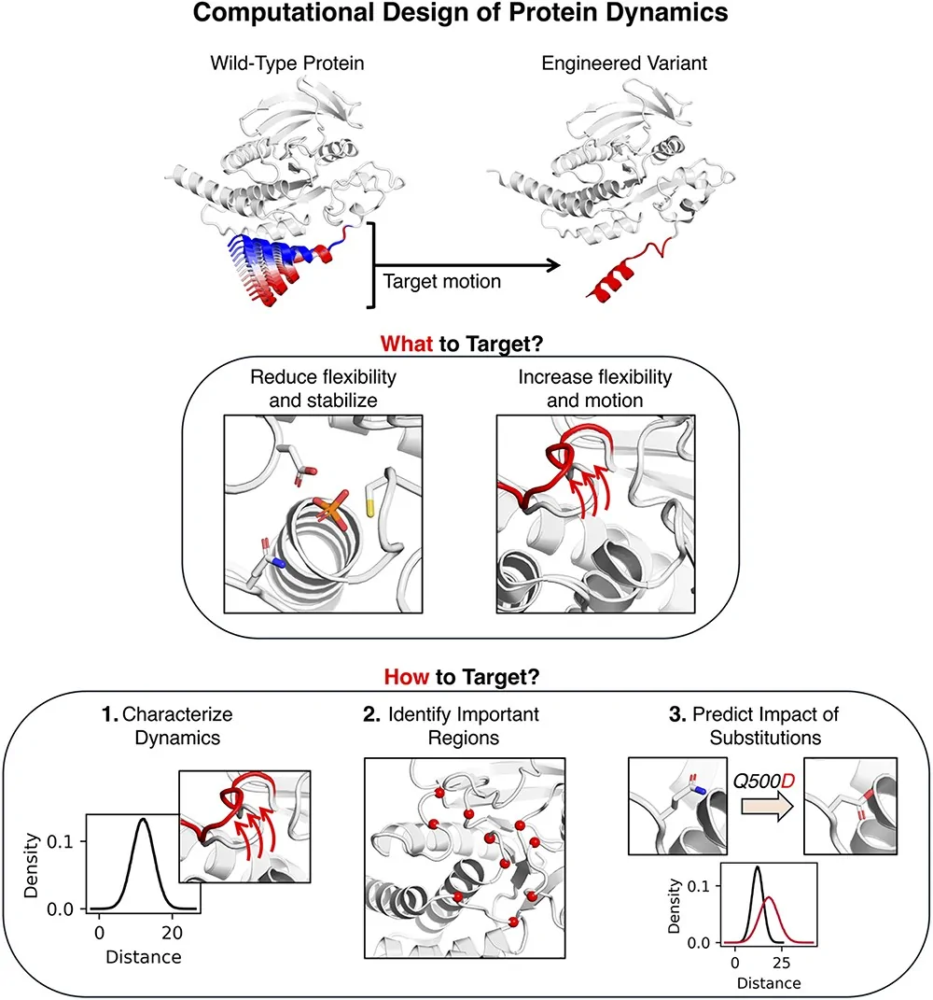
Figure 13: 단백질 동역학 계산 설계의 기본 개념. 특정 영역에서 유연성을 증가시킬 것인지 감소시킬 것인지에 대한 선택은 자명하지 않으며 따라서 설계 과정의 주요 구성 요소이다. 계산 방법을 통해 동역학의 완전한 특성 규명, 핵심 동역학적 운동을 관장하는 영역의 식별, 그리고 해당 위치에서 아미노산 치환 영향의 정확한 예측이 가능하다. 계산 방법론 구현의 지속적인 발전은 동역학적 특성의 전략적 맞춤화를 통해 보다 효율적이고 성공적인 단백질 공학의 전망을 가능하게 할 것이다.
앞을 내다볼 때, 단백질 동역학을 정확하게 포착하는 것은 여전히 난제로 남아 있고 제한된 실험 데이터세트와 훈련 세트 편향이 신뢰성 있는 예측을 복잡하게 만들고 있지만, 단백질 형태 앙상블 모델링을 위한 첨단 딥러닝 및 생성형 AI 접근법의 급격한 진화는 이 분야의 지평을 크게 넓힐 것이다(Brownless et al. 2025). 이러한 모델들은 일반적으로 형태 동역학을 간과하는 경향이 있으나, BioEmu(Lewis et al. 2025), ESMDynamic(Kleiman et al. 2025) 등 이 분야의 발전(Brownl
ess et al. 2025)은 형태 변화를 조절하는 잔기 및 알로스테릭 경로에 관여하는 잔기를 식별하는 보조 분석 도구와 결합하여 활용될 수 있다(Romero-Rivera et al. 2017; Crean et al. 2023; Raju et al. 2025). 더욱이 이러한 접근법들은 소모적인 동역학 시뮬레이션의 필요성을 대체하여 이에 수반되는 계산 비용을 실질적으로 절감할 것이다. 이러한 방법들의 전략적 결합은 계산 설계 워크플로에 형태 앙상블 고려 사항을 통합하기 위한 보다 정확하고 효율적인 절차를 가능하게 하여, 궁극적으로 특정 기능을 촉진하도록 형태 동역학을 조율하는 것을 실현 가능하게 할 것이다.
앞을 내다볼 때, 단백질 동역학을 정확하게 포착하는 것은 여전히 난제로
막단백질의 계산 설계 (Jingyi Zhu, Peilong Lu*)
막관통 단백질(transmembrane protein)은 수많은 중요한 생물학적 기능을 수행한다. 그러나 복잡한 막 환경과 실험적 특성 규명의 어려움으로 인해 이들의 데노보 설계는 수용성 단백질보다 더 도전적이다. 막관통 단백질의 일반적인 설계 원리는 수용성 단백질과 일치하지만, 다음과 같은 주요 차이점이 존재한다. (1) 막관통 단백질은 막을 관통하기 위해 전형적으로 all-α 또는 all-β 위상(topology)을 채택하며, (2) 이들의 표면은 지질 이중층과 상호작용하는 고소수성 막관통 부위와 수성 환경과 상호작용하는 친수성
막외부(extramembrane) 부위를 특징으로 한다. 초기 연구에는 막관통 올리고머(Mravic et al. 2019), 이온 전도성(Lear et al. 1988; Scott et al. 2021) 또는 수송 단백질(Joh et al. 2014), 포르피린 분자와의 상호작용 설계(Korendovych et al. 2010) 등이 포함되었다. 그러나 이러한 시도들은 화학적으로 합성된 단일 관통(single-span) 펩타이드의 조립에 국한되었으며, 생체 내에서 이러한 설계체들의 호환성은 여전히 탐구되어야 할 과제로 남아 있다.
계산 단백질 설계 방법의 발전은 다중 관통(multi-pass) 막관통 단백질의 설계를 가능하게 하여(Lu et al. 2018), 막 내에서 보다 복잡한 구조와 기능의 데노보 설계를 이끌어냈다. 나선 다발(helical bundle)의 매개변수 기반 생성(parametric generation)을 통해 특정 이온 전도도를 갖는 막관통 기공(pore)의 구축이 가능해졌다(Xu et al. 2020). 나선형 채널 내에 전하를 띤 잔기들을 전략적으로 배치함으로써 전압 개폐(voltage-gating) 기능이 달성되었다(Zhou et
al. 2025)(그림 14). 확산(diffusion) 기반 골격 생성 방법은 선택성 필터(selectivity filter)를 바탕으로 칼슘 채널의 상향식(bottom-up) 설계를 가능하게 하였다(Liu et al. 2025c). 구조 예측 네트워크를 이용한 반복적 서열 최적화를 통해 막 내에서의 비공유 소분자 결합 및 밝은 형광 활성화를 정밀하게 설계할 수 있었다(Zhu et al. 2025). 루프 서열의 최적화를 수반한 단편 조립 방법을 사용하여 막관통 β-배럴(β-barrel) 설계에서도 진전이 이루어졌다(Vorobieva et al. 2021). 최근에는 딥러닝 기반 골격 생성 방법을 적용하여 β-배럴의 매개변수 기반 설계 또한 가능해졌다(Kim et al. 2025a). 다양한 기공 크기를 갖는 일련의 막관통 β-배럴이 설계되었으며, 지질 이중층에서 상이한 이온 전도도 프로파일을 나타내었다(Berhanu et al. 2024). 이렇게 설계된 나노포어는 수용성 화학 유도 이량체화(CID) 도메인과의 융합을 통해 리간드 개폐형(ligand-gated)으로 추가 조작되었다(An et al. 2024b).
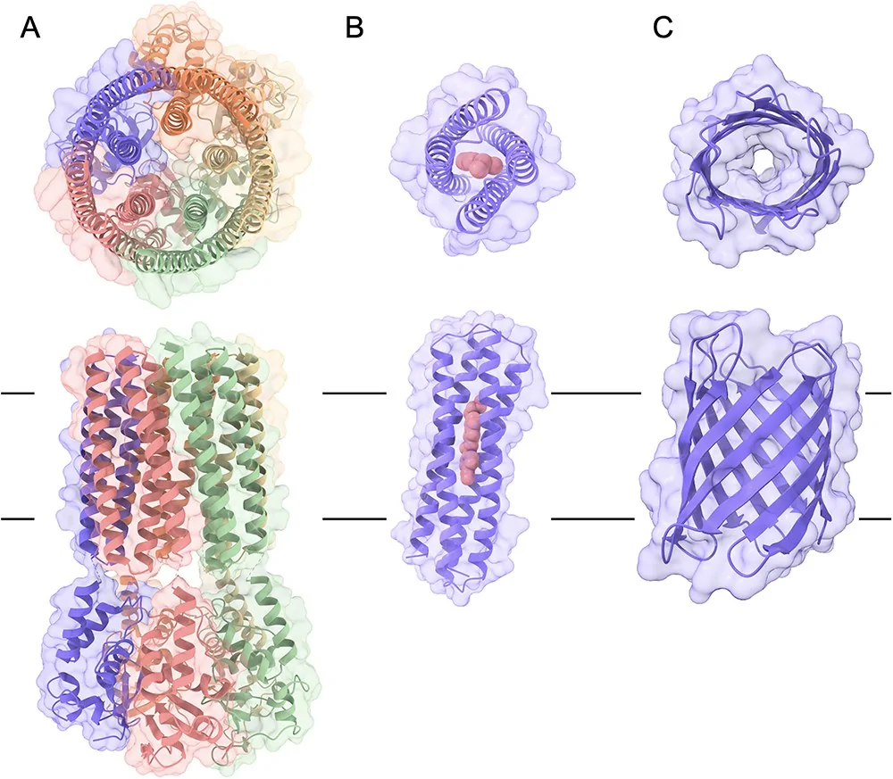
Figure 14: 기능성 데노보 막관통 단백질의 대표적 사례. (A) 데노보 설계된 나선형 이온 채널(Zhou et al. 2025). (B) 데노보 설계된 형광단 결합 막관통 단백질(Zhu et al. 2025). (C) 데노보 설계된 β-시트 기반 나노포어(Berhanu et al. 2024). 윗줄은 평면도(top view), 아랫줄은 측면도(side view)를 나타낸다. 검은색 선은 막의 대략적인 위치를 나타낸다.
딥러닝 기반 단백질 설계 및 구조 예측 방법의 급격한 진보는(Jumper et al. 2021; Dauparas et al. 2022; Watson et al. 2023; Abramson et al. 2024), 비록 일반적인 단백질 설계를 위해 개발되었으나 막관통 단백질 설계, 특히 원하는 특성을 갖는 골격과 서열을 생성하는 정확도와 효율성을 향상시키는 데 크게 기여하였다. 그럼에도 불구하고 해결해야 할 과제는 여전히 남아 있다. 막단백질은 매우 동역학적이고 복잡한 환경에 존재하기 때문에 본질적으로 연구하기 어렵다. 세포막은 높은
농도의 지질을 함유하고 막 전체에 강한 막전위가 형성되어 있으며, 막단백질의 정확한 접힘 및 생합성 기전은 여전히 명확히 밝혀지지 않았다. 따라서 막단백질 서열 설계에 특화된 딥러닝 기반 방법의 훈련은 적절한 데이터세트의 부족으로 인해 어려움을 겪어 왔다. 나아가 이들 단백질의 구조적 특성 규명은 계속해서 중대한 과제를 안겨주고 있다. 다행히 지난 10년 동안 초저온 전자현미경(cryo-EM)의 발전은 구조 결정을 촉진해 왔다. 융합 도메인 설계를 통해 이제 소형 막단백질의 cryo-EM 구조 결정이 실현 가능해지고 있다(Liu et al. 2025c; Zhou et al. 2025; Zhu et al. 2025). 종합하면, 이 분야는 막관통 기공의 개폐, 바이오센싱, 촉매작용, 리간드 수송과 같이 점차 더 복잡한 기능과 동역학을 지닌 데노보 막관통 단백질의 설계를 향해 나아가고 있다.
효소 (Enzymes)
## 효소 (Enzymes)
시토크롬 P450 효소 공학 (Douglas J. Fansher, Joelle N. Pelletier*)
헴(heme)을 함유한 시토크롬 P450 일산화효소(P450)는 자연계에서 광범위한 환원적 산화 반응을 촉매한다. 이들은 보호기 도입 단계 없이도 소분자의 후기 단계 변형(late-stage modification)을 가능하게 하는 유용한 접근법을 제공한다 (Fansher et al. 2024). 비활성화된 C-H 결합에 대한 반응성 덕분에 화학적으로 합성하기 어려운 생성물에 대한 선택적 접근을 가능하게 한다는 점에서 특히 주목받고 있다. 전자 공여체인 NADPH는 2개의 전자를 FAD로 전달하고, 이어서 별개의 폴리펩타이드 또는
단일 단백질에 속하는 3개의 도메인을 거쳐 헴에 결합된 산소 분자로 전자를 전달한다. P450은 주로 고부가가치 화학물질의 합성과 약물 대사체 생산에 응용된다. 예를 들어, 조작된 CYP105AS1은 콜레스테롤 저하제인 프라바스타틴(pravastatin)의 산업적 생산에 필수적인 하이드록실화를 수행한다 (McLean et al. 2015; Ashworth et al. 2022). 또한 다환 방향족 탄화수소와 같은 잔류성 오염물질의 생물학적 정화(bioremediation)를 위한 P450의 잠재력도 탐색되어 왔다.
동물, 식물, 미생물 유래의 천연 및 조작된 P450 초가족(superfamily) 구성원들은 위치선택적 지방산 산화, 위치- 및 입체선택적 스테로이드 산화, 약물 대사, 올레핀의 에폭시화 등을 포함한 합성 반응에 응용되어 왔다. 예를 들어, 균류, 두꺼비, 식물 및 미생물 유래의 P450 효소가 다양한 위치에서의 하이드록실화를 유도함으로써 스테로이드의 구조적 다변화에 기여함이 최근 보고되었다 (Chen et al. 2020; Peng et al. 2022; Zhao et al. 2022). 가장 널리 공학적으로 조작된 P450은
바실러스 메가테리움(Bacillus megaterium, 2020년에 Priestia megaterium으로 재분류됨 (Gupta et al. 2020)) 유래의 P450BM3(CYP102A1)이다. 진핵생물에 흔한 막 결합형 P450과 달리, 이 가용성 자체 완비형(self-sufficient) 효소는 단일 폴리펩타이드로 기능하여 빠른 전자 전달과 높은 촉매 효율을 나타낸다. 여러 총설 논문 (Ren and Fasan 2021; Yang and Arnold 2021; Fansher et al. 2024)에 정리된 최근의 주요 성과로는 지방산 및 스테로이드 산화에서의 위치- 및 거울상이성질체 선택성 변경, 바이오연료로서의 저분자 알칸 산화, 페놀 및 에폭사이드를 생성하는 방향족 및 올레핀 산화, 의약품 및 생리활성 천연물의 산화 등이 있다 (그림 15A). 자연계에 존재하지 않는 새로운 반응(new-to-nature reactions)의 다른 예로는 카벤 전달 반응 (그림 15B) (Coelho et al. 2013)과 나이트렌 전달 반응 (그림 15C)이 있으며, 이는 ’자연계에 없는 반응을 위한 조작된 금속효소 (Rudi Fasan*)’ 절에서 추가로 논의될 것이다.
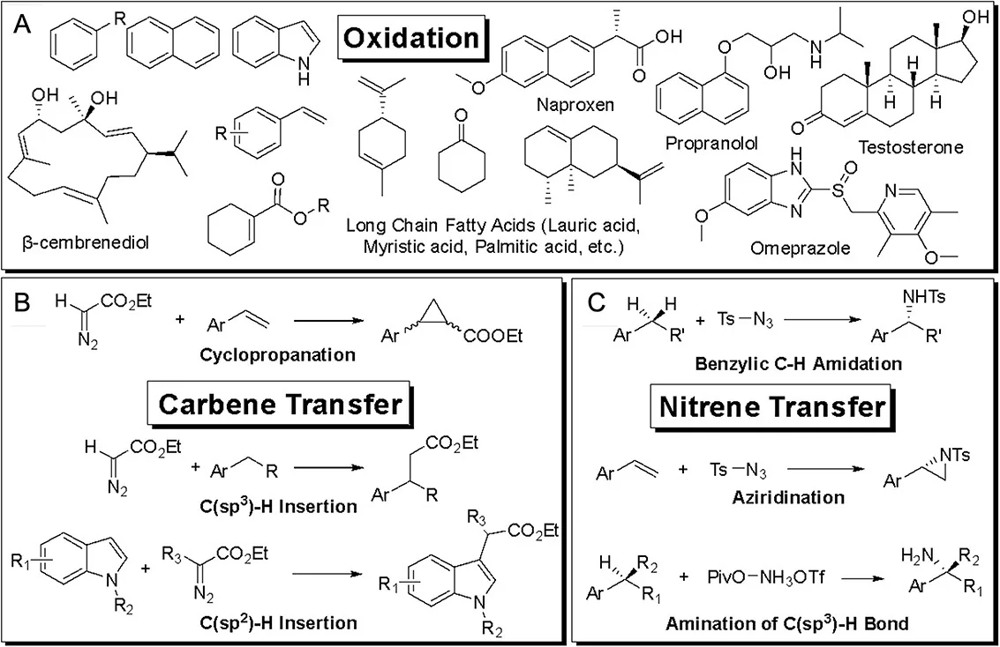
Figure 15: 천연 및 조작된 P450 BM3이 촉매하는 주요 반응 개요. (A) 산화 반응에 관여하는 대표적인 기질들. (B) 대표적인 카벤 전달 반응 및 (C) 나이트렌 전달 반응.
유전체 및 메타유전체 접근법 또는 조상 서열 복원(ASR, ’조상 서열 복원 (Gabriel Foley, Elizabeth M. J. Gillam*)’ 절 참조)을 활용한 추가적인 P450(이른바 “P450ome”)의 발굴은 (Wang et al. 2024b; Harris et al. 2022) 그 응용 범위를 지속적으로 넓히고 있다. 과거에는 신약 개발 과정에서 약물 대사체를 평가하기 위해 간 P450의 대안으로서 효소 공학—특히 P450BM3의 조작—이 주로 연구되었으나 (Thistlethwaite et al. 2021), 현재
는 다양한 천연 P450을 발굴하는 방향이 선호되고 있다. 공학적 조작을 위해서는 막 결합형 변이체보다 가용성 P450이 선호되며, 발현 용이성과 더 빠른 전자 전달 속도를 통해 효율을 높일 수 있는 자체 완비형 P450이 적합하다. 생체촉매작용과 관련하여 남아 있는 단백질 공학적 과제로는 기질 특이성 및 활성 향상, 입체- 및 위치선택성, 효소 안정성, 전자 공여체 비용(효소 연계 재활용 시스템을 사용할 때도 포함), 비천연 기질과의 짝지음 효율(coupling efficiency), 유기용매 내성 등이 있다. 계산적 접근법을 포함하여 스크리닝 처리량을 향상시키는 기술들이 유용할 것이다. H2O2를 공기질로 사용하는 것은 NADPH를 대체할 기회이지만 안정성 저하를 완화하기 위한 단백질 공학적 개선이 필요하며, 최근 이에 대한 유망한 진전이 이루어지고 있다 (Podgorski et al. 2024). 따라서 정밀화학 및 제약 분야를 넘어 적용 범위를 확장하려면 대규모 확장성(scalability) 문제가 해결되어야 한다.
미래에는 비특이적 과산화효소(unspecific peroxygenases, UPO)가 P450의 매력적인 대안이 될 수 있다. 헴 의존성 산화효소인 UPO는 대규모로 쉽게 얻을 수 있으며 외인성 H2O2를 사용하므로 공정 비용을 절감할 수 있다. 이 효소들의 광범위한 기질 반응성(promiscuity)은 약물 대사 타깃 (Gomez de Santos et al. 2018) 및 생체촉매작용 (Aukema et al. 2022; Münch et al. 2023)에서 입증되었듯이, 단백질 공학을 통해 반응 범위를 한층 더 넓히는 것이 가
능함을 시사한다. 높은 활성과 안정성 덕분에 반응의 대규모화가 용이하여 최대 0.5 kg 스케일까지 성공적으로 시연되었다 (Hilberath et al. 2023). NADPH를 필요로 하지 않는 알파-케토글루타르산 의존성 산소화효소(alpha-ketoglutarate-dependent oxygenases) 역시 P450 생체촉매의 매력적인 대안으로 주목받으며 폭넓게 도입되고 있다 (He et al. 2024).
미래에는 비특이적 과산화효소(unspecific peroxygenases
플라빈 의존성 효소 (Kridsadakorn Prakinee, Pimchai Chaiyen*)
대부분의 플라빈 의존성 효소(플라보효소, flavoenzymes)는 유기 기질의 일산소화, 산화, 탈수소화 또는 전자 전달과 같은 산화환원 과정을 매개한다. 전 세계 연구진은 다양한 반응속도론적 및 기전적 접근법을 활용하여 이 효소들의 반응 메커니즘을 규명해 왔으며, 이를 통해 일산소화효소 (Paul et al. 2021; Phintha and Chaiyen 2023), 산화효소 (Trisrivirat et al. 2022), 탈수소효소 (Tan et al. 2015), 환원효소 (Pimviriyakul et al. 2025), 전
자 전달 플라보단백질 (Buckel and Thauer 2018), 그리고 비산화환원 플라빈 의존성 효소들이 어떻게 반응을 촉매하는지에 대한 심층적인 통찰을 제공하였다. 이러한 기초 연구는 플라빈 의존성 효소의 성공적인 공학적 설계를 뒷받침하는 핵심 기반이다. 지난 수십 년 동안, 아래에 기술된 바와 같이 생체촉매작용 분야에서 조작된 플라보효소의 응용이 눈에 띄게 증가했다.
합리적 설계(rational design)와 단백질 동역학 기반 접근법의 융합은 올드 옐로우 효소(old yellow enzymes) 또는 엔-환원효소(ene-reductases)를 공학적으로 조작하여 효율적인 비대칭 합성을 수행하는 변이체를 획득하는 데 적용되었다 (Yin et al. 2025a). 이러한 플라보효소들은 전통적인 합성 경로로는 달성하기 어려운 화학적 변환을 구현함으로써 비대칭 생체촉매 반응을 획기적으로 발전시켰다. 또한 엔-환원효소에 대한 혁신적인 연구들은 광활성화 공정과의 결합을 통해 거울상이성질체 선택적 탈카복
실화 알킬화 (Sun et al. 2024), 입체 제어된 라디칼 하이드로아릴화 (Zhao et al. 2023), 불소화 화합물의 비대칭 합성 (Li et al. 2024)과 같은 비천연 광효소 반응(photoenzymatic reactions)을 구현할 수 있는 잠재력을 입증하였다. 산화성 라디칼의 형성은 뛰어난 화학선택성 및 거울상이성질체 선택성을 나타내는 이러한 다재다능한 생물학적 변환의 핵심이다. 흥미롭고 반응 범위가 넓은 이러한 반응들은 앞으로도 지속적으로 확장될 것이다.
합리적 설계와 지향 진화에 기반한 효소 공학은 천연 기능을 넘어선 플라보효소의 잠재력을 이끌어내는 데 매우 효과적인 것으로 입증되었다 (그림 16). 예를 들어, 다양한 플라보효소가 조절하는 서로 다른 산화 메커니즘을 이해함으로써 반응성을 재프로그래밍하는 데 활용할 수 있다 (Guerriere et al. 2025; Kumaran et al. 2025). 최근의 연구에서는 일산소화효소와 산화효소를 새로운 비천연 할로젠화효소(halogenase) 스캐폴드로 용도 전환할 수 있음이 밝혀졌다 (Phintha et al. 2021; Pra
kinee et al. 2024). 플라빈 의존성 할로젠화효소의 병목 현상을 규명함으로써 반응성 중간체를 운송하는 기질 통로(substrate tunnel)를 설계하여 할로젠화 효율을 높일 수 있었다 (Prakinee et al. 2022). 또한 플라빈 의존성 탈할로젠화효소의 열안정성을 향상시키기 위해 반합리적 접근법(semi-rational approach)이 적용되었으며, 이를 통해 획득한 변이체는 이후 살충제의 생물학적 무독화 및 현장 검출에 사용되었다 (Pongpamorn et al. 2019). 유사한 접근법을 통해 트립토판을 식물 호르몬 전구체로 전환할 수 있는 효소가 성공적으로 조작되었다 (Kongjaroon et al. 2024). 마찬가지로, 각각 에스터와 에폭사이드 합성에 유망한 생체촉매인 바이어-빌리거(Baeyer–Villiger) 일산소화효소와 스타이렌 일산소화효소도 구조 및 메커니즘적 통찰을 바탕으로 개량되었다 (Li et al. 2018, 2025a). 이러한 발전은 반응 기전적 이해를 바탕으로 효소 공학을 유도하여 목표하는 최적의 플라빈 생체촉매를 확보하는 강력하고 통일된 프레임워크의 중요성을 부각한다.
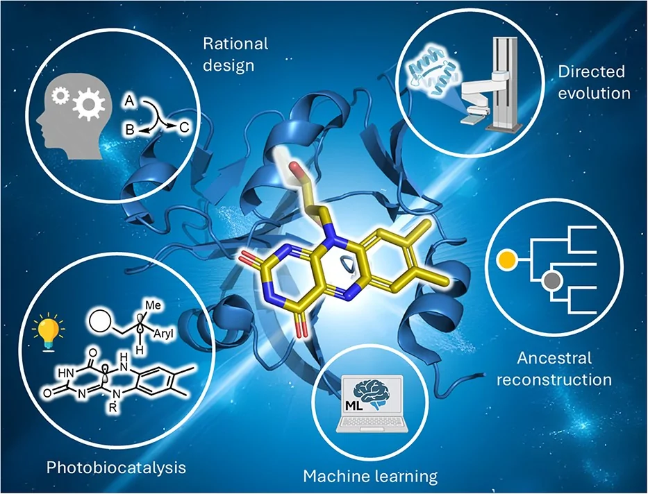
Figure 16: 플라빈 의존성 효소 공학에 활용되는 주요 접근법 개요.
플라보효소 공학 연구 또한 디지털 시대에 접어들었다. 진화에 기반한 ASR(’조상 서열 복원 (Gabriel Foley, Elizabeth M. J. Gillam*)’ 절 참조)은 계산 연구 및 돌연변이 유발 연구와 결합되어 플라보효소의 구조와 기능에 대한 가치 있는 통찰을 제공하였으며, 일산소화효소에서 특정 구조적 특성이 입체선택성과 화학선택성을 제어하는 방식을 규명하고 (Bailleul et al. 2023; Chiang et al. 2023), D-아미노산 합성을 위한 고열안정성 효소의 개발을 가능하게 했다 (Kawamura
et al. 2023). 나아가, 최근에는 머신러닝(ML) 기반 단백질 공학이 합리적 라이브러리 설계를 통해 페놀성 수산화효소(phenolic hydroxylase)의 하이드록실화 활성을 향상시키는 데 적용되었다 (Matsushita et al. 2024). 이러한 최근 연구들은 전통적인 진화적 및 합리적 접근법이 여전히 계산 설계의 기반을 이루는 중요한 지침 역할을 함을 보여주었다. 플라보효소를 조작하기 위한 데이터 기반 접근법은 아직 초기 단계에 있지만, 시간이 흐름에 따라 더욱 성숙해지고 확장될 것으로 기대된다. 플라보효소의 구조 및 기능에 대한 이해가 깊어짐에 따라, 이 분야는 더욱 성장할 것이며 한층 더 괄목할 만한 발견들이 계속해서 이어질 것이다.
플라보효소 공학 연구 또한 디지털 시대에 접어들었다. 진화에 기반한 AS
자연계에 없는 반응을 위한 조작된 금속효소 (Rudi Fasan*)
효소 공학 분야의 획기적인 돌파구 중 하나는 금속효소를 자연계에 존재하지 않는 화학적 변환인 ’비천연 화학 반응(new-to-nature chemistries)’을 수행하는 생체촉매로 ’재목적화(repurposing)’한 것이다 (그림 17). 이 분야는 조작된 헴 의존성 효소와 헴단백질의 반응 범위를 비생물학적(abiological) 카벤 및 나이트렌 전달 반응으로 확장하면서 촉발되었다 (Yang and Arnold 2021; Couture et al. 2024). 전통적으로 전이금속 촉매를 사용하여 수행되던 이러한 새로운 효소
촉매 변환은 사이클로프로판, 아민, 싸이오에터 등 의약학적으로 중요한 화합물의 합성을 가능하게 한다.
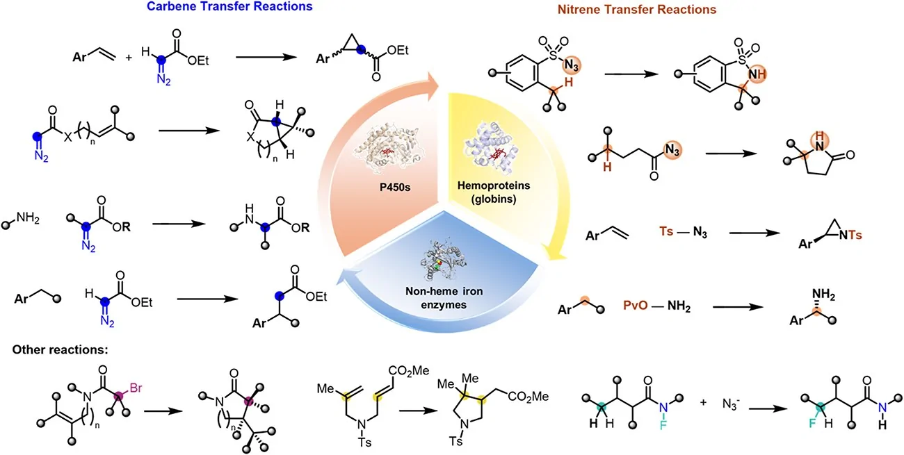
Figure 17: 조작된 금속효소가 촉매하는 자연계에 없는(new-to-nature) 반응들.
이 분야의 기념비적인 연구들은 조작된 시토크롬 P450 효소(예: P450BM3) 및 헴단백질(예: 마이오글로빈)이 높은 촉매 효율과 입체선택성으로 올레핀의 사이클로프로판화 반응을 촉매할 수 있음을 입증했다 (Coelho et al. 2013; Bordeaux et al. 2015). 이러한 성과는 이후 다양한 헴단백질(예: 시토크롬 P450, (마이오)글로빈, 시토크롬 c, 탈할로젠화과산화효소 등)의 조작된 변이체를 기반으로 하여 Y-H 결합(Y = S, N, Si, B)으로의 카벤 삽입 반응을 통한 고순도 광학활성 싸이오에터,
아민, 실레인, 유기붕소 화합물의 입체선택적 합성을 이끄는 효율적인 생체촉매 개발로 이어졌다 (Tyagi et al. 2015; Kan et al. 2017; Steck et al. 2020a). 초기에는 다이아조에스터를 카벤 공여 시약으로 사용했으나, 조작된 “카벤 전달효소(carbene transferase)”의 반응 기질 범위는 다이아조플루오로알칸, 다이아조케톤, 다이아지린, 피리도트라이아졸 등 다양한 카벤 전구체로 점차 확대되었으며, 생체촉매작용을 통해 얻을 수 있는 키랄 생성물과 합성적 가치가 높은 빌딩 블록의 스펙트럼을 대폭 확장하였다 (Tinoco et al. 2017; Porter et al. 2022; Roy et al. 2024b). 또한 헴단백질 촉매 카벤 전달 반응은 기존에 합성 촉매나 희유 전이금속(예: Rh, Ir)을 포함하는 인공 효소로만 가능했던 반응인 C(sp3)-H 결합의 기능화에도 성공적으로 적용되었다 (Dydio et al. 2016; Zhang et al. 2019; Ren et al. 2023).
“카벤 전달효소”로서의 탐색과 병행하여, 헴 의존성 효소 및 단백질은 합성 화학에서 중요한 C-N 결합 형성 반응인 비생물학적 나이트렌 전달 반응을 촉진하는 유망한 생체촉매로도 입증되었다 (Yang and Arnold 2021; Couture et al. 2024). 이 분야의 발전을 통해 분자 내 및 분자 간 C-H 아민화 반응을 거쳐 키랄 설탐(sultam) (Singh et al. 2014), 아지리딘 (Farwell et al. 2015), 카바메이트, 설파메이트 (Yang et al. 2019), 락탐 (Roy et al.
2024a), 아민 (Prier et al. 2017)을 합성하는 고효율 및 고입체선택성 생체촉매들이 개발되었다. 카벤 및 나이트렌 전달 반응을 넘어, 최근에는 조작된 헴 효소와 단백질이 원자 이동 메커니즘을 통한 라디칼 매개 고리화 반응 (Zhou et al. 2021; Fu et al. 2024) 및 금속-하이드라이드 수소 원자 전달(MHAT) 메커니즘 (Zhang et al. 2025b)과 같은 다른 흥미로운 비생물학적 변환을 촉매할 수 있음이 밝혀졌다.
헴단백질과 더불어 비헴 철 의존성 효소(non-heme iron dependent enzymes)와 같은 다른 금속효소 군 역시 자연계에 없는 화학 반응을 위한 생체촉매 공학에서 큰 잠재력을 지닌 것으로 입증되었다. 자연계에서 이 효소들은 반응성 철-옥소 중간체(iron-oxo intermediate)를 활용하여 하이드록실화, 할로젠화, 에폭시화 및 재배열 반응을 포함한 다양한 산화 반응을 촉매한다 (Neidig and Solomon 2005). 지난 몇 년 동안 이 효소들은 전달 매개 C-H 아민화 및 아지리딘화 반응뿐만 아니라,
광화학적으로 생성된 라디칼 중간체를 수반하는 산화적 짝지음 반응을 통한 C(sp3)-H 아자이드화 및 알카인 이중기능화(difunctionalization)와 같은 여러 비천연·비생물학적 반응을 촉매하는 데 매우 유연하고 진화 가능한 스캐폴드임이 증명되었다 (Rui et al. 2022, 2024; Zhang et al. 2024b).
지향 진화 외에도 계산 설계, 구조 및 메커니즘 기반 합리적 설계, 머신러닝(ML) 기반 단백질 공학은 비생물학적 화학 반응을 위한 조작된 금속효소의 촉매 특성을 미세 조정하거나 강화하는 매우 가치 있는 접근법이 되었다 (Wu et al. 2019; Steck et al. 2020b; Ding et al. 2024; Vargas et al. 2024). 다양한 연구들은 합성 응용에서 이러한 시스템이 갖는 핵심적인 이점들을 보여주기 시작했다. 예를 들어, 효소 촉매에 의한 자연계에 없는 반응은 의약품 분자 합성을 위해 더욱 효율적이고
입체선택적인 화학-효소적 합성 경로를 가능하게 하거나 (Bajaj et al. 2016; Roy et al. 2024a), 심지어 이전에는 화학적 촉매작용으로 달성할 수 없었던 변환까지 가능하게 만들었다. 다른 연구들은 조작된 유기체를 사용하여 새로운 화학물질을 생산하기 위해 비생물학적 카벤 전달 반응을 재구성된 생합성 경로와 통합할 수 있는 가능성을 입증했다 (Huang et al. 2023). 종합하면, 자연계에 없는 화학 반응을 구현하기 위한 금속효소 및 기타 조효소 의존성 효소의 단백질 공학은 급속도로 확장되고 있는 분야이며 향후 수년간 지속적으로 성장하고 발전할 것으로 기대된다.
지향 진화 외에도 계산 설계, 구조 및 메커니즘 기반 합리적 설계, 머신
화학효소적 합성 (Henrik Terholsen, Sandy Schmidt*)
고부가가치 유기 분자를 생성하는 자연의 능력을 모방하려는 노력은 합성 방법론에서 효소적 변환의 통합을 촉진해 왔으며, 특히 키랄 원료의약품(active pharmaceutical ingredient, API) 생산에서 두드러진다. 이 분야는 20세기 중반 초기 생체촉매 공정에서 시작되었으며(Bornscheuer and Buchholz 2005), 이후 리파아제(lipase)와 같이 안정하고 선택적인 효소의 발견이 산업적 도입을 이끌었다(Buller et al. 2023; Bayer et al. 2025). 제약 산업에서 키랄 중간체
의 합성은 효소가 지닌 높은 입체선택성, 위치선택성 및 기질 특이성 덕분에 특히 큰 관심을 받고 있다. 그러나 부피가 큰 기질과 온도, pH, 기질 농도(loading), 보조용매 농도와 같은 공정 매개변수는 야생형 효소와 양립하지 못하는 경우가 많다. 이러한 경우, 무작위 돌연변이 유발과 (반)합리적 설계를 포함한 효소 공학이 원하는 특성을 지닌 의약품을 합성하기 위한 화학효소적 경로를 개발하는 데 빈번하게 사용된다. 나아가 (공학적으로 개량된) 효소를 화학 기술에 도입하면 합성 경로를 획기적으로 단축하여 폐기물 발생을 줄이고 비용 효율성을 향상시킬 수 있다.
일찍이 2007년에 코덱시스(Codexis)사는 다변량 최적화 이론, 유전적 재조합 및 실험실 진화 방법론을 결합하여 할로하이드린 탈할로겐화효소(halohydrin dehalogenase, HHDH)의 생체촉매 기능을 개선하였다. 시안화물(cyanide) 존재 하에서 (S)-4-클로로-3-하이드록시부티레이트가 에틸 (R)-4-시아노-3-하이드록시부티레이트로 변환되는 효율이 4,000배 증가하였으며, 이는 콜레스테롤 강하제 아토르바스타틴(atorvastatin, 리피토)의 생산에 활용되었다(Fox et al. 2007). 합성 경로에
공학적으로 개량된 효소가 도입된 또 다른 중요한 예는 시타글립틴(sitagliptin) 합성의 최종 단계에서 프로시타글립틴 케톤의 아미노화 반응에 트랜스아미나아제(transaminase)를 사용한 사례이다(Savile et al. 2010) (그림 18A). (R)-선택적 트랜스아미나아제인 ATA-117은 합리적 설계와 무작위 설계 전략을 결합한 11회의 라이브러리 스크리닝을 통해 개량되었다. 이를 통해 50% DMSO 존재 하에서 높은 기질 농도(200 g/l)를 처리할 수 있는 고활성 변이체가 개발되었다. 또 다른 산업적 사례로는 화학효소적 합성 경로의 핵심 단계에서 거울상이성질체 선택적 이민 환원효소(imine reductase, IRED)를 진화시켜, 라이신 특이적 탈메틸화효소-1(lysine-specific demethylase-1) 억제제인 GSK2879552의 상업적 제조 공정을 구축한 것이다(Schober et al. 2019) (그림 18B). IRED의 진화를 통해 야생형 대비 38,000배 이상 뛰어난 활성을 보이는 효소 변이체가 개발되었으며, 이를 통해 킬로그램 규모에서 경제적으로 실행 가능한 수준으로 공정을 최적화할 수 있었다. 트랜스아미나아제 및 IRED 외에도 아스페르길루스 니게르(Aspergillus niger) 유래 모노아민 산화효소(MAO-N)가 거울상이성질체적으로 순수한 키랄 아민 생산을 위해 개량되었다(그림 18C). 무작위 돌연변이 유발과 합리적 설계를 결합하여 부피가 큰 아릴 치환기를 가진 아민 기질을 수용할 수 있도록 기질 범위를 확장하였다(Ghislieri et al. 2013). 그런 다음 이 변이체들을 재생 가능한 화학적 환원제와 결합하여 여러 의약품 구성요소(building block)의 탈라세미화(deracemization)에 활용하였다(Dunsmore et al. 2006; Rowles et al. 2012). 화학효소적 합성에 사용된 공학적으로 개량된 산화 효소의 또 다른 예는 비헴 철/α-케토글루타레이트 의존성 이산화효소(dioxygenase)인 FoPip4H이다(그림 18D). 이 효소는 플루오로인다논(fluoroindanone) 중간체의 직접적이고 입체선택적이며 위치선택적인 하이드록실화를 가능하게 하여 벨주티판(Belzutifan) 합성 공정에서 5개 단계를 대체하였다(Cheung-Lee et al. 2024).
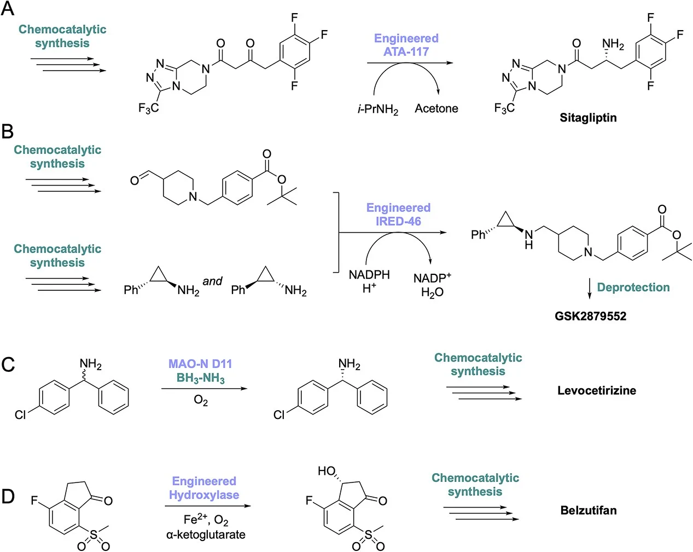
Figure 18: API의 화학효소적 합성을 위한 조작된 효소. (A) 시타글립틴 합성에서의 거울상이성질체 선택적 아미노기전이 반응; (B) 조작된 IRED를 이용한 GSK2879552 핵심 중간체의 라세미 분할; (C) 레보세티리진 전구체의 탈라세미화; (D) 벨주티판 합성에서의 선택적 하이드록실화.
이러한 사례들은 (공학적으로 개량된) 효소가 관여하는 다단계 촉매 반응을 결합함으로써 정밀한 화학적 변환을 달성하고, 키랄 API 생산을 위한 유기 합성에서 생체촉매작용의 효율성, 지속가능성 및 적용성을 증진할 수 있음을 보여준다. 나아가 표적 공정 매개변수가 진화 캠페인의 초기 스크리닝 라운드에서 식별되고 적용되어야 함을 입증한다. 이는 “원하는 것만 스크리닝되어 얻어진다(You only get what you screen for)”는 지향 진화의 일반적 원리(Schmidt-Dannert and Arnold 1999)에 부합하여
공정에 최적화된 맞춤형 효소의 개발을 가능하게 한다. 가까운 미래에 생체촉매작용은 새로운 생체촉매 및 화학효소적 전략의 개발을 통해 점점 더 복잡한 반응을 해결하게 될 것이다. 광화학 및/또는 전기화학에서 유래된 상호보완적 방법론과 다중 효소를 화학효소적 공정에 통합함으로써 복잡한 분자의 효율적인 합성이 가능해질 것으로 기대된다. 또한, 효소의 지향 진화를 통한 “비자연적 생체촉매작용(unnatural biocatalysis)”의 등장은 효율적이고 입체선택적인 C-C 및 C-헤테로원자 결합 형성을 촉진할 것이다. 이러한 생체촉매작용의 새로운 조류는 첨단 기술을 발전시키고 키랄 API의 비용 효율적인 생산을 가능하게 하는 혁신적인 기회를 창출할 것으로 기대된다. 궁극적으로 특정 반응을 위해 계산적으로 설계된 효소의 미세 조정과 효소 공학에 인공지능(AI) 및 머신러닝(ML)의 통합은 새로운 촉매 기능을 규명하고 더 친환경적인 산업 공정을 촉진하는 데 필수적일 것이다. 이는 특히 비수계 용액에서의 적용에 중요하며, 화학효소 공정에서 효소의 활용을 더욱 촉진할 것이다.
이러한 사례들은 (공학적으로 개량된) 효소가 관여하는 다단계 촉매 반응을
합성 고분자의 효소적 분해 (Andreas Gagsteiger, Onur Turak, Birte Höcker*)
자연적으로 존재하는 효소와 공학적으로 개량된 효소는 큐틴, 셀룰로오스, 리그닌, 키틴과 같이 분해가 어려운 생체 고분자를 분해하는 능력을 입증해 왔다. 이러한 효소들은 견고한 플라스틱을 포함하여 화학적으로 연관된 합성 고분자를 분해하는 잠재력에 대해서도 연구되어 왔다. 1990년대에는 미생물 배양물이 고분자 분해를 평가하는 데 일반적으로 사용되었다. 폴리에틸렌 테레프탈레이트(PET)를 분해하는 것으로 밝혀진 최초의 분리 효소 중 하나는 TfH였다(Müller et al. 2005). 이후 천연 고분자가 축적되는 환경의 메타유전체(m
etagenome)가 훌륭한 효소 자원임이 밝혀졌으며, 예를 들어 퇴비 탐색을 통해 잎-가지 퇴비 큐티나아제(leaf-branch compost cutinase, LC-cutinase)가 발굴되었다(Sulaiman et al. 2012). 다수의 다른 가수분해효소가 발견되었으며, 이들 중 대부분은 PET를 탈중합(PETase)하지만 폴리우레탄과 같은 다른 고분자도 분해한다(플라스틱 활성 효소 데이터베이스 PAZy 참조 (Buchholz et al. 2022)). 합성 고분자 분해를 위한 효소 공학에 대한 관심이 증가한 것은 플라스틱 폐기물 관리 부실에 대한 대중의 우려와 밀접한 상관관계가 있다. 주요 이정표는 2016년 이데오넬라 사카이엔시스(Ideonella sakaiensis)에서 다중 효소 기반 PET 분해 경로가 발견된 것으로(Yoshida et al. 2016), 이는 생물학적 재활용의 잠재력을 부각시켰으며 보다 효율적인 효소를 식별하고 최적화하려는 노력을 촉발하였다. 핵심 전략에는 새로운 효소 후보를 발굴하기 위한 메타유전체 마이닝과 PET 분해 성능을 향상시키기 위한 이들 효소의 공학적 개량이 포함되었다.
많은 연구가 PET의 유리 전이 온도(glass-transition temperature) 근처에서 활성을 발휘할 수 있도록 효소의 열안정성을 높이는 데 집중되었다. 이들 조작된 변이체는 고온에서 고분자 사슬의 이동성 향상으로 인해 반응 속도론이 가속화되고 기질 접근성이 향상됨에 따라 분해 효율이 현저히 개선되었다. IsPETase를 기반으로 DuraPETase, FAST-PETase, HotPETase와 같은 여러 강력한 효소가 조작되었다(Wei et al. 2022). 이러한 변이체는 지향 진화, 계산 설계 및 AI 기반 예측과
같은 다양한 단백질 공학 전략을 사용하여 생성되었으며(그림 19 참조), PHL7(Sonnendecker et al. 2022) 및 LC-cutinase(Sulaiman et al. 2012)와 같은 다른 효소도 산업적 재활용 공정에 사용되도록 성공적으로 최적화되었다. 여기에는 온도, pH, 이온 강도의 변동과 같은 반응 조건 변화에 대한 견고성과 생성물 억제에 대한 저항성이 포함된다. 가장 효율적인 효소는 전처리된 소비 후(post-consumer) PET를 10시간 이내에 거의 완전히 탈중합할 수 있다. 그러나 이러한 효소가 비정질(amorphous) PET에서는 우수한 성능을 보이는 반면, 결정성이 높은 영역의 분해는 여전히 주요 과제로 남아 있다. 이들 효소의 공학적 개량 및 설계에서 어려운 점 중 하나는 효소-고분자 계면 상호작용에 대한 이해가 제한적이라는 점이다. 상호작용 연구와 모델링에서 더 짧은 사슬의 기질 유사체가 종종 사용되었으나, 이는 실제 PET 기질을 정확하게 모방하지 못한다. 벌크 기질 및 그 표면에 대한 최근의 계산 모델링 연구는 이러한 단백질-고분자 상호작용을 규명하고 보다 효과적인 생체촉매의 합리적 설계를 안내할 유망한 경로를 제공한다(Jäckering et al. 2024).
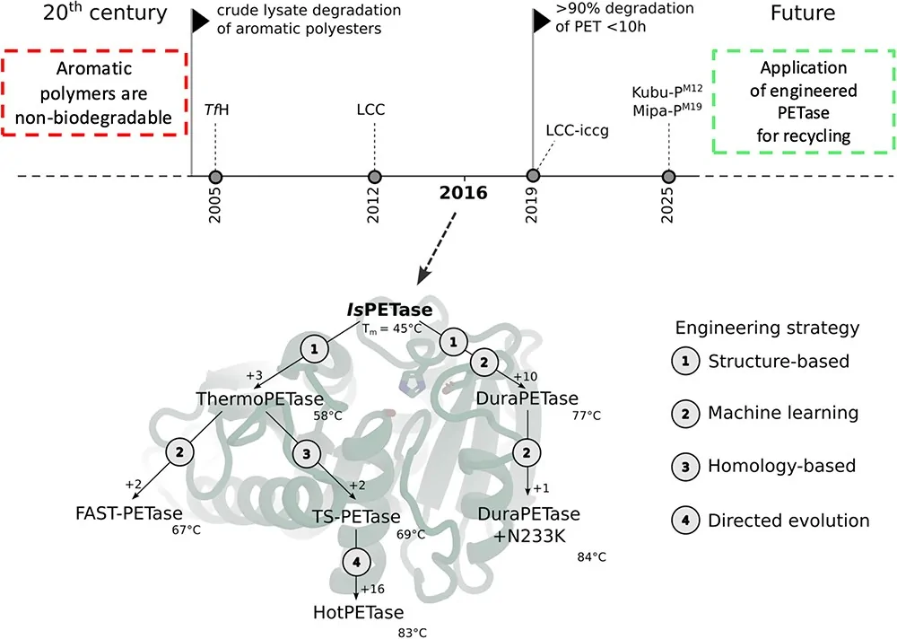
Figure 19: 조작된 PETase를 이용한 효소적 재활용 연구의 발전. 2005년 테르모비피다 푸스카(Thermobifida fusca)에서 최초의 PETase인 TfH가 분리되기 전까지는 PET와 같은 방향족 폴리에스터가 생분해되지 않는 것으로 여겨졌다. 시간이 지남에 따라 PET의 유리 전이 온도에 더 가깝게 작동하고 열안정성을 높이기 위해 주로 PETase의 용융 온도(Tm)를 증가시킴으로써 PET 가수분해 속도가 향상되었다. 2016년 이데오넬라 사카이엔시스 PETase(IsPETase)가 발견되면서 Tm을 높이
기 위한 광범위한 공학적 연구가 시작되었다. 여러 방법론(전략 1~4)이 적용되어 FAST-PETase(Tm = 67°C), HotPETase(Tm = 83°C), DuraPETase(Tm = 77°C)와 같은 변이체가 개발되었다. 각 변이체에 도입된 돌연변이 수는 화살표 머리에 “+N”으로 표시되어 있다.
PETase에 대한 현재의 통찰을 바탕으로 효소적 플라스틱 분해를 발전시키기 위해 다양한 경로를 모색할 수 있고 또 모색해야 한다. 다양한 화합물의 출발 물질(educt)을 생성하는 대체 공정이나 고분자 사슬의 접근성을 높이기 위해 비수계 매질을 활용하는 공정은 현재의 재활용 노력보다 더 실현 가능한 솔루션을 제공할 수 있다. 이러한 전략을 완전히 활용하기 위해서는 Kubu 및 Mipa와 같은 공학적 개량(Seo et al. 2025)이나, (잠재적) 극한 미생물 유래 효소의 발굴(Turak et al. 2025)을 통해 효소 포트
폴리오를 더욱 다양화하여 덜 통상적인 반응 조건을 적용할 수 있도록 해야 한다. 새로운 효소와 관련 공정 간의 유의미한 비교를 가능하게 하기 위해서는 기질, 평가 및 결과 보고의 표준화가 중요하다(Wei et al. 2025). 플라스틱 분해를 위한 효소 공학의 파급력을 넓히기 위해서는 분해가 어려운 폴리올레핀과 같은 다른 고분자를 표적으로 삼아야 하며, 진전과 성공을 가속화하기 위해 PETase 연구에서 얻은 핵심 교훈을 통합해야 한다. 여기에는 기존 고분자를 분해하기 위한 최적 조건을 찾거나, 맞춤형 효소에 상응하는 새롭고 더 쉽게 분해 가능한 고분자를 설계하기 위한 재료 공학과 효소 공학 간의 보다 깊은 연계가 포함된다.
PETase에 대한 현재의 통찰을 바탕으로 효소적 플라스틱 분해를 발전시
바이오매스 가공 (Anikó Várnai, Vincent G.H. Eijsink*)
바이오매스, 특히 비식용 바이오매스의 효소적 고부가가치화(valorization)는 최근 수십 년 동안 많은 주목을 받아왔으며, 학계와 산업계 모두에서 효소 발굴 및 단백질 공학에 대한 막대한 노력을 촉진하였다. 이 분야의 대부분의 연구는 바이오매스에 풍부하게 존재하는 불용성 동질다당류(homopolymeric polysaccharide), 특히 짚 및 기타 식물 재료의 셀룰로오스와, 상대적으로 적은 양이지만 갑각류 껍질 및 진균 세포벽의 키틴을 탈중합하는 데 필요한 복잡한 효소 시스템(그림 20)을 규명하고 조작하는 데 집중되어
왔다(Østby et al. 2020). 탈중합은 가수분해효소(셀룰라아제(Payne et al. 2015) 및 키티나아제(Vaaje-Kolstad et al. 2013))와 비교적 최근에 발견된 산화환원 효소인 용해성 다당류 모노옥시게나아제(lytic polysaccharide monooxygenase, LPMO)(Horn et al. 2012; Bissaro and Eijsink 2023)의 협동 작용에 의해 달성된다.
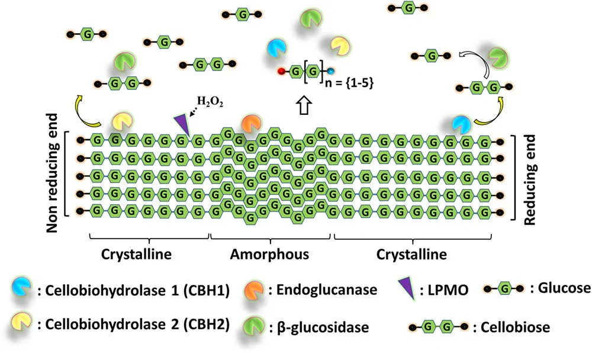
Figure 20: 셀룰로오스 분해에 관여하는 효소들. 서로 다른 명칭을 가진 다양한 유형의 셀룰라아제가 셀룰로오스 섬유의 각기 다른 부위에 작용한다. 예를 들어 진행성(processive) 셀로비오하이드롤라아제는 결정성 영역의 사슬 말단에서 작용하며, 엔도글루카나아제는 보다 비정질인 영역에 작용한다. LPMO는 산화 화학을 사용하여 결정성 영역에 사슬 절단을 도입함으로써 이러한 영역의 접근성을 높인다. LPMO에 의해 방출되는 가용성 생성물은 주로 4~8개의 당 길이를 가지며, 색상 점으로 표시된 바와 같이 사슬 말단 중
하나에서 산화된다. 이 그림은 Chaudhari et al. (2023)에서 인용하였다. 키틴 탈중합을 위한 전형적인 효소 시스템도 유사한 양상을 보인다(Vaaje-Kolstad et al. 2013).
셀룰라아제를 예로 들어 산업적 관점에서 살펴보면, 다수의 단백질 공학 표적이 추구되고 달성되어 특정 작동 pH 범위에서 향상된 안정성과 촉매 활성을 갖는 효소, 그리고 생성물 억제 또는 기질에 대한 비생산적 흡착이 감소된 효소가 개발되었다(Chaudhari et al. 2023). 생산의 용이성(비용) 또한 중요한 선별 및 공학 표적이다. 초기 공학 연구는 트리코더마 레세이(Trichoderma reesei) 및 테르모비피다 푸스카(Thermobifida fusca) 유래 셀룰라아제에 대한 선구적 연구를 포함하여 주로 셀룰라아제 기
능의 이해에 초점을 맞추었다(Schülein 2000; Wilson 2009; Lantz et al. 2010). 셀룰라아제 특성 개선과 관련하여 주목할 만한 초기 사례를 시작으로 안정성과 활성 개량이 문헌에서 가장 두드러지게 다루어졌다(Heinzelman et al. 2009; Lantz et al. 2010; Taylor et al. 2018). 오늘날의 효율적인 상업용 셀룰라아제 칵테일은 수십 년간의 효소 발굴과 단백질 공학 기술을 이용한 효소 특성의 맞춤형 개량이 이루어낸 결실이다(Harris et al. 2014; Østby et al. 2020). 이러한 발전은 대규모 돌연변이 라이브러리의 구축과 스크리닝을 위한 현실적인(즉, 불용성) 기질의 사용 없이는 불가능했을 것이다(Lantz et al. 2010). 이러한 복합 칵테일의 등장은 산업 효소학의 주요 성과인데, 이 분야의 성공은 다중 효소의 병렬적 최적화를 필요로 했기 때문이다. 주목할 점은, 이러한 기반 효소 공학 연구의 상당 부분이 상업용 효소 공급업체에 의해 수행되어 과학계에는 널리 알려지지 않았다는 사실이다. 또한 대중에게 공개된 공학 연구들이 산업적으로 관련이 없는 기질과 반응 조건을 채택하는 경우가 많다는 점도 유념해야 한다.
단백질 공학은 키틴과 셀룰로오스의 효소적 전환에서 핵심적인 역할을 하는 진행성 엑소 작용 가수분해효소(processive exo-acting hydrolase) 성능의 구조적 결정요인을 규명하는 데 결정적인 역할을 했다(Vaaje-Kolstad et al. 2013; Payne et al. 2015). 이들은 방향족 잔기로 둘러싸인 기질 결합 틈(cleft)이나 터널을 가지고 있어 다당류 사슬의 여러 당 단위체와 동시에 상호작용할 수 있는 복잡한 효소이다. 여러 연구진이 다양한 효소를 대상으로 진행한 공학 연구를 통해 기질 결합과
진행성의 구조적 결정요인이 밝혀졌다. 중요하게도, 이러한 연구들은 진행성 작용과 결정성 물질에 대한 활성에 필요한 강한 결합과, 강한 결합에 수반되는 느린 해리 속도(off-rate)로 인해 저해되는 촉매 속도 사이의 상충 관계(trade-off)를 드러냈다(Horn et al. 2006; Igarashi et al. 2011; Kurasin and Väljamäe 2011; Kari et al. 2014, 2018; Schaller et al. 2022). 높은 기질 결합력은 또한 생성물 억제 및 기질에 대한 비생산적 결합의 위험을 수반한다. 분명히 기질 및 생성물 친화도는 정밀하게 조절되어야 하며, 이는 셀룰라아제와 키티나아제 공학의 주요 표적이다. 주목할 점은, 셀룰라아제에 탄수화물 결합 모듈(carbohydrate-binding module, CBM)을 부착하거나 삭제하여 기질 친화도를 조작하는 것이 널리 쓰이는 공학 전략이라는 것이다. 그러나 산업적 바이오매스 가공에서 이 전략의 실질적 가치는 여전히 다소 불분명하다(Cruys-Bagger et al. 2013; Várnai et al. 2013; Chaudhari et al. 2023).
바이오매스 가공용 효소의 추가 개발은 효소 (재)설계를 위한 AI 기반 도구의 급격한 발전으로부터 의심할 여지 없이 큰 혜택을 받을 것이다. 그러나 위에서 지적했듯이, 계면 촉매작용의 특수한 특성(Kari et al. 2018)과 최적의 방식으로 함께 작동하는 다중 효소의 필요성으로 인해 최적화 과제는 여전히 매우 까다롭다. LPMO의 기여가 어떻게 최적화될 수 있는지에 대해서는 알려진 바가 거의 없다(Østby et al. 2023). 흥미롭게도 이 중요한 효소들은 다소 이례적이며 지금까지 거의 탐구되지 않은 공학적 과제를 제시하
는데, 산업적 성능을 높이기 위해서는 예를 들어 보호성 정공 도약 경로(hole hopping route)를 맞춤 설계하여 자가촉매적 산화 불활성화에 견디는 능력을 향상시켜야 하기 때문이다(Ayuso-Fernández et al. 2024). 상당한 진전에도 불구하고(Igarashi et al. 2011; Jalak et al. 2012; Vaaje-Kolstad et al. 2013; Payne et al. 2015; Zajki-Zechmeister et al. 2022; Sørlie et al. 2023), 개별 효소와 효소 칵테일의 향후 최적화를 추진하기 위해서는 다양한 효소 유형 간의 상호작용에 대한 더 깊은 이해가 여전히 절실히 필요하다. 중요하게도, 이러한 상호작용은 기질의 특성(예: 결정화도)에 따라 달라지며, 해당 기질의 효소 처리 과정 동안 변화하므로(Olsen et al. 2017; Hamre et al. 2019), 개선된 바이오매스 전환 효소의 합리적 설계에 또 다른 복잡성을 더한다.
항체 및 치료제
## 항체 및 치료제
종양학 응용을 위한 엔지니어링 항체 (Sacha Zinn, Daniel Christ*)
1997년 리툭시맙(rituximab)의 승인 이후 25주년이 지난 현재(Grillo-López et al. 1999), 단클론 항체(monoclonal antibodies, mAbs)는 암 치료의 중추적 기둥으로 자리 잡았다(Zinn et al. 2023). 1975년 쾰러(Kohler)와 밀스타인(Milstein)에 의해 하이브리도마(hybridoma) 기술이 개척된 이래(Köhler and Milstein 1975), 뮤린(설치류) 유래 항체의 치료적 한계가 빠르게 명백해졌으며, 이에 따라 1984년 최초의 키메라 인간 항체가
개발되었다(Boulianne et al. 1984; Morrison et al. 1984). 이는 1986년 윈터(Winter) 연구진에 의한 항체 인간화 기술의 발견으로 빠르게 이어졌다(Jones et al. 1986a). 1987년에는 단백질 공학을 이용하여 항원 결합 친화도를 향상시킬 수 있음이 처음 입증되었고(Roberts et al. 1987), 1990년에는 파지 디스플레이 시스템으로부터 최초의 완전 인간 단클론 항체가 탄생하였다(McCafferty et al. 1990b). 인간화, 친화도 성숙, 개발가능성(developability) 최적화, 면역원성 감소를 포함하는 이러한 항체 공학 전략들은 항체가 치료제로서 압도적인 성공을 거두는 데 필수적인 역할을 해왔다(Jones et al. 1986b; Riechmann et al. 1988; Lowe et al. 2011; Dudgeon et al. 2012; Rouet et al. 2012; Liu et al. 2020). 보다 최근에는 Fc 엔지니어링, 글리코엔지니어링(당사슬 공학), 구조 최적화가 항체의 안전성과 효능을 증대시키는 핵심 전략으로 자리 잡아 현대 엔지니어링 항체 플랫폼의 근간을 형성하고 있다(그림 21).
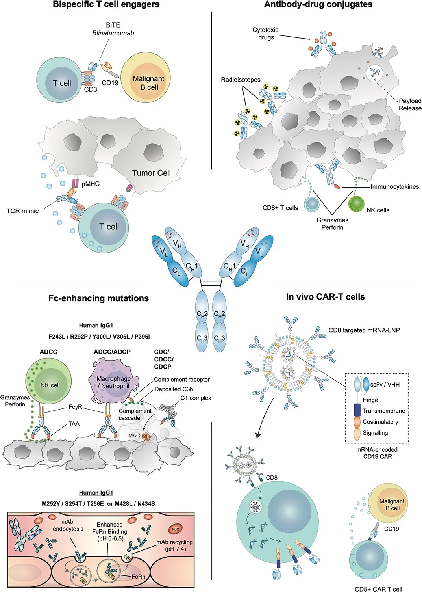
Figure 21: 암 치료에서의 항체 및 항체 유래 제제. 중앙 패널: 전장 엔지니어링 IgG1 단클론 항체(150 kDa)의 모식도. 좌상단 패널(치료 모달리티): T 세포 인게이저(TCE)는 일반적으로 종양 연관 항원(TAA) 및 작용성 T 세포 표면 수용체(예: CD3)를 표적으로 하는 이중특이성 분자이다. TCR 모방체(TCR-mimic)는 암 연관 pMHC(예: KRAS G12V)를 표적으로 하여, 이제 세포 내 프로테옴 표적을 효과적으로 탐색할 수 있도록 해준다(Johansen et al. 2025a; Skrzy
pczynska, et al. 2025). 우상단 패널(치료 모달리티): 세포독성 약물 접합체는 임상 승인된 ADC의 절대다수를 차지하며(Staudacher and Brown 2017; Fu et al. 2022; Woodford et al. 2025), 방사성 동위원소 접합체와 면역사이토카인은 모두 항종양 활성에서 고유한 잠재력을 입증하고 있는 성숙 단계의 기술이다(Yamaguchi et al. 2022; Rotta et al. 2024; Santollani et al. 2024). 좌하단 패널(최근 진보): 이펙터 기능 향상을 위한 Fc 엔지니어링은 일반적으로 종양에 대항하는 항체 의존성 세포독성(ADCC), 항체 의존성 세포포식작용(ADCP), 보체 의존성 세포독성(CDC) 활성을 개선하기 위해 FcγR 및 C1q에 대한 친화도를 높이는 것을 목표로 한다(van der Horst et al. 2020; Hale et al. 2024). mAb 재활용을 개선하는 FcRn 강화 돌연변이는 임상 승인된 mAb에 도입되어 혈청 반감기의 현저한 향상을 이끌어냈다(Ramdani et al. 2022; Ko et al. 2025). 우하단 패널(최근 진보): 항체와 mRNA-LNP의 접합은 표적화 특성을 부여하여 특정 세포 유형의 형질주입(transfection)을 가능하게 한다(Bui et al. 2024). 항-CD19 CAR를 암호화하는 CD8 표적화 LNP(tLNP)는 전임상 연구에서 활성 CAR-T 세포 생성에 성공적인 결과를 보여주었다(Hunter et al. 2025).
CTLA-4, PD-1, PD-L1을 표적으로 하는 항체를 포함하는 면역관문 억제제는 암 면역치료에서 혁신적인 진보를 보여주며, 특정 종양 유형 전반에 걸쳐 지속적인 반응을 이끌어낼 수 있는 잠재력을 지닌다(Lee et al. 2016; Waldman et al. 2020). 동물 모델과 환자 유전적 다형성 분석은 치료 효능에 있어 Fcγ 수용체 생물학의 중심적인 역할을 부각시켰다(Clynes et al. 2000; Weng and Levy 2003; Musolino et al. 2008). 항체-약물 접합체(ADC)는 항체의 특이
성과 강력한 세포독성 페이로드를 결합함으로써 치료적 돌파구를 마련하였다(Fu et al. 2022). 페이로드 화학, 링커 설계, 부위 특이적 접합의 발전은 트라스투주맙 엠탄신(trastuzumab emtansine), 브렌투시맙 베도틴(brentuximab vedotin), 트라스투주맙 데룩스테칸(trastuzumab deruxtecan)과 같은 임상적으로 검증된 ADC의 성공을 견인하였다(Chari et al. 2014; Dott et al. 2018; Woodford et al. 2025). 이러한 치료제들은 높은 치료 지수(therapeutic index)를 달성하는 데 있어 표적 내재화, 리소좀 처리 과정, 페이로드 방출의 정밀한 메커니즘이 중요함을 보여준다(Staudacher and Brown 2017). 단편 기반 블리나투모맙(blinatumomab)을 포함하는 이중특이성 T 세포 인게이저(Burt et al. 2019)는 CD8+ 이펙터 T 세포를 표적 암 항원으로 직접 동원함으로써 강력한 세포독성을 유도한다(Douglass et al. 2021). 177Lu-PSMA-617(Pluvicto)과 같은 표적 방사성핵종 치료제를 포함한 방사선면역접합체(radioimmunoconjugate)는 종양 국소 방사선의 전신 전달을 가능하게 만들었다(Sartor et al. 2021).
현재의 혁신 분야는 선택성 향상, 표적 범위 확장, 치료 윈도우(therapeutic window) 개선에 초점을 맞추고 있다(Vazquez-Lombardi et al. 2015; Zinn et al. 2023; Rotta et al. 2024). 프로테아제 절단 부위가 설계된 마스킹 항체 포맷은 전신 독성을 줄이고 치료 잠재력을 넓히는 것을 목표로 한다(Ratcliff et al. 2021; Orozco et al. 2022). 대체 항체 이소타입뿐만 아니라 항체 Fc 부위의 엔지니어링(van der Horst et al. 202
0; Hale et al. 2024)은 새로운 이펙터 세포 집단을 동원하는 능력을 갖추도록 탐색되고 있으며, 이는 현재 항체 치료제를 지배하고 있는 인간 IgG1(및 IgG4) 이소타입으로는 도달할 수 없었던 항종양 활성을 열어줄 잠재력을 지닌다(Vukovic et al. 2021). T 세포 수용체 모방(TCR-mimic) 항체는 펩타이드-주요 조직적합성 복합체(pMHC) 인식을 통해 세포 내 항원을 표적화할 수 있게 하지만, 결합체 특이성, MHC 다양성, 표적 선택은 여전히 핵심적인 공학적 과제로 남아 있다(Douglass et al. 2021; Wright et al. 2023). 신규 페이로드를 포함한 ADC 기술의 발전은 내성 기전을 억제하고 효능을 향상시킬 것으로 기대된다(Chari et al. 2014; Fu et al. 2022; Woodford et al. 2025). 사이토카인 무장 항체(cytokine-armed antibodies), 공자극 수용체 작용제, 다가 이중특이성 항체, 지질나노입자(LNP) 접합 및/또는 LNP 암호화 항체는 유망한 새로운 접근 방식을 제공하며(그림 21), 엔지니어링 항체를 차세대 암 치료제의 최전선에 자리매김하게 한다(Waldman et al. 2020; Douglass et al. 2021; Bui et al. 2024; Hunter et al. 2025).
현재의 혁신 분야는 선택성 향상, 표적 범위 확장, 치료 윈도우(ther
이중특이성 항체 (Oliver Seifert, Roland E. Kontermann*)
이중특이성 항체(bispecific antibodies, bsAbs)의 개념은 연구자들이 1가 항체 단편의 혼합물을 재조합하여 혼합된 특이성을 가진 항체를 얻을 수 있음을 처음 입증했던 1960년대에 시작되었다(Nisonoff and Rivers 1961). 그러나 실질적인 개발은 1980년대 하이브리도마 기술의 출현과 함께 시작되었는데, 이는 단클론 항체의 생산을 가능하게 하였고 두 항체의 화학적 접합이나 두 하이브리도마를 쿼드로마(quadroma)로 융합하여 여러 산물 중에서도 이중특이성 항체를 생산하는 등의 방식을 통해 이중
특이성 구조체를 제작하도록 연구자들을 고무시켰다(Milstein and Cuello 1983). 이후 재조합 DNA 기술의 발전으로 항체 단편의 유전적 융합이 가능해지면서 보다 정형화된 형태의 포맷들이 개발되었다(Riethmüller 2012). 이러한 엔지니어링의 핵심은 단일 사슬 가변 단편(scFv), 단일 도메인 항체, Fab 단편을 포함하는 빌딩 블록의 활용에 있으며, 이들은 동족(cognate) 경쇄와 중쇄의 올바른 짝지음을 촉진하고 이종이량체(heterodimeric) 중쇄 형성을 유도하도록 설계된 Fc 부위 및 그 유도체들과 결합될 수 있다(Madsen et al. 2024). 이는 다양한 원자가(valency)와 기하학적 구조를 갖는 100가지 이상의 서로 다른 포맷으로 이루어진 거대한 ’동물원(zoo)’을 낳았다(Brinkmann and Kontermann 2017). 이중특이성 항체의 기본 원리는 항체가 두 개의 서로 다른 표적에 동시 또는 순차적으로 결합할 수 있는 능력을 부여함으로써 약물다운 특성(drug-like properties)을 유지하면서도 치료적 특이성과 효능을 극대화하는 것이다.
현재 이 분야는 360개 이상의 bsAb가 임상 개발 단계에 있으며, 다양한 표적과 메커니즘을 탐색하는 급속한 성장세를 특징으로 한다(Brinkmann and Kontermann 2026). 주요 접근법으로는 T 세포 인게이지먼트와 면역관문 조절이 지배적이며, 사이토카인 방향 전환, 이중 경로 억제, 약물 전달과 같은 추가적인 작용 기전도 다루어지고 있다(그림 22)(Nie et al. 2020). 현재까지 20개의 bsAb가 치료용으로 승인되었으며, 대부분은 암 치료용이고 일부는 비암성 질환을 적응증으로 한다(Klein et al
. 2024b). 대표적인 bsAb 사례들은 개념적 혁신에서 임상적 성공에 이르는 이 분야의 발전을 잘 보여준다. 상피세포 부착분자(EpCAM)를 발현하는 종양 세포로 T 세포를 유도하는 쿼드로마 유래 bsAb인 카투막소맙(catumaxomab)은 2009년 유럽에서 승인된 최초의 치료용 bsAb였다. 2014년에 승인된 최초의 유전공학적 bsAb는 블리나투모맙(blinatumomab)으로, T 세포와 CD19 발현 B 세포 악성종양을 결합시키는 이중특이성 T 세포 인게이저(BiTE)이다. 또 다른 주요 성과는 활성화된 제IX인자와 제X인자를 가교하여 혈우병 A 환자의 응고 기능을 회복시키는 에미시주맙(emicizumab)으로, 이는 종양학 범위를 넘어선 bsAb 응용의 대표적 사례이다. 보다 최근의 혁신에는 EGFR 및 MET 변이 비소세포폐암을 위한 아미반타맙(amivantamab)과 다발골수종을 위한 테클리스타맙(teclistamab)이 포함되며, 두 약물 모두 다양한 암종 전반에 걸친 bsAb의 다재다능성을 입증하고 있다. 한편, 임상시험에서 연구된 140개 이상의 bsAb가 개발 중단되거나 추가 진행되지 못했는데, 이는 주로 효능 부족, 안전성 문제 또는 비즈니스적 이유에 기인한 것으로, 여전히 개선의 여지와 최적의 표적 조합에 대한 깊은 고려가 필요함을 시사한다(Brinkmann and Kontermann 2026).
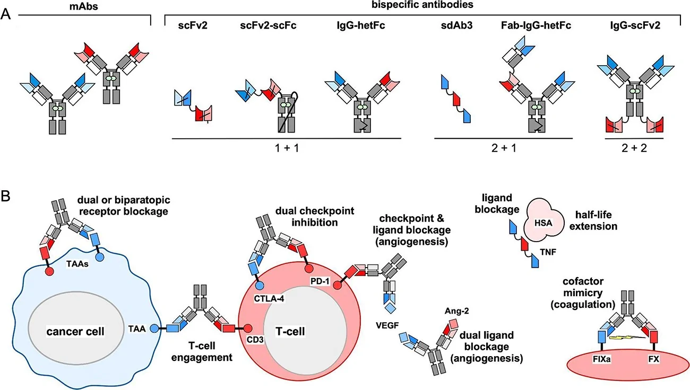
Figure 22: 이중특이성 항체의 구조 및 응용. (A) 치료용으로 승인된 다양한 원자가를 갖는 여러 포맷의 이중특이성 항체 예시 (좌측부터 우측 순): 탠덤 scFv (scFv2), 탠덤 scFv-단일 사슬 Fc (scFv2-scFc), IgG-hetFc, 삼중 단일 도메인 항체 (sdAb3), fab-IgG-hetFc, IgG-scFv2. (B) 암 및 비암 적응증에서의 이중특이성 항체의 치료적 응용.
이중특이성 항체 분야의 새로운 트렌드는 약동학, 안정성 및 Fc 매개 이펙터 기능을 조절하기 위한 Fc 엔지니어링, 그리고 조율 가능한 친화도와 전구약물(prodrug) 또는 종양 미세환경 활성화 설계와 같은 조건부 활성화 메커니즘을 갖춘 엔지니어링 bsAb를 통해 온-타깃 오프-튜머(on-target off-tumor) 효과와 전신 독성을 최소화하여 치료 정밀도와 안전성을 향상시키는 데 집중되고 있다. 삼중특이성(trispecific) 및 다중특이성(multispecific) 항체와 같은 신규 포맷은 bsAb 원리를 확장하여 여러
경로를 동시에 표적화함으로써 면역 조절을 강화하고 약물 내성을 극복한다(Goebeler et al. 2024). 또한 bsAb를 CAR-T 세포, 면역관문 억제제 또는 사이토카인 치료법과 통합하는 병용 전략은 시너지 효능을 입증하고 있다. 이 분야는 또한 기성품(off-the-shelf) 모듈형 플랫폼과 바이러스 벡터 또는 mRNA를 이용한 유전자 전달 bsAb로 나아가고 있어, 보다 유연하고 지속적인 치료 옵션을 제공하고 있다. 종합적으로, 이러한 혁신들은 더 스마트하고 안전하며 효과적인 항체 치료제의 새로운 시대를 열어가고 있으며, bsAb를 차세대 면역치료의 핵심 초석으로 확립하고 있다.
이중특이성 항체 분야의 새로운 트렌드는 약동학, 안정성 및 Fc 매개 이
단일 도메인 항체 (Fang Zheng, Serge Muyldermans*)
단일 도메인 항체(single-domain antibodies, sdAbs)의 개발은 낙타과 동물(낙타, 단봉낙타, 라마, 알파카)에서 기능적인 중쇄 전용 항체(heavy chain-only antibodies, HcAb)가 우연히 발견된 이후 본격화되었다(Hamers-Casterman et al. 1993). 이 동종이량체 항체는 중쇄 전용 항체의 중쇄 가변 도메인(variable domain of the heavy chain of heavy-chain-only antibodies, VHH)이라 불리는 단일 가변 도메인을 통해 항
원을 인식한다(그림 23). 연구자들은 표적 항원으로 낙타과 동물을 면역화하고 말초혈액 림프구로부터 VHH 레퍼토리를 클로닝한 후, 파지 디스플레이를 사용하여 항원 특이적 결합체를 분리함으로써 sdAb 제작을 시작하였다(섹션 시험관 내 디스플레이 (Takuya Terai, Naoto Nemoto*) 참조)(Arbabi Ghahroudi et al. 1997). 면역 라이브러리 외에도, 면역화가 비실용적이거나 윤리적으로 제한될 때 유용한 대안으로 항원 결합 루프의 코돈을 무작위화한 대규모 나이브(naïve) 및 합성 라이브러리가 구축되었다(Muyldermans 2021). 머신러닝(ML) 및 인공지능(AI)의 최근 발전은 미리 정의된 에피토프 특이성과 중등도 내지 높은 친화도를 갖는 sdAb의 인실리코(in silico, 컴퓨터 기반) 설계를 가능하게 하였다(Mille-Fragoso et al. 2025). VHH는 미생물 숙주에서 효율적으로 발현되고, 높은 용해도를 나타내며, 구조적으로 안정하고 견고하다. 중요한 것은 이들이 인간 VH 도메인과 상당한 서열 상동성을 공유하여 낮은 면역원성(Ackaert et al. 2021)과 뛰어난 치료 잠재력을 뒷받침한다는 점이다.
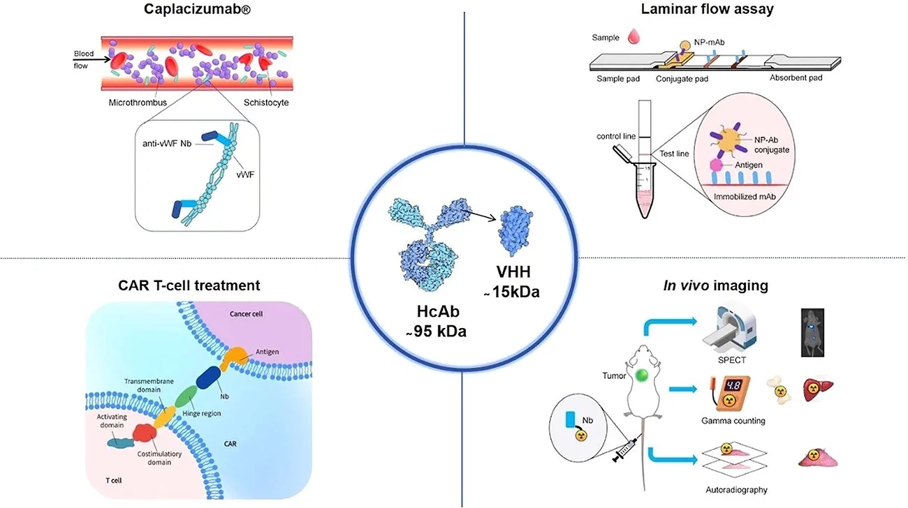
Figure 23: 치료 및 진단 분야에서의 나노바디 응용. 중앙 패널: HcAb(~95 kDa) 및 VHH(~15 kDa, PDB ID 7DJY)의 구조와 분자량(Wen and Zheng 2020). HcAb 모식도는 Goodsell(Goodsell 2011)의 그림을 개작함. 좌상단 패널: 치료제 카플라시주맙(Caplacizumab®)은 vWF 결합을 통해 미세혈전증을 억제하여 미세혈전 및 분열적혈구(schistocyte)를 감소시키는 항-vWF 나노바디이다. 좌하단 패널: CAR-T 세포 치료제는 나노바디를 활용하여 T
세포가 암세포 항원을 표적화하도록 할 수 있다. 우상단 패널: 나노바디 기반 측방 유동 분석(lateral flow assay)은 나노입자-항체 접합체와 고정화된 mAb를 통해 항원을 검출하는 진단 응용에 사용될 수 있다. 우하단 패널: 방사성 표지된 나노바디는 SPECT, 감마선 측정 계측 및 자가방사기록법(autoradiography)을 통해 생체 내 종양 영상화를 가능하게 한다.
고친화도 항원 특이적 VHH(나노바디[Nanobodies®]라고도 불림)는 일반적으로 면역화 후 2개월 이내에 분리될 수 있다. 이러한 나노바디는 연구, 진단 및 치료 분야에서 폭넓게 응용되고 있다(Yu et al. 2024). 구조생물학에서 나노바디는 결정화 샤페론(crystallization chaperone)으로 작용하여 기존 방식으로 규명하기 어려웠던 단백질의 구조 결정을 촉진한다. GFP 특이적 나노바디는 GFP 표지 단백질을 포획하기 위해 가장 널리 사용되는 시약 중 하나이다(Rothbauer et al. 2008). 세
포 내에서 발현될 때 나노바디는 안정하고 기능적인 상태를 유지하여 세포 내부 단백질을 표적으로 하는 인트라바디(intrabodies)로 기능한다(Rothbauer et al. 2006). 표적 특이적 나노바디와 GFP 또는 mRFP의 유전자 융합체(크로모바디, Chromobody)를 포유류 세포에서 발현시키면 살아있는 세포 내 항원의 위치 및 이동을 실시간으로 시각화할 수 있다. 나노바디는 생산 비용이 저렴하고 서양고추냉이 과산화효소(HRP)나 알칼리성 인산분해효소(AP)와 같은 효소와 쉽게 접합될 수 있어 다양한 효소결합면역흡착분석법(ELISA) 및 측방 유동 분석(lateral flow assay)의 기반이 된다(Yu et al. 2024). 신장 여과 한계치보다 작은 분자 크기와 다양한 방사성 표지 방법과의 적합성은 종양학에서 비침습적 영상 프로브로서의 활용을 가능하게 한다. 현재 카블리비(Cablivi), 카빅티(Carvykti), 나노조라(Nanozora), 안웨이다(Anweida) 등 4종의 나노바디 기반 치료제가 규제 기관의 승인을 받았다(Jovčevska and Muyldermans 2020).
나노바디는 향후에도 구조생물학, 특히 X선 결정학 및 초저온전자현미경(cryo-EM) 분야에서 없어서는 안 될 도구로 자리매김할 것으로 예상된다. 크로모바디 형태로는 세포 및 발생생물학에서 동적 영상화를 가능하게 할 것이다. 방사성 표지 나노바디는 종양학에서 유망한 테라노스틱스(theranostics, 진단-치료 복합) 제제로 부상하고 있다. 또한 효소 억제 나노바디는 염증성 질환과 바이러스 감염을 포함한 다양한 질병을 치료하기 위한 새로운 면역조절제로 작용할 수 있다. 바이러스의 면역 회피 돌연변이에 대한 반응성을 넓히고 G-단백
질 결합 수용체(GPCR)와 같은 다루기 힘든 막 단백질을 표적화하기 위한 단백질 공학 전략도 활발히 적용되고 있다(Kalogriopoulos et al. 2025). CAR-T 플랫폼으로의 나노바디 통합은 표적 면역치료의 확장되는 프론티어가 될 것으로 기대된다(Jovčevska and Muyldermans 2020). 마지막으로 뇌혈관장벽(BBB)을 통과할 수 있는 능력은 신경 질환 치료를 위한 새로운 가능성을 열어주고 있다(Zheng et al. 2022).
나노바디는 향후에도 구조생물학, 특히 X선 결정학 및 초저온전자현미경(c
특이적 결합 단백질로서의 대체 골격 (Andreas Plückthun*)
수십 년 동안 단클론 항체는 동물의 면역화를 통해 생산되어 왔다. 항체 유전자의 염기서열 분석과 구조적 특성 규명의 발전은 반합성 및 합성 DNA 라이브러리의 설계 및 구축과 디스플레이 기술의 개발을 가능하게 하였으며, 면역화 없이도 특이적 표적 결합에 대해 항체 단편을 선별할 수 있게 되었다 (Winter and Milstein 1991; Knappik et al. 2000). 이러한 접근법이 확립되자 항체 골격(scaffold) 자체는 더 이상 필수적이지 않게 되었으며, 원칙적으로 사실상 모든 단백질을 무작위화된 표면 및/또는
루프를 지닌 라이브러리로 공학적으로 개조할 수 있게 되었다. 대체 골격의 탐색은 주로 항체 단편의 한계에서 기인했는데, 여기에는 이황화 결합에 대한 의존성(세포질 내에서의 효율적인 발현을 제한함)과 β-샌드위치 구조(응집을 촉진할 수 있음)가 포함된다 (Wörn and Plückthun 2001). 그럼에도 불구하고, 재조합 항체 단편이 달성한 높은 친화도와 특이성은 모든 대체 골격이 뛰어넘어야 할 까다로운 기준이 되었다.
골격 단백질은 일반적으로 단백질 공학에 유리한 특성(Gebauer and Skerra 2020), 즉 단백질-단백질 상호작용에서의 천연적 역할, 컴팩트한 단일 도메인 구조, 높은 고유 안정성을 바탕으로 선택되어 왔다. 어떤 경우에는 무작위화된 루프를 도입하여 결합 영역 역할을 하도록 함으로써 항체 모방 설계를 추구하였다 (Fig. 24). 다른 골격들은 α-나선 배열 또는 β-시트 표면과 같은 단백질 표면을 결합 인터페이스로 활용한다. 반복 단백질(repeat protein)은 연속적인 상호작용 표면의 크기를 모듈식으로 조절할 수
있게 함으로써 이러한 개념을 더욱 확장한다 (Plückthun 2015; Stark et al. 2024). 대부분의 골격은 무작위화된 세그먼트를 갖는 단일 천연 골격 백본에서 유래되었지만, 또 다른 전략은 컨센서스 설계(consensus design)를 활용하는 것이었다 (Porebski and Buckle 2016). 즉, 상동성 계열 구성원의 서열 정렬을 사용하여 각 위치에서 가장 빈번한 잔기를 선택함으로써 매우 안정적인 컨센서스 프레임워크를 생성한다. 고안된 안키린 반복 단백질(Designed Ankyrin Repeat Proteins, DARPin, 접힌 도메인에 결합) (Plückthun 2015) 및 아르마딜로 반복 단백질(Armadillo Repeat Proteins, 선형 에피토프에 모듈식 결합) (Stark et al. 2024)이 이러한 접근법의 대표적인 예이다. 연속된 나선 표면과 루프만이 다양화되어 매우 견고한 접힘과 안정성을 보장한다. 안정한 기본 구조의 사용과 컨센서스 프레임워크 설계를 통해 달성된 매우 안정적인 라이브러리 골격에 대한 이러한 집중은 기능과 안정성 사이의 고유한 긴장 관계를 해결한다. 특이적 결합에는 특정 표면 잔기가 필요하며, 이는 종종 골격 표면에서 서로 근접해 있어 구조를 불안정하게 만들 수 있다. 따라서 매우 안정적인 컨센서스 골격에서 시작하면 결합을 위한 단백질 공학 과정에서 상당한 안정성 손실이 발생하더라도 여전히 안정적이고 특이적인 결합체를 얻을 수 있다.
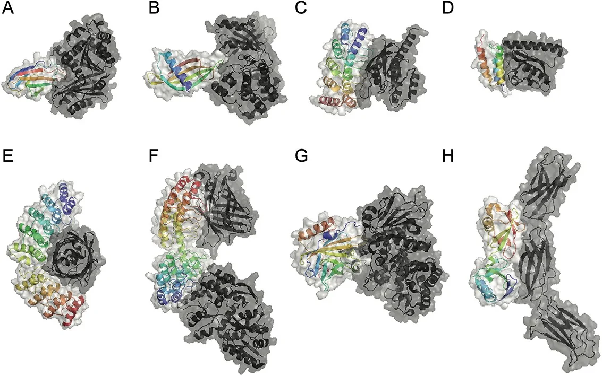
Figure 24: 동족 표적과 결합한 골격 단백질의 대표적인 구조. 이 구조들은 서로 다른 상호작용 모드(루프 및/또는 표면)와 다양한 구조적 형태(주로 α-나선, 주로 β-시트, 또는 혼합형)를 보여준다. 모든 경우에서 결합 단백질은 N-말단부터 C-말단까지 무지개색 카툰으로 표시되고 반투명한 밝은 회색 표면을 가지며, 표적은 짙은 회색 표면을 지닌 짙은 회색 카툰으로 표시된다. 기원 도메인과 일반적인 명칭이 명시되어 있다. (A) 피브로넥틴 타입 III 도메인(모노바디, 아드넥틴, 센티린) (PDB ID 8GZX) (F
ujita et al. 2023), (B) 시스타틴-A(아피머) (PDB ID 8C12) (Martin et al. 2023), (C) 고안된 안키린 반복 단백질(DARPin) (PDB ID 9GTK) (Kapp et al. 2025), (D) 단백질 A의 IgG-결합 도메인(아피바디) (PDB ID 5DJU) (Wang et al. 2016; Zhang and Zhang 2024), (E) 표적을 감싸고 있는 연결된 DARPin (PDB ID 5MA5) (Hansen et al. 2017), (F) 두 표적과 결합하는 견고하게 융합된 DARPin (PDB ID 5LEM) (Wu et al. 2017b), (G) 리포칼린(안티칼린) (PDB ID 6SUA) (Deuschle et al. 2020), (H) 유비퀴틴 또는 γ-B-크리스탈린(아필린) (PDB ID 8PEQ) (Katzschmann et al. 2024).
종결 코돈을 제거하고 혼합 코돈 편향을 제어하는 삼중뉴클레오타이드 기반 합성과 같은 합성 라이브러리 기술의 발전(Virnekäs et al. 1994)은 강력한 선별 및 지향 진화 플랫폼(리보솜, 파지 및 효모 디스플레이)(Lipovsek and Plückthun 2004; Mahdavi et al. 2022)과 결합하여 골격 결합체 개발을 가속화했다. 그 결과 도출된 친화도와 특이성은 항체와 대등한 수준을 나타내는 경우가 많았으며, 이러한 결합체들은 특히 종양 표적화 및 이미징을 위한 여러 전임상 모델에 적용되었다. 특히, 이들의
작은 크기와 이황화 결합 무관 접힘(disulfide-independent folding) 특성은 생세포 이미징, 세포 내 억제, 전사 조절 등 환원 조건 하의 고유한 세포 내 응용을 가능하게 했다. 또 다른 응용 분야는 구조생물학에서 샤페론으로 사용되거나 숙주-게스트(host-guest) 결정을 형성하는 데 활용되는 것이다 (Mittl et al. 2020).
최근 신규(ab initio) 단백질 설계의 진보는 라이브러리 구축 및 선별의 패러다임을 변화시키기 시작하고 있다 (Krishna et al. 2024; Butcher et al. 2025). 단일 골격에서 시작하는 대신, 정의된 에피토프에서 출발하여 상보적인 결합 패치를 정의한 후 그 주위에 골격을 구축할 수 있다. 그러나 현재 이 전략은 여전히 대규모의 병렬 설계와 광범위한 실험적 검증을 필요로 하며, 아직 지속적으로 더 빠른 개발이나 더 높은 친화도를 제공하지 못하고 특이성을 직접 검증하지도 못한다. AI 기반 설계 방법은 주
로 기하학적 구조, 즉 PDB에 존재하는 구조들을 기반으로 학습되기 때문에 결과로 도출되는 설계의 기하학적 정밀도는 매우 뛰어날 수 있다. 흥미롭게도 이러한 정밀도가 반드시 예외적으로 높은 친화도로 이어지는 것은 아니며, 적어도 현재 지향 진화를 통해 달성할 수 있는 수준에는 미치지 못하는데, 이는 친화도 자체가 훈련 세트의 일부가 아니라는 점을 강조한다. 친화도 데이터는 실험 방법과 조건에 크게 의존하고 각각 오차가 발생하기 쉬우며 일반화 가능성이 불분명한 경우가 많기 때문에 문제점을 내포할 수도 있다. 게다가 결합 상태에서의 잔여 엔트로피, 용매 효과, 결합 파트너의 형태 변화와 같은 인자들의 에너지 기여는 종종 무시되며, 향후 이 분야는 보다 정교한 결합 모델을 통합해야 할 것이다. 그럼에도 불구하고 계산 단백질 설계 분야의 빠른 혁신 속도를 고려할 때, 이러한 방향으로의 지속적인 진전을 기대하는 것은 합리적이다.
이 분야의 주요 기회이자 원동력은 치료용 응용을 위한 특이적 결합 단백질의 개발이다. 이러한 대체 골격 분자 중 다수는 이미 임상 시험에 진입했으며, 항체로는 쉽게 달성하기 어려운 다중 도메인 및 구조를 요구하는 매우 정교한 작용 기전을 가진 분자들도 포함되어 있다 (Stumpp et al. 2025). 이러한 진전에도 불구하고 면역원성은 조작된 골격, 데노보(de novo) 설계된 결합 단백질, 그리고 항체 자체에 있어서도 여전히 중요한 과제로 남아 있다 (De Groot et al. 2023). 현재의 완화 전략은 대체로 경험적
이며, 면역원성을 감소시키거나 제거하기 위한 일반화 가능한 해결책의 개발은 이 분야에 획기적인 도약을 제공할 것이다.
이 분야의 주요 기회이자 원동력은 치료용 응용을 위한 특이적 결합 단백질
사이토카인 및 성장 인자 (Lauren O. Chisholm, Jamie B. Spangler*)
분자 공학 분야에서 유난히 활발하게 연구되는 영역 중 하나는 사이토카인 및 성장 인자와 같은 분비 단백질의 설계와 조작이다. 사이토카인과 성장 인자는 세포의 성장, 이동, 신호 전달, 분화 및 생존을 조절함으로써 인간 생리학에서 중요한 역할을 하므로, 치료제로서 엄청난 잠재력을 지니고 있다. 그러나 사이토카인과 성장 인자의 임상적 성과는 이들 단백질의 몇 가지 고유한 특성으로 인해 제한되어 왔다. 여기에는 (i) 효능을 저해하고 표적 외 독성을 유발하는 다면 발현적(pleiotropic)이고 종종 모순되는 활성, (ii) 단백질 활
성의 억제를 복잡하게 만드는 기능의 중복성, (iii) 바이오제조를 방해하는 재조합 발현의 어려움, (iv) 일시적인 반응과 치료 창(therapeutic window) 감소를 초래하는 혈류 내 짧은 반감기 등이 포함된다 (Moraga et al. 2014; Spangler et al. 2015; Ren et al. 2019; Saxton et al. 2023; An et al. 2024a). 단백질 공학은 단백질의 직접적인 변형, 다른 분자와의 접합/융합, 또는 이 두 가지 방식을 모두 활용하는 다양한 접근법을 통해 사이토카인과 성장 인자의 특이성, 안정성 및 생체 내 지속성을 증가시킴으로써 이러한 난제들을 극복할 수 있는 흥미로운 기회를 제공한다. 또한, 이러한 단백질을 표적으로 삼아 활성을 차단하는 수용체 미끼 단백질(decoy protein) 등의 결합 분자를 조작함으로써 사이토카인 및 성장 인자의 기능을 길항할 수 있다. 구조적 통찰은 조작된 사이토카인과 성장 인자의 합리적 설계를 안내하는 데 중추적인 역할을 해왔다. 나아가 부위 지정 돌연변이 유발(Cunningham et al. 1990; Cunningham and Wells 1991) 및 지향 진화(Smith 1985; Boder and Wittrup 1997; Zhou et al. 2010)와 같은 실험적 기법뿐만 아니라 머신러닝(ML)(Jumper et al. 2021) 및 데노보 설계(Huang et al. 2016c)와 같은 계산적 접근법은 광범위한 생체의학 응용을 위한 맞춤형 사이토카인과 성장 인자를 창출하는 능력을 비약적으로 발전시켰다.
Wells 연구팀의 선구적인 연구는 1990년 인간 성장 호르몬의 수용체 결합 잔기를 원연 관계에 있는 호르몬인 프롤락틴에 이식(grafting)함으로써 사이토카인 및 성장 인자 공학 분야를 개척했다. 이를 통해 천연 단백질에 비해 인간 성장 호르몬 수용체에 10,000배 이상 향상된 친화도로 결합하는 프롤락틴 변이체를 생성하였다 (Cunningham et al. 1990). 후속 연구는 이 개념을 확장하여 수용체 결합 편향성을 인간 성장 호르몬 수용체에서 프롤락틴 수용체로 역전시킨 인간 성장 호르몬 변이체를 합리적으로 설계하였다
(Cunningham and Wells 1991). 이러한 초기 개념 증명 연구들은 사이토카인 및 성장 인자 공학의 향후 노력을 위한 발판을 마련했으며, 설계 및 특성 분석을 위한 새로운 기술이 개발됨에 따라 지속적으로 발전하고 있다.
오늘날 사이토카인 및 성장 인자를 치료제로 조작하는 분야는 번성하고 있다. 사이토카인 공학의 노력은 주로 사이토카인-수용체 인터페이스를 강화하거나 파괴하는 데 초점을 맞추어 왔으며, 수용체 특이성을 재지향, 확장 또는 좁히려는 시도들도 이루어졌다 (Fig. 25A) (Spangler et al. 2015). 이러한 공학적으로 조작된 사이토카인은 암에서부터 자가면역 질환에 이르는 방대한 질환군에 적용되며, 여러 조작된 변이체가 임상 시험에 진입해 있다 (O’Neal et al. 2026). 조작된 사이토카인 및 성장 인자 치료제가 항
체 기반 치료제만큼 임상적으로 진보하지는 않았지만, 인터루킨, 특히 인터루킨-2(IL-2)와 IL-15를 조작하려는 노력은 가장 고도화되어 있다. 현재 FDA의 승인을 받은 유일한 조작된 사이토카인은 노가펜데킨 알파 인바키셉트(nogapendekin alfa inbakicept, Anktiva®, ImmunityBio Inc.)로, 2024년 방광암 치료제로 승인받았다. 노가펜데킨 알파 인바키셉트는 초효능제(superagonist) 활성을 나타내도록 조작된 IL-15 변이체(N72D)와 인간 면역글로불린(IgG) 1 Fc 도메인에 융합된 IL-15Rα 스시(sushi) 도메인의 결합으로 구성된다 (Fig. 25B) (Han et al. 2011; Chamie et al. 2022). 성장 인자 공학의 노력에는 리간드의 돌연변이 유발과 수용체 미끼의 설계가 포함된다 (Fig. 25C). 조작된 성장 인자는 암 및 재생의학 분야에 가장 두드러지게 적용되어 왔다. 성장 인자 공학의 대표적인 성공 사례 중 하나는 애플리버셉트(aflibercept, EYLEA®, Regeneron Pharmaceuticals)이다. 애플리버셉트는 FDA 승인을 받은 혈관내피성장인자(VEGF) 수용체 미끼 단백질로, 인간 IgG1 Fc 도메인에 융합된 두 개의 VEGF 수용체 도메인으로 구성되어 있다 (Fig. 25D) (Holash et al. 2002; Papadopoulos et al. 2012). 애플리버셉트는 신생혈관성 안과 질환의 치료제로 임상적 승인을 받았으며, 지브-애플리버셉트(Zaltrap®) 형태로는 전이성 대장암 치료제로 승인되었다 (Patel and Sun 2014). 치료제로서 조작된 사이토카인 및 성장 인자의 개발 외에도, 이들 단백질의 약리학적 특성을 향상시키기 위해 다른 분자와 접합하거나 융합하려는 집중적인 노력이 있어 왔다. 그 예로는 (i) 질환 표적 항체와의 융합을 통한 활성의 국소화, (ii) 절단 가능한 마스킹 모이어티(masking moiety) 추가를 통한 조건부 활성화 설계, (iii) 폴리에틸렌 글리콜(PEG) 또는 항체 Fc 도메인과의 접합을 통한 반감기 연장 등이 있다 (Silver et al. 2021; An et al. 2024a).
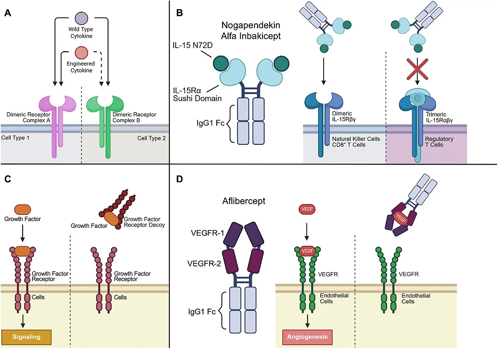
Figure 25: 조작된 사이토카인 및 성장 인자. (A) 수용체 특이성을 조절하도록 조작된 사이토카인의 일반적인 예. 야생형 사이토카인은 수용체 복합체 A와 수용체 복합체 B를 동등하게 활성화하지만, 조작된 사이토카인은 수용체 복합체 B보다 수용체 복합체 A를 우선적으로 활성화한다. 두 수용체 복합체는 서로 다른 세포 유형에 의해 발현되므로, 조작된 사이토카인이 존재할 때 세포 유형 2 대비 세포 유형 1의 활성화를 초래한다. (B) FDA 승인을 받은 조작된 사이토카인 치료제 노가펜데킨 알파 인바키셉트를 나타내는 개략도
. 이 치료제는 초효능제 활성을 나타내도록 조작된 IL-15 변이체(N72D)와 인간 IgG1 Fc에 융합된 IL-15Rα 스시 도메인의 결합으로 구성된다. IL-15Rα 스시 도메인의 존재는 노가펜데킨 알파 인바키셉트가 삼량체 IL-15Rαβγ 복합체를 활성화하는 것을 방지하여 조절 T 세포가 아닌 자연 살해(NK) 세포 및 CD8+ T 세포의 증식을 유도한다. (C) 성장 인자 수용체 미끼 단백질의 일반적인 예. 성장 인자 수용체 미끼가 존재할 때 성장 인자에 결합하여 이를 격리함으로써 수용체 활성화를 방지한다. (D) FDA 승인을 받은 VEGF 수용체 미끼 치료제 애플리버셉트를 나타내는 개략도. 이는 인간 IgG1 Fc 도메인에 융합된 두 개의 VEGF 수용체 도메인으로 구성된다. 애플리버셉트가 존재할 때 순환하는 VEGF가 애플리버셉트에 결합하여 VEGFR의 활성화를 배제하고, 결과적으로 혈관신생을 억제한다. BioRender로 제작됨. Chisholm (2025). https://BioRender.com/vjzxzez.
앞으로 사이토카인 및 성장 인자 생물학에 대한 우리의 이해를 변화시키고, 보다 효과적인 약물을 개발하기 위해 이들 천연 분자를 근본적으로 변형할 수 있는 흥미진진한 새로운 공학적 방향들이 등장하고 있다. 특히 주목받는 분야는 다음과 같다: (i) 시너지 효과를 내는 병용 요법의 개발, (ii) 천연 또는 조작된 사이토카인 및 성장 단백질을 항체, 효소, 수용체 등 다른 단백질과 융합, (iii) 표적화 및 조건부 활성화를 위한 새로운 전략 고안 (Saxton et al. 2023; An et al. 2024a). 또한, 실험적 진화
도구와 계산적 진화 도구의 통합은 표적화, 제조 가능성 및 약물 전달과 관련된 병목 현상을 극복하여 이 분야를 더욱 발전시킬 수 있는 보다 높은 처리량과 효과적인 발굴 워크플로를 가능하게 할 것이다 (Wu et al. 2019; Li et al. 2025b). 특히, 향상된 특이성과 안정성 또는 심지어 새로운 기능을 갖춘 사이토카인 모방체를 생성하기 위한 데노보 설계의 등장은 치료용 단백질의 레퍼토리를 넓힐 것으로 기대된다 (Huang et al. 2016c; Silva et al. 2019; Ren et al. 2022; Yang et al. 2023; Huang et al. 2024). 나아가 유전자 전달 기술의 흥미로운 발전은 사이토카인 및 성장 인자 공학과 혁신적인 유전자 및 세포 치료 접근법의 융합을 가능하게 한다. 특히, mRNA 기반 유전자 치료는 재조합 분자로 투여될 때 일반적으로 짧은 반감기를 갖는 사이토카인 및 성장 인자 치료의 지속적 전달을 가능하게 함으로써 주요 과제들에 대한 유망한 해결책을 제공한다 (Zhen et al. 2025). 세포 공학의 경우, 키메라 항원 수용체(CAR) T 세포가 사이토카인을 분비하도록 변형되어 면역치료 응용을 위한 CAR T 세포의 면역자극 기능과 지속성을 향상시켰다 (Kizerwetter et al. 2023). 전반적으로, 사이토카인 및 성장 인자 공학 연구가 향후 과학 및 의학 환경을 변화시킬 전망은 매우 밝다.
앞으로 사이토카인 및 성장 인자 생물학에 대한 우리의 이해를 변화시키고,
백신 개발을 위한 단백질 공학 (Isabelle F. T. Viana, Roberto D. Lins*)
항체 및 바이오의약품의 개발 외에도 단백질 공학은 현대 백신학의 형태를 재구성하여 전통적인 접근법보다 훨씬 더 높은 안정성, 정밀도 및 면역원성을 갖춘 면역원(immunogen)의 설계를 가능하게 했다. 이제 항원 공학의 발전 덕분에 단백질 형태(conformation), 4차 구조 및 표면 화학을 정밀하게 제어하여 생화학적 거동과 면역학적 성능을 모두 최적화할 수 있다. 조작된 항원은 핵심 병원체의 천연 에피토프 구조를 모방하도록 맞춤 설계되거나, 강력한 중화 항체 반응을 유도하는 표적 에피토프를 선택적으로 노출시키도록 설계될 수
있다.
초기 백신은 19세기 후반과 20세기 초에 확립된 고전적인 경험적 접근 방식에 따라 약독화되거나 불활성화된 전세포 병원체에 의존했다 (Vallery-Radot 1935; Salk 1955; Sabin et al. 1960). 재조합 DNA 기술의 등장은 개별 항원을 클로닝하여 이종 시스템에서 발현할 수 있게 함으로써 중대한 전환점을 마련했다. 1970~80년대에는 효모에서 생산된 재조합 B형 간염 표면 항원의 개발과 함께 주요 이정표를 달성했다. 이 단백질은 자연 감염 중 인간 세포에 의해 분비되는 입자를 모방한 아바이러스 입자(s
ubviral particle)로 자가 조립되었으며 (Valenzuela et al. 1982), 조작된 단일 단백질이 방어 면역 반응을 성공적으로 유도하면서 병원체 유래 물질을 안전하게 대체할 수 있음을 처음으로 입증했다. 이 성과는 현대 재조합 소단위(소단위체) 백신의 개념적 토대를 마련했으며, 특히 항원 변이성이 제한적이고 면역 방어가 효과적인 병원체에 대한 재조합 단백질 기반 백신의 물결을 촉진했다. 그럼에도 불구하고 HIV-1 및 C형 간염 바이러스와 같은 매우 까다로운 병원체는 고전적인 소단위 백신 전략의 한계를 드러냈다. 광범위한 항원 다양성, 비리온 표면의 낮은 외피 당단백질 밀도, 형태적 가소성, 글리칸 차폐(glycan shielding), 균주 특이적 아미노산 변이, 관련 에피토프(취약성 부위)의 일시적 노출 등으로 인해 많은 백신 개발 시도가 유의미한 면역원성을 부여하고 감염을 예방할 수 있는 광범위 중화 항체를 유도하는 데 실패했다. 이러한 어려움은 바이러스 생물학과 면역 인식을 지배하는 결정 인자를 이해하기 위한 집중적인 노력을 촉발했다. 1960년대에 시작되어(Kendrew et al. 1960; Matricardi et al. 1972) 이후 수십 년 동안 가속화된 X선 결정학, 극저온 전자현미경(cryo-EM) 및 면역화학의 발전은 항원의 3차원 조직과 화학적 구조에 대한 원자 수준의 세부 정보를 밝혀냈다. 이러한 세부 정보는 미세한 형태적 특징이 면역 인식을 어떻게 형성하는지 이해하는 데 기여했으며, 백신 반응을 개선하기 위해 항원 구조를 합리적으로 조작할 수 있는 개념적 기반을 마련했다. 중요한 것은 이러한 전환이 구조적 해상도의 기술적 향상 이상을 의미한다는 점이다. 이는 항원을 경험적으로 선택하던 방식에서 벗어나 분자 구조를 기반으로 면역 인식을 의도적으로 공학 설계하는 패러다임의 전환을 알렸다.
강력한 방어 반응을 이끌어내기 위해 백신 항원은 중화 면역의 표적이 되는 특정 구성 요소로 면역 체계를 프라이밍해야 한다. T 세포 매개 면역은 짧은 비구조화된 펩타이드의 제시에 의존하는 반면, B 세포에 의한 중화 항체 생산은 3차원의 구조화된 아미노산 환경(landscape)의 인식을 필요로 한다. 따라서 백신 항원은 클론 증식과 원하는 특이성을 가진 항체 생산을 유도하기 위해 적절한 미감작(naïve) 저친화도 B 세포 수용체와 결합하여 고친화도 항체의 발달을 촉진하는 방식으로 작용해야 한다. 합리적 항원 공학의 초기 시도는
주로 안정성과 제시(presentation)를 개선하는 데 초점을 맞추었으며, 점차 정교한 구조 기반 및 계산 중심 전략으로 발전했다 (Ofek et al. 2010a; McLellan et al. 2011; Azoitei et al. 2012). 목적 지향적인 단백질 조작은 B 세포 활성화 및 항체 친화도 성숙의 요구 조건을 충족하기 위한 다양한 접근법의 개발로 이어졌으며, 여기에는 다음이 포함된다: (i) 천연 항원 형태의 안정화 (Viana et al. 2013; Crank et al. 2019; Tan et al. 2023), (ii) 에피토프 밀도를 향상시키기 위한 도메인 다량체화 (Jagu et al. 2013; Jumadila et al. 2025), (iii) 에피토프 골격의 계산 설계 (Correia et al. 2010; Ofek et al. 2010b), (iv) 면역 인식을 확장하기 위한 모자이크 항원 공학 (Barouch et al. 2010; Han et al. 2024), (v) 관련 에피토프를 보존하면서 박테리아 독소를 해독(detoxification)하는 기술 (Rappuoli et al. 1995; Esmaeilnejad-Ahranjani et al. 2025) (Fig. 26). 이러한 노력은 융합 전 안정화된 RSV F 단백질과 같은 획기적인 성과로 정점에 달했으며, 이는 합리적 설계가 백신 개발의 오랜 난제를 극복할 수 있음을 입증했다 (Huang et al. 2025). 2000년대에는 계산 단백질 설계의 부상과 함께 변혁적 도약이 이어졌으며, 최근에는 여러 AI 지원 설계 방법에 의해 더욱 가속화되었다. Rosetta(Leaver-Fay et al. 2011)와 같은 플랫폼과 RFdiffusion(Watson et al. 2023)과 같은 생성형 확산 모델은 단백질 에너제틱스를 모델링하고 안정화 돌연변이를 예측하며 놀라운 정밀도로 중화 에피토프를 제시할 수 있는 합성 골격을 생성하는 것을 가능하게 했다. 이러한 맥락에서 AI는 주로 초기 구조 기반 접근법에서 나타난 설계 능력을 가속화하고 확장했지만, 생성형 모델링은 자연 발생 템플릿에 구애받지 않고 단백질을 데노보(de novo)로 생성할 수 있게 함으로써 더욱 근본적인 전환을 의미할 수 있다. 그럼에도 불구하고 현대의 AI 지원 전략은 여전히 지향 진화, 디스플레이 기술, 구조 기반 최적화를 포함한 고전적인 단백질 공학 방법론과 크게 시너지를 내며 작동하고 있으며, 이러한 방법론은 실험적 검증, 기능적 개선, 생물학적으로 관련된 표현형 선별에 여전히 필수적이다. 그 결과 계산적으로 설계된 항원은 소단위체, 핵산 코딩 단백질 또는 단백질 나노입자로 개발되었다. 이러한 조작된 백신들은 현재 시험관 내(in vitro) 특성 분석(Rehmani et al. 2025), 동물 모델 검증(Weidenbacher et al. 2023; Miranda et al. 2024; Teixeira et al. 2024), 인간 임상 시험(Walls et al. 2020, 2021; Boyoglu-Barnum et al. 2021; Song et al. 2022)을 거치고 있다. 페리틴 및 모자이크 조립체와 같은 나노입자 플랫폼은 임상 시험으로 진입하여 프로그래밍 가능한 항원 기하 구조의 강력함을 입증하고 있다 (Song et al. 2021; Cohen et al. 2024).
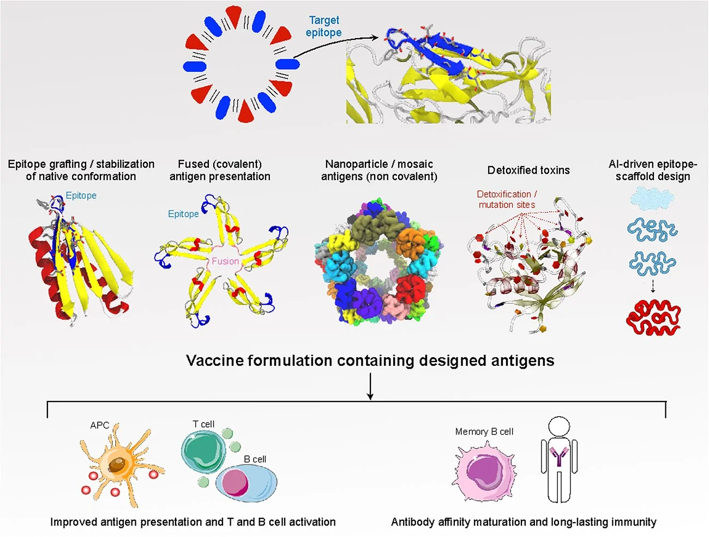
Figure 26: 단백질 공학 기반 백신을 위한 항원 설계 전략. 에피토프 이식(epitope grafting)은 이전에 확인된 에피토프를 단백질 골격에 삽입하고, 천연/관련 형태에서와 같이 에피토프를 전달하고 그 위상을 유지하도록 후속 변형하는 것으로 구성된다. 융합 항원은 에피토프 밀도를 높이기 위해 공유 결합으로 연결된 소단위체로 구성된다. 나노입자 항원은 입자로 조립될 수 있는 여러 항원 단위로 구성된다. 독소를 “해독”하는 과정은 관심 있는 에피토프를 유지하면서 독성을 감소시키는 방향으로 핵심 잔기를 대체하는 것을
포함한다. 이제 항원은 구조 기반 또는 언어 모델 지침에 따라 AI 기반 생성 모델에 의해 템플릿 없이도 설계될 수 있다.
단백질 공학 기반 백신은 데이터 중심의 주류 학문 분야로 성숙했다. 고해상도 구조생물학, 특히 cryo-EM은 이제 일상적으로 항원 설계를 안내하며, AI 기반 생성 모델은 완전히 새로운 면역원의 생성을 가능하게 한다. AI 지원 설계, 자동화 및 초고속 스크리닝의 급속한 발전에도 불구하고, 고도로 복잡한 기능적 표현형을 달성하는 것은 여전히 상당히 더 어려운 과제이다. 이는 기초가 되는 실험 데이터의 품질과 집단 면역 반응의 본질적인 복잡성에 달려 있다. 정확한 구조 결정, 신중하게 큐레이션된 서열 데이터셋, 표준화된 면역학적 분
석, 잘 주석 처리된 기능 측정 데이터는 예측 모델을 훈련하고 조작된 항원을 검증하는 데 여전히 필수적이다. 생물학적 관점에서 볼 때 항원을 안정화할 수 있는 능력이 광범위 중화, 지속성 또는 정밀하게 표적화된 면역 반응을 재현성 있게 유도하는 능력으로 반드시 직결되는 것은 아니다. 이는 항원 구조, 에피토프 접근성, 면역 레퍼토리 결합, 친화도 성숙 경로 사이의 복잡하고 부분적으로만 이해된 상호작용에 달려 있다. 구조적 안정성과 최적의 생물학적 기능 사이의 이러한 긴장 관계는 단백질 공학 분야 전반에서 반복되는 주제로 부상했으며, 차세대 백신 설계의 주요 개념적 병목 현상 중 하나로 남아 있다. 추가적인 과제로는 변이성이 매우 높은 병원체에 대해 광범위한 방어 면역을 유도하는 방법, T 세포 반응 예측, 조작된 항원과 최적의 면역증강제(adjuvant) 및 전달 시스템의 결합, 기능적 면역 복잡성을 계산 설계 파이프라인에 통합하는 방법, 조작된 항원을 확장 가능하고 접근하기 쉬운 백신 플랫폼으로 전환하는 방법 등이 있다.
이러한 난제에도 불구하고, AI 기반 합성생물학 파이프라인, 초고속 스크리닝 및 합리적 설계 프레임워크에 힘입어 직접적인 항원으로 사용되든 핵산 서열을 통해 암호화되든 조작된 단백질이 차세대 백신 개발의 최전선에 설 준비가 되어 있다는 점에서 이 분야의 궤적은 명확하다. 단백질 발현 시스템 및 열안정성의 최근 개선은 글로벌 제조 가능성과 유통을 지원한다. 따라서 이러한 발전은 단백질 공학을 현재 및 새로운 감염 위협에 대해 가장 효과적인 대응책을 제공하는 핵심 기술로 자리매김하게 한다.
검출, 이미징 및 진단 (Detection, imaging, and diagnostics)
## 검출, 이미징 및 진단 (Detection, imaging, and
형광 단백질 (Sohum Mehta, Jin Zhang*)
“태양광 아래에서는 약간 녹색빛을 띠지만 텅스텐 조명 아래에서는 노란빛만 보이고, 미네랄라이트(Mineralite)의 자외선 하에서는 매우 밝은 녹색 형광을 나타내는 단백질 또한 [에쿠오레아(Aequorea)] 압착액으로부터 분리되었다” (Shimomura et al. 1962). 에쿠오린(Aequorin) 정제 과정의 각주에 불과했던 이 무심한 관찰을 통해, 시모무라 오사무(Osamu Shimomura)는 자신도 모르는 사이에 혁명의 불씨를 지폈다. 30년 후, 더글러스 프래셔(Douglas Prasher)가 제작한 클론(Pras
her et al. 1992)을 바탕으로 마틴 챌피(Martin Chalfie)는 평화해파리(Aequorea victoria) 유래 녹색 형광 단백질(GFP)이 살아있는 세포 및 동물에서 본질적인 형광을 발하는 유전적으로 암호화된 프로브로 기능함을 입증하였으며(Chalfie et al. 1994), 로저 시엔(Roger Tsien)은 생체 세포 이미징을 위한 성능과 역량이 개선된 GFP 변이체들을 공학적으로 설계하였다(Heim et al. 1994; Heim et al. 1995; Heim and Tsien 1996) (그림 27). 수십 년 묵은 호기심에서 출발한 발견은 생물학 연구에 필수불가결한 도구 모음으로 빠르게 발전하였고, 시모무라, 챌피, 시엔은 그 공로로 2008년 노벨 화학상을 수상하였다.
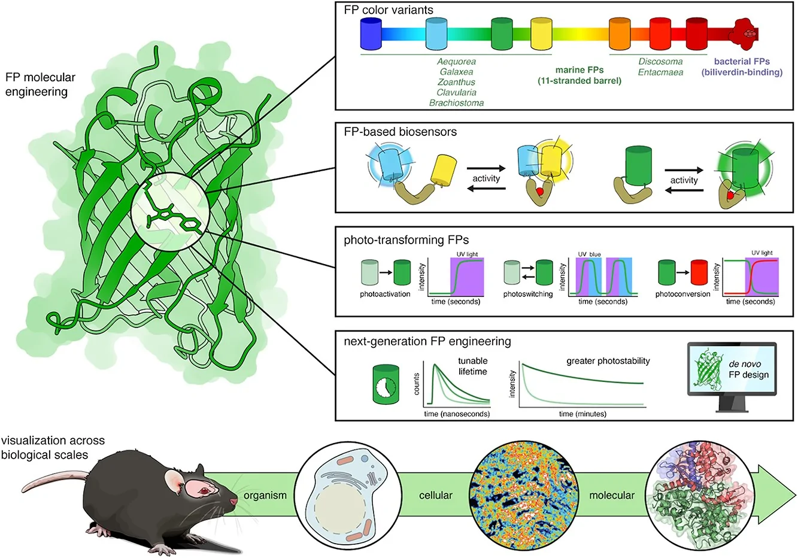
그림 27: 생물학적 과정 시각화를 위한 형광 단백질 기술. 좌측: 녹색 형광 단백질의 발견은 수십 년간의 분자공학적 시도를 촉발하였으며, 이는 혁신적인 형광 단백질(FP) 기반 도구들을 지속적으로 탄생시키고 있다. 우측: 다양한 해양 생물종에서 유래한 무지개색의 FP 색상 변이체들(상단)은 청색에서 원적외선 영역에 이르는 가시광선 스펙트럼 전체를 아우르며, 빌리베르딘(biliverdin) 결합 세균 단백질에서 유래한 근적외선 FP도 포함한다. FRET 기반(좌측) 또는 단일 FP 기반(우측) 설계를 활용하는 수많은 FP 기
반 바이오센서(중상단)는 생화학적 활성을 안정적이고 동적으로 시각화할 수 있게 한다. 특정 파장의 빛을 조사할 때 비가역적 광활성화(좌측), 가역적 광전환(중앙), 또는 서로 다른 색상 간의 광전환(우측; 예: 녹색에서 적색으로)을 겪는 광변환 FP(중하단)는 강력하고 정교한 이미징 전략을 가능하게 한다. 한편, 조절 가능한 형광 수명, 향상된 광안정성을 달성하고 완전히 새로운 FP의 데노보(de novo) 설계까지 시도하는 차세대 FP 공학(하단) 연구는 그 한계를 계속 넓혀가고 있다. 하단: 이러한 기술들을 통해 연구자들은 개체 전체 수준에서부터 분자 수준에 이르기까지 다양한 규모에 걸쳐 생물학적 과정을 시각화할 수 있다.
생명 현상의 시각화에 새로운 지평을 열었던 로저 시엔의 선구적인 분자공학적 접근은 형광 단백질(FP) 기술의 확고한 나침반으로 남아 있다. 초기 청색, 시안색, 황색 GFP 변이체(Heim et al. 1994; Heim and Tsien 1996)의 개발은 머지않아 세포 내 다양한 분자 이벤트를 모니터링하기 위한 푀르스터 공명 에너지 전달(FRET) 기반 바이오센서(Miyawaki et al. 1997)의 탄생으로 이어졌다(Gest et al. 2024). 이후 산호 유래 및 비표준 세균 FP의 등장은 스펙트럼의 범위를 적색 및
근적외선 파장대까지 확장시켰으며(Rodriguez et al. 2017), 이를 통해 고도화된 다중 라벨링(multiplexed labeling)과 생체 내 이미징을 위한 심부 조직 투과가 가능해졌다. 원형 치환(circularly permuted)된 GFP 내로 수용체 도메인을 성공적으로 삽입한 연구(Baird et al. 1999)는 생체 내 바이오센싱을 구현할 수 있는 일련의 단일 형광단 바이오센서 계통을 낳았다(Gest et al. 2024). 또한 FP 고유의 광물리적 특성을 활용하여 비가역적 또는 가역적 온/오프 스위칭을 수행하거나 색상이 변하는 변이체들이 개발되었으며, 이를 통해 생체 분자의 정밀한 추적, 다중화 및 정량화 향상, 유전적으로 암호화된 바이오센서의 기능적 초고해상도 이미징이 가능해졌다(Gest et al. 2024). FP는 유전자 및 단백질 발현의 수동적 표지자에서 다양한 스케일에 걸쳐 역동적인 생물학적 과정을 시각화하는 지능형 표지로 착실히 발전해 왔다.
어느덧 네 번째 10년에 접어든 지금, FP의 미래에는 무엇이 기다리고 있는가? 형광 수명에 초점을 맞춘 단백질 공학은 세포 내 분자 현상을 더욱 견고하게 정량화할 수 있는 개선된 FP(Goedhart et al. 2012; Bindels et al. 2017)뿐 아니라 새로운 “시간 분해(time-resolved)” FP를 이용한 시간-스펙트럼 다중화를 가능케 했다(Tan et al. 2025). 최근의 연구들은 장기 이미징이나 초고해상도 이미징 중의 장시간 광조사를 견뎌낼 수 있도록 광안정성이 획기적으로 향상된 FP(Hirano
et al. 2022; Ando et al. 2024)와 혹독한 세포 내 환경이나 가혹한 화학적 처리 조건에서도 호환되는 화학적 안정성이 뛰어난 FP(Katayama et al. 2020; Campbell et al. 2022; Zhang et al. 2024a)를 선보였다. 오랫동안 FP 공학의 핵심이었던 구조적·분자적 통찰은 이제 양자 수율(Prangsma et al. 2020) 및 광안정성(Ahmed et al. 2025)을 포함한 보다 폭넓은 광물리적 특성의 분자 결정 요인을 규명하는 수준에 이르고 있다. 한편, 데노보(de novo) 설계 연구는 완전히 새로운 유형의 FP 개발을 예고하고 있다(Liu et al. 2026). 따라서 우리는 FP 기술의 대단히 밝은 미래를 기대할 수 있다.
어느덧 네 번째 10년에 접어든 지금, FP의 미래에는 무엇이 기다리고
루시퍼레이스 (Rachna Sharma, Hui-wang Ai*)
생물발광 현상은 고대 문명으로 거슬러 올라가는 기록된 관찰 사례에서 알 수 있듯이 수천 년 동안 인류를 매료시켜 왔다. 그러나 루시퍼레이스가 생물학 및 생명의학 연구에서 강력한 도구로 부상한 것은 1980년대부터 시작된 여러 루시퍼레이스 유전자의 클로닝 이후였다(그림 28) (Yeh and Ai 2019). 이 효소들은 산소 존재 하에 루시페린이라 불리는 저분자 기질의 산화를 촉매하여 외부 조명 없이도 가시광선을 방출한다(Yeh and Ai 2019). 이러한 고유한 특성은 형광 표지에 비해 높은 신호 대 잡음비와 최소화된 배경 신
호 및 광독성을 지닌 이미징을 가능하게 하여 뚜렷한 이점을 제공한다. 지난 20년 동안 합리적 돌연변이 유발, 지향 진화, 합성 루시페린 개발, 융합 단백질 설계를 포함한 생체분자공학의 발전은 밝기, 분광학적 다양성 및 기능적 다재다능성을 한층 향상시켰다. 그 결과, 루시퍼레이스 툴킷은 현재 체외 분석 및 약물 스크리닝에서부터 세포 내 바이오센싱 및 동물 개체 이미징에 이르는 광범위한 응용 분야를 지원하고 있다.
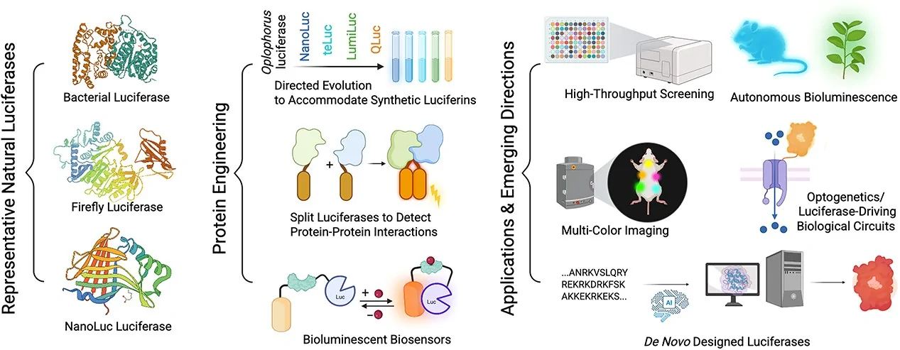
그림 28: 루시퍼레이스 공학 및 생물발광 기술 개요. 좌측: 변이체 개발의 기반이 된 여러 천연 루시퍼레이스의 대표 구조. 구조는 단백질 데이터 뱅크(PDB) 등록 번호 1BRL (Fisher et al. 1995), 1LCI (Conti et al. 1996), 5IBO (Lovell et al. 2016)를 사용하여 렌더링되었다. 중앙: 효소 성능을 개선하고 기능을 확장하기 위한 대표적인 루시퍼레이스 공학 연구 방향. 우측: 엔지니어링된 루시퍼레이스의 광범위한 파급력을 보여주는 응용 분야 및 새로운 연구 방향. BioR
ender로 제작됨. Ai (2025) https://BioRender.com/zovlmop.
널리 사용되는 루시퍼레이스로 나노룩(NanoLuc)이 있다. 이는 심해 새우인 오플로포루스 그라실리로스트리스(Oplophorus gracilirostris)에서 유래한 작은(19 kDa) 효소로, 합성 퓨리마진(furimazine) 기질을 활용하며 기존 반딧불이 루시퍼레이스보다 약 100배 더 밝다(Hall et al. 2012). 단백질-단백질 상호작용 검출을 위해 NanoBiT(LgBiT/SmBiT)와 같은 분할 나노룩(split NanoLuc) 시스템이 개발되었다(Dixon et al. 2016). 청색 광자를 방출하는 나
노룩의 생체 내 이미징 활용도를 넓히기 위해, 확장된 π-공액계를 가진 루시페린 유사체를 수용하도록 효소를 개량함으로써 조직 투과율을 높이기 위해 방출 스펙트럼을 적색 쪽으로 이동시켰다(Yeh et al. 2017; Xiong et al. 2022). 또한 생물발광 공명 에너지 전달(BRET)을 통해 장파장으로 전이된 방출을 달성하고자 나노룩 변이체를 장파장 방출 FP와 융합하기도 했다(Chu et al. 2016; Yeh et al. 2017; Tian et al. 2022a). 심부 조직 이미징을 위한 루시퍼레이스 공학의 또 다른 대표적 사례는 아카룩(AkaLuc)이다. 이는 반딧불이 루시퍼레이스 변이체로 합성 기질인 아카루미네(AkaLumine)와 함께 최적화되어 밝기와 적색 편이된 근적외선 방출(~677 nm)을 향상시킴으로써 고감도 생체 내 이미징을 가능하게 했다(Iwano et al. 2018). 나아가 금속 이온, 신호 분자, 효소 활성 및 다양한 기타 표적을 검출하는 생물발광 바이오센서 제작에 루시퍼레이스가 점점 더 많이 활용되고 있다(Suzuki et al. 2016; Arts et al. 2017; Oh et al. 2019; Su et al. 2019; Tian et al. 2022a; Halbers et al. 2024; Zhao et al. 2024). 이러한 혁신은 생물학적 과정의 동적이고 비침습적인 리포터로서 루시퍼레이스의 활용 가치를 크게 확장시켰다.
앞으로 루시퍼레이스 공학은 새로운 영역으로 나아갈 것이다. 계산 단백질 설계와 지향 진화의 융합은 맞춤형 구조와 기질 특이성을 지닌 데노보(de novo) 루시퍼레이스의 생성을 가능하게 하고 있다(Yeh et al. 2023). 뚜렷이 구별되는 스펙트럼 채널을 통해 다중 생물발광 이미징을 지원하기 위한 직교형(orthogonal) 루시퍼레이스-루시페린 쌍을 도출하는 데도 많은 노력이 기울여지고 있다(Jones et al. 2017; Chen et al. 2025c). 한편, 루시퍼레이스는 광유전학 시스템에 통합되어 인공 생물학적 회
로를 구동하는 광원 역할을 담당하고 있다(Berglund et al. 2016; Adir et al. 2022). 모든 유전적 구성요소가 규명됨에 따라, 박테리아 및 진균 유래 루시퍼레이스는 외인성 기질을 필요로 하지 않는 완전 자율 생물발광 시스템으로 재설계되고 있다(Close et al. 2010; Kotlobay et al. 2018; Kusuma et al. 2024; Shakhova et al. 2024; Kiszka et al. 2025). 이러한 발전은 진정한 비침습적 이미징, 진단 및 합성생물학 응용 분야를 위한 차세대 다기능 루시퍼레이스 플랫폼의 도래를 이끌고 있다.
앞으로 루시퍼레이스 공학은 새로운 영역으로 나아갈 것이다. 계산 단백질
기체 소포 단백질 (Zhiyang Jin, Mikhail G. Shapiro*)
1895년 독일의 미생물학자들은 특정 수생 세균이 공기로 채워진 세포 내 구획을 형성함으로써 물에 뜬다는 사실을 발견했다. 이후 한 세기 동안 소수의 호기심 많은 생화학자들은 기체 소포(gas vesicles, GVs)라 불리는 특이한 단백질 군에 의해 공기로 채워진 이러한 소체가 어떻게 생성되는지 연구했다(Walsby 1994). 그러던 중 2014년, 거의 알려지지 않았던 이 단백질들은 “초음파를 위한 GFP”(Shapiro et al. 2014)로서 새로운 생명을 얻으며 심부 조직에서의 생체 분자 및 세포 이미징을 가능하게 했
다. GV는 광합성 미생물이 부력을 얻도록 진화한 약 100 nm 크기의 공기로 채워진 자기조립 단백질 나노구조체이다(Walsby 1994) (그림 29A). GV의 2 nm 두께 단백질 껍질은 물을 차단하지만 주변 매질의 기체는 내부로 분배될 수 있도록 허용한다(Walsby 1994; Dutka et al. 2023; Huber et al. 2023) (그림 29B). 연구진은 GV가 세포나 조직보다 밀도가 낮고 압축률이 높아 강력한 초음파 조영 효과를 낸다는 사실을 밝혀냈다(Shapiro et al. 2014). 이러한 기초적인 발견이 있은 지 10년이 지난 지금, GV는 주사용 조영제(Shapiro et al. 2014; Ling et al. 2024; Shen et al. 2024), 유전적으로 암호화된 리포터 유전자(Bourdeau et al. 2018; Farhadi et al. 2019; Hurt et al. 2023; Shivaei et al. 2024, 2025; Buss et al. 2025), 동적 분자 바이오센서(Lakshmanan et al. 2020; Jin et al. 2023; Terwiel et al. 2025), 기계적 구동체(actuator)(Wu et al. 2023), 초음파용 폭발적 캐비테이션 제제(Bar-Zion et al. 2021)뿐 아니라 광학 및 자기공명 분야의 일부 응용으로도 널리 활용되고 있다(그림 29C–J).
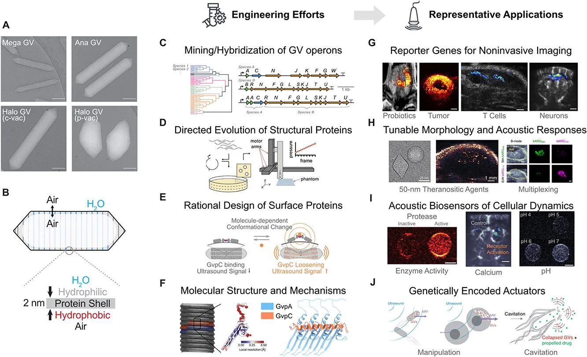
그림 29: 기체 소포(GV) 단백질 공학 및 대표적 응용. (A) 서로 다른 유기체 유래 GV의 대표적인 저온전자현미경(cryo-EM) 이미지. Dutka et al. (2021)에서 허가를 받아 각색됨. (B) 껍질의 물리화학적 특성으로 인해 껍질을 통한 기체 확산은 허용하면서 내부의 물 응축은 차단하는 능력을 보여주는 GV 모식도. (C) 서로 다른 유기체로부터 GV 유전자 클러스터의 유전체 마이닝 및 하이브리드화를 보여주는 모식도. Hurt et al. (2023)에서 허가를 받아 각색됨. (D) GV의 지향 진화 및
초음파 스크리닝 파이프라인 모식도. Nyström et al. (2025)에서 허가를 받아 각색됨. (E) GvpC 매개 초음파 신호 변화 모식도. (F) GV 껍질의 분자 구조와 주요 구조 단백질 모식도. Dutka et al. (2023) 및 Huber et al. (2023)에서 허가를 받아 각색됨. (G) 체내에서 GV를 리포터 유전자로 발현하는 다양한 세포 유형의 대표적 초음파 이미지. Hurt et al. (2023), Shivaei et al. (2024, 2025), Buss et al. (2025)에서 허가를 받아 각색됨. (H) 좌측: 50 nm GV의 대표적인 전자현미경 사진. 중앙: 전신 투여된 50 nm GV가 종양에 축적된 대표적 초음파 이미지. 우측: 다중 이미징을 위해 서로 다른 음향 특성을 가진 GV를 발현하는 치료용 세균의 대표 초음파 이미지. Ling et al. (2024) 및 Nyström et al. (2025)에서 허가를 받아 각색됨. (I) 효소 활성(좌측), 칼슘 동역학(중앙), pH(우측)를 감지하는 음향 바이오센서의 대표 초음파 이미지. Lakshmanan et al. (2020), Jin et al. (2023), Terwiel et al. (2025)에서 허가를 받아 각색됨. (J) 조작(좌측) 및 캐비테이션 증강 치료(우측)를 위한 유전적으로 암호화된 기계적 구동체로서의 GV 모식도. Bar-Zion et al. (2021) 및 Wu et al. (2023)에서 허가를 받아 각색됨. 축척 바(scale bar)는 (A)의 경우 100 nm, (H, 맨 좌측 패널)의 경우 25 nm, (G, I 및 H의 우측 두 패널)의 경우 1 mm이다.
GV의 조립에는 8개 이상의 유전자가 관여하므로(Hurt et al. 2023), 대부분의 단백질보다 발현 및 엔지니어링 난이도가 높다. 그럼에도 불구하고 오페론 전체 규모에서 GV 유전자 클러스터의 유전체 마이닝과 조밀한 다중 유전자 발현 카세트의 구축을 통해 다양한 세포 유형에서 높은 발현량과 초음파 조영 효과를 보이는 GV 구조체를 개발할 수 있었다(Hurt et al. 2023) (그림 29C). 이는 프로바이오틱스(Hurt et al. 2023; Buss et al. 2025), 종양(Hurt et al. 2023), T세
포(Shivaei et al. 2024), 뉴런(Shivaei et al. 2025)에서 생체 내 유전자 발현을 비침습적으로 추적하는 것을 가능하게 했다(그림 29G). 한편, GV의 핵심 구조 단백질 및 조립 인자의 지향 진화(Hurt et al. 2024; Nyström et al. 2025)와 서로 다른 유전자 클러스터 구성요소 간의 하이브리드화(Shen et al. 2024)를 통해(그림 29C, D), 놀라운 형태(예: 주사용 테라노스틱 제제로서의 50 nm GV)를 지니거나(Ling et al. 2024; Shen et al. 2024) 조절 가능한 음향 특성(예: 다중화를 위한 압력 반응성)(Hurt et al. 2024; Nyström et al. 2025)을 갖는 구조체들이 제작되었다(그림 29H). 나아가 GV 껍질을 기계적으로 보강하는 표면 단백질인 GvpC는 다양한 생체 분자(예: 효소(Lakshmanan et al. 2020), 칼슘 이온(Jin et al. 2023), pH(Terwiel et al. 2025))에 반응하여 GV의 초음파 조영도를 조절하도록 합리적으로 설계되었으며(그림 29E), 이를 통해 동적인 세포 활성의 초음파 판독을 가능하게 한 최초의 음향 바이오센서가 개발되었다(그림 29I). 이러한 공학적 성과의 대부분이 생체 내 개념 검증 적용을 통해 입증됨에 따라, GV는 세포 활성의 비침습적 이미징을 위한 강력한 도구이자 앞으로 등장할 수많은 유망 기술들을 위한 다재다능한 공학 플랫폼으로 자리매김하고 있다.
물론 많은 과제가 남아 있다. 예를 들어, GV의 광범위한 응용을 위해서는 거대한 유전자 클러스터의 최소화와 GV 발현으로 인한 잠재적 부작용(예: 세포 부담 및 면역원성)의 감소가 필요하다. 이 두 과제 모두 클러스터 내 많은 또는 모든 단백질 성분의 엔지니어링을 필요로 할 수 있으나, 각 샤페론의 기능과 조립 메커니즘에 대한 불완전한 지식으로 인해 제약을 받고 있다. 다행스럽게도 GV 조립 과정에서의 단백질-단백질 상호작용 및 생화학적 메커니즘을 규명하려는 연구들이 진행되고 있다(Jost and Pfeifer 2022; Ibur
g et al. 2024). 최근 발표된 GV의 저온전자현미경(cryo-EM) 구조(Dutka et al. 2023; Huber et al. 2023)와(그림 29F) 급속히 발전하는 계산 단백질 설계 도구들과 더불어, GV의 성능을 향상시키고 새로운 바이오센서를 만들기 위한 합리적이고 구조 기반의 설계를 구현할 퍼즐 조각들이 맞춰지고 있다. 단백질 공학과 병행하여 유전자 회로 및 전달 방법 또한 상호보완적 해결책으로서 지속적으로 개선되고 있다. 우리는 GV와 그 파생 기술들이 비침습적 생체분자 이미징을 형광 이미징만큼 쉽고 강력하게 만들어 줄 미래를 기대하고 있다.
물론 많은 과제가 남아 있다. 예를 들어, GV의 광범위한 응용을 위해서
체외 진단 (Chenggang Xi, Andy Hsien-Wei Yeh*)
단백질 기반 바이오센서는 인식 도메인에서 분석물질(analyte)에 의해 유도된 구조 변화를 리포터 모듈과 연결하여 특정 표적 결합 이벤트를 증폭되고 측정 가능한 신호로 변환하는 유망한 체외 진단(IVD) 도구이다(그림 30). 기존의 분석법(예: ELISA)과 비교하여, 단백질 기반 바이오센서는 최소한의 시료 전처리와 신속한 턴어라운드 타임으로 표적 분석물질의 원위치(in situ), 무세척(wash-free), 혼합 즉시 판독(mix-and-read) 및 정량적 검출을 가능하게 한다. 신호 판독의 경우, 자가형광 배경 신호나 헤
모글로빈 흡광이 지배적인 불투명한 생물학적 기질(예: 혈액 또는 혈청)에서 루시퍼레이스 촉매 발광은 형광보다 몇 자릿수 더 높은 감도를 달성할 수 있다. 게다가 들뜸 광원이 필요 없는 발광은 간단한 장치(예: 카메라 또는 스마트폰)로 캡처할 수 있어 현장 진단(POC)에 유리하다.
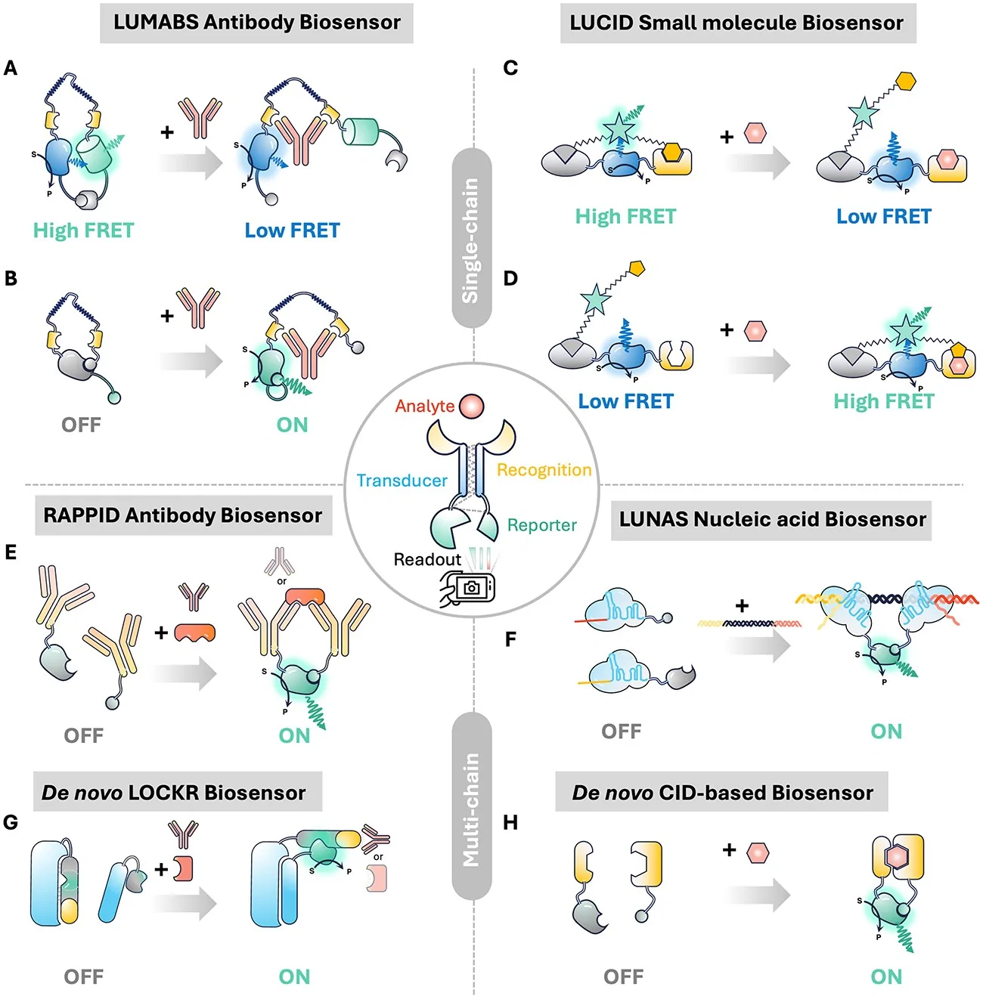
그림 30: 단백질 기반 바이오센서의 모듈식 설계. (A, B) 항체 검출을 위한 단일 사슬 LUMABS 바이오센서의 모식도. 이 구조체들은 인식 모듈로 두 개의 에피토프 도메인을 포함하며, 구조 전환을 모니터링하기 위해 (A) FRET 쌍 또는 (B) 분할 루시퍼레이스 리포터를 활용한다. 항체가 결합하면 닫힌 구조가 열려 에너지 전달이나 루시퍼레이스 상보 결합이 방해를 받으며, 그 결과 색상 변화 또는 발광 활성화가 유도된다. (C, D) 저분자 검출을 위한 반합성 LUCID 바이오센서 모식도. 리간드 수용체와 루시퍼레이스
리포터 도메인은 형광단이 연결된 리간드 유사체를 통해 공유결합으로 연결된다. 표적 결합은 연결된 리간드를 (C) 치환하거나 (D) 모집함으로써 형광단의 근접성을 조절하여 발광 신호의 비율적(ratiometric) 색상 변화를 유도한다. (E) 항체 또는 항원 검출을 위한 다중 사슬 RAPPID 바이오센서 모식도. 상용 항체가 분할 루시퍼레이스 단편에 광접합되어 있으며, 항원 또는 항약물 항체와 결합할 때 효소 활성이 재구성된다. (F) 핵산 검출을 위한 LUNAS 플랫폼 모식도. 분할 루시퍼레이스 단편이 dCas9에 융합되어 있으며 프로그램 가능한 gRNA에 의해 표적으로 유도된다. 두 개의 gRNA-dCas9 복합체가 표적 DNA의 인접한 부위에 결합하면 루시퍼레이스 단편들이 동일 위치에 모여(colocalize) 표적 특이적 발광을 가능하게 한다. (G) 단백질 바이오마커 검출을 위한 LOCKR 기반 바이오센서 모식도. 인식 도메인이 래치(latch) 도메인에 융합되어 있으며, 이는 데노보(de novo) 설계된 케이지(Cage) 단백질에 의해 닫힌 상태로 안정화된다. 표적 결합은 키(Key)-케이지 결합을 허용하고 분할 루시퍼레이스의 재구성을 촉진하는 열역학적 추진력을 제공한다. (H) 저분자 검출을 위한 데노보 설계 화학 유도 이량체화(CID) 바이오센서 모식도. 리간드(예: 코르티솔) 결합은 분할 데노보 루시퍼레이스 단편에 융합된 설계 이량체의 이종이량체화를 유도하여 발광 활성화를 촉발한다.
단백질 공학의 최근 발전은 항체, 대사체, 약물, 항원, 핵산 및 기타 단백질 바이오마커와 같은 임상적으로 유의미한 표적을 검출할 수 있는 바이오센서의 모듈식 조립을 가능하게 했다. 여기에서는 다음과 같은 핵심 요소를 고려하여 고효율 발광 바이오센서 개발을 위한 대표적인 설계 원리를 강조한다: (i) 생리적 또는 병리적 분석물질 농도에 부합하는 친화도에서 충분한 표적 유도 구조 변화 또는 열역학적 추진력을 겪는 인식 도메인; (ii) 구조적 변화를 정량 가능한 발광 출력으로 효율적으로 변환하는 스캐폴드; 및 (iii) 흔히 분할 효
소 또는 FRET 쌍으로 구현되는 프로그램 가능한 리포터 모듈(‘형광 단백질 (Sohum Mehta, Jin Zhang*)’ 절 참조).
Merkx 연구실은 에피토프 인식 부위를 결합하고 비율적 FRET 변화(Arts et al. 2016) (그림 30A) 또는 분할 루시퍼레이스를 통한 세기 측정 신호(Gräwe and Merkx 2022) (그림 30B)를 제공하는 단일 사슬 스위치를 사용하여 피코몰 수준의 검출 한계로 치료용 항체를 검출할 수 있는 LUMABS(생물발광 항체 센서) 플랫폼을 개발하였으며, 이는 용액 내 또는 종이 위에서 카메라로 포착할 수 있다(Tenda et al. 2018). 저분자 검출을 위해 Johnsson 연구실은 수용체-루시퍼레이스 융합
체가 형광단 결합 리간드 유사체로 공유결합 표지되는 반합성 LUCID(루시퍼레이스 기반 약물 지시체) 플랫폼을 개척했다(그림 30C, D). 대사체(Yu et al. 2018) 또는 약물(Griss et al. 2014)의 결합은 리간드 치환 또는 유인을 통해 형광단의 근접성을 조절하여 비율적 색상 변화를 생성한다. Merkx 연구실은 또한 분할 루시퍼레이스로 표지된 항체가 항원 결합 시 효소 활성을 재구성하는 RAPPID(비율적 플러그 앤 플레이 면역진단)(Ni et al. 2021) (그림 30E)와 프로그램 가능한 DNA 검출을 위해 dCas9-분할 루시퍼레이스 융합체를 사용하는 LUNAS(발광 핵산 센서)를 보고했다(van der Veer et al. 2023) (그림 30F). 이러한 접근법들은 실험적 방법(예: 링커 최적화 및 도메인 교환)을 채택하여 현장 진단(POC) 환경에서 단백질, 저분자 및 핵산을 검출하기 위한 발광 센서의 다채로운 개발 가능성을 보여주었다.
최근 몇 년 동안 데노보(de novo) 단백질 설계는 천연 단백질에 의존하지 않고 맞춤형 구조와 기능을 갖춘 바이오센서의 기능을 확장해 왔다. 예를 들어, Baker 연구실은 데노보 설계된 케이지-키(Cage-Key) 시스템을 통해 표적 결합을 분할 루시퍼레이스 재구성과 결합시키는 모듈식 플랫폼인 LOCKR(래칭 직교형 케이지-키 단백질) 스위치를 개발했다(그림 30G). 결합 파트너를 교체함으로써 LOCKR 바이오센서는 BCL-2, IgG, HER2, 보툴리눔 신경독소, 심장 트로포닌 I, B형 간염 항체 및 SARS-CoV-2
스파이크 단백질을 검출하도록 구성되었다(Quijano-Rubio et al. 2021). LOCKR 바이오센서의 가역성은 무세척 균질 분석 방식으로 SARS-CoV-2의 다양한 우려 변이체에 대한 중화항체를 정량화하는 데 활용되었다(Zhang et al. 2022). 리간드 검출을 위해 Yeh 연구실은 구조 예측 파이프라인을 사용하여 분할 데노보 루시퍼레이스에 결합되었을 때(그림 30H) 300배 이상의 발광 반응, 피코몰 감도 및 표준 카메라를 통한 신속한 이미징을 지원하는 완전 계산 설계 코르티솔 바이오센서를 제공하는 데노보 코르티솔 유도 이량체화 모듈을 설계했다(Chen et al. 2025b). 천연 단백질과 비교하여 데노보 바이오센서 및 루시퍼레이스는 탁월한 안정성, 조절 가능성, 지속형(glow-type) 방출 동역학(Xi and Yeh 2026), 그리고 제조 용이성을 제공하며, 이는 재현 가능하고 현장 적용이 가능한 진단에 필수적인 특성이다. 향후 AI 기반 단백질 설계는 계산을 통해 바이오센서 구조를 점점 더 예측 가능하게 만들어, 실험적 최적화에 앞서 설계를 농축하고 우선순위를 정하는 데 도움을 주기 시작했다. 계산 단백질 설계와 AI 기반 생성 모델이 지속적으로 발전함에 따라, 제1원리(first principles)로부터 구축된 맞춤형 바이오센서가 체외 진단을 위한 프로그래밍 가능 단백질 기반 바이오센서의 다음 혁신을 이끌 것이다.
최근 몇 년 동안 데노보(de novo) 단백질 설계는 천연 단백질에 의
공간 단백체학을 위한 조작된 단백질 (Amy M. Weeks*)
세포는 단백질을 거대분자 복합체 및 세포 내 소기관 구획에 위치시킴으로써 생화학적 과정을 조직화한다. 역사적으로 세포 내 거대분자의 상호작용 지형은 강한 친화도의 상호작용을 필요로 하는 면역침강법(co-immunoprecipitation)이나 위양성이 발생하기 쉬운 효모 이종교잡법(yeast two-hybrid)과 같은 기술로 평가되었다. 일시적인 상호작용과 공간적 근접성을 포착하는 조작된 효소들은 특정 구획 및 복합체와 연관된 하위 단백체(subproteome)에 대한 우리의 이해를 변화시켰다(그림 31). 이러한 도구들은 확산
가능한 반응성 화학종을 생성할 수 있는 촉매를 관심 단백질 근처에 위치시키면 주변 거대분자의 근접성 의존적 표지가 유도된다는 원리에 기반한다(Choi-Rhee et al. 2004). 반응성 화학종에 비오틴과 같은 친화도 핸들을 도입하면 표지된 단백질을 분리하여 탠덤 질량분석법(tandem mass spectrometry)으로 분석할 수 있다(Roux et al. 2012). 이러한 근접 표지 단백질의 유효 표지 반경은 반응성 화학종이 소광되기 전에 세포 환경 내에서 얼마나 멀리 확산될 수 있는지에 의해 결정되며, 서로 구별되는 반응성 화학종을 생성하는 촉매의 개발을 통해 이제 세포 소기관에서 단백질 복합체에 이르는 다양한 스케일에서 공간 단백체 매핑이 가능해졌다(Roux et al. 2012; Rhee et al. 2013; Geri et al. 2020; McCutcheon et al. 2020).
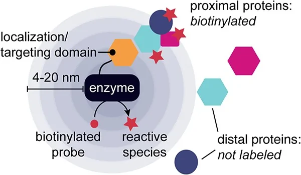
그림 31: 공간 분해 단백체학을 위한 조작된 근접 표지 효소. 효소 촉매는 특정 세포 내 위치를 표적으로 하여 확산 가능한 반응성 화학종을 생성하고, 이는 주변 단백질을 비오틴화한다. 근접성 기반 비오틴화를 통해 세포 소기관 하위 단백체의 농축 및 탠덤 질량분석 분석이 가능해진다.
근접 비오틴화 분야는 반응성 중간체인 biotin-5′-AMP를 방출하는 대장균(E. coli) 비오틴 연결효소 BirA의 단일 점돌연변이체인 BirA-R118G(BioID)의 개발과 함께 시작되었다(Choi-Rhee et al. 2004). 이 초기 보고 이후 과산화수소와 비오틴-페놀로부터 페녹실 라디칼을 생성하는 APEX(Rhee et al. 2013), 청색광 조사 시 일중항 산소를 생성하는 플라빈 결합 조작 단백질인 miniSOG(Zheng et al. 2023) 등 근접 표지를 위한 다양한 효소 군이 조작되었다. 단백질
공학적 시도는 이러한 시스템을 더욱 발전시켜 감도가 향상된 APEX2(Lam et al. 2015)와 표지 동역학이 더 빠른 TurboID(Branon et al. 2018)와 같은 변이체를 탄생시켰다. 이러한 발전은 근접 표지의 유용성을 확장하여 소기관 막 단백질의 고감도 농축, 다양한 모델 생물로의 적용, 그리고 인간 세포의 대규모 근접 비오틴화 지도 작성을 가능하게 했다(Go et al. 2021).
최근의 근접 표지 연구는 전례 없는 해상도로 단백체 수준의 생물학적 구조화를 규명하는 도구들에 집중되고 있다. 조작된 표적 결합 단백질과 저분자 광촉매를 통합한 하이브리드 시스템은 카벤(carbene) 및 니트렌(nitrene)과 같이 수명이 짧은 반응성 화학종을 생성하여 표지 반경을 실질적으로 좁힐 수 있다(Geri et al. 2020; McCutcheon et al. 2020; Tay et al. 2023; Lin et al. 2024). 새로운 부류의 조작된 효소들은 당화되거나 단백질 분해로 절단된 단백질 등 번역 후 변형(
PTM)을 지닌 단백질 변이체(proteoform)를 직접 조사할 수 있다(Joeh et al. 2020; Weeks et al. 2021). 이러한 혁신은 단순한 단백질-단백질 상호작용 목록 작성을 넘어, 특정 상호작용 표면을 식별하고 PTM이 단백체의 공간적 구성을 어떻게 형성하는지 밝혀낼 수 있는 기술로 근접 표지를 이끌어가고 있다.
합성생물학 및 제어 시스템
## 합성생물학 및 제어 시스템
광유전학 (Chandra L. Tucker*)
빛을 이용하여 세포 기능을 정밀하게 제어할 수 있도록 하는 광유전학(optogenetics)은 신경과학과 세포생물학에 혁신을 가져왔다. 이 분야의 발전은 단백질 공학 전략을 활용하여 자연계 또는 조작된 광감각 단백질로부터 유래한 빛-제어 단백질 시약을 개발함으로써 이루어졌다(Moglich and Moffat 2010) (그림 32). 지향 진화(directed evolution), 돌연변이 스크리닝, 삽입 라이브러리, 링커 무작위화, 합리적 설계를 포함한 다양한 전략이 이러한 시약의 제작과 최적화에 활용되어 왔다.
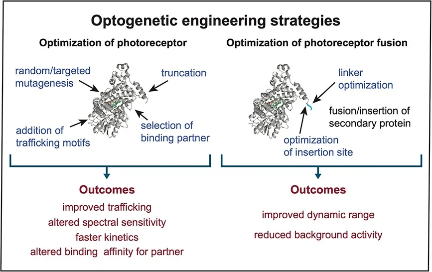
Figure 32: 광수용체 단백질 또는 광감각 도메인의 공학적 개량. 생물학적 활성의 제어 및 조작을 위한 최적의 빛 의존적 기능을 달성하기 위해 광수용체 및 광감각 도메인은 다양한 방식으로 전략적으로 조작되어 왔다. 그림의 광수용체는 AtCRY2(PDB ID 6K8I)이다(Ma et al. 2020).
대부분의 광유전학 도구는 자연계에서 발견되는 빛 감지 단백질에서 유래한다. 일부 초기 광유전학 도구는 최소한의 조작만으로 처음 구현되었으나(예: 포유류 뉴런에서 클라미도모나스 레인하르티(Chlamydomonas reinhardtii) 유래 채널로돕신-2의 최초 검증 (Boyden et al. 2005)), 기능을 최적화하기 위해 추가적인 공학적 개량이 요구되는 경우가 많았다. 분자공학적 전략에는 수송 모티프(trafficking motif)의 추가(Gradinaru et al. 2010), 도구 활용을 방해하는 고유 상호작용 도
메인(세포 내 위치 지정 신호, 자가 상호작용 모티프, 결합 모티프 등)을 파괴하기 위한 돌연변이 유발(Wu et al. 2009; Kennedy et al. 2010; Kawano et al. 2015), 그리고 광감각 도메인과 작동기(effector)의 키메라 융합체 제작 또는 도메인 삽입(Levskaya et al. 2009; Moglich et al. 2009; Wu et al. 2009; Lee et al. 2014; Dagliyan et al. 2016; Zhu et al. 2023a) 등이 포함된다. 또한 돌연변이 유발 및 키메라 도메인 교환은 분광 감도(spectral sensitivity)를 변경하거나(Lin et al. 2013; Oda et al. 2018), 광반응 속도론(photoresponse kinetics)을 개선하거나(Lin et al. 2009; Gunaydin et al. 2010; Klapoetke et al. 2014), 결합 친화도를 조절하는 데에도 활용되었다(Guntas et al. 2015; Kawano et al. 2015).
광유전학 도구 개발에서 생산적인 접근법 중 하나는 돌연변이 유발을 고처리량 선별 또는 파지 디스플레이(참조: In vitro 디스플레이 절 (Takuya Terai, Naoto Nemoto)) 및 결합 분석, 효모 표면 디스플레이(참조: 세포 기반 디스플레이 절 (Owen T. Porth, K. Dane Wittrup)), 또는 효모 2-하이브리드(yeast two-hybrid)와 같은 지향 진화 전략과 결합하는 것이다(Guntas et al. 2015; Jang and Woolley 2021). 광감각 분자 자체의 개선을 넘어
, 표적 단백질을 연결하는 데에도 분자공학이 적용되어 왔다. 널리 사용되는 접근법인 스플릿 단백질(split protein)의 빛 의존적 재구성은 단백질 절단 부위, 링커, 스플릿 단백질 단편 간의 결합 친화도 등 여러 요인의 최적화를 필요로 한다(Kennedy et al. 2010; Kawano et al. 2015; Dagliyan et al. 2018; Lee et al. 2025).
분자공학 방법론, 인실리코(in silico) 단백질 설계, DNA 기술의 경제성 향상은 광유전학 엔지니어링의 가능성을 한층 더 확장시켰다. 데노보(de novo) 단백질 설계 및 구조 예측 도구를 적용하여 새로운 빛 의존적 바인더를 합리적으로 설계하거나 기존 도구를 최적화할 수 있다. 전통적인 돌연변이 유발 및 스크리닝을 기반으로 한 현대 단백질 모델링 및 설계 접근법은 광유전학 엔지니어링의 흥미진진한 새로운 물결을 이끌어 낼 것으로 기대된다.
분자공학 방법론, 인실리코(in silico) 단백질 설계, DNA 기술
유전체 및 후성유전체 공학 (Izaiah J. Ornelas and James K. Nuñez*)
표적화된 유전체 및 후성유전체 공학 도구는 기초 연구뿐만 아니라 인간 치료제 및 농업과 같은 광범위한 응용 분야를 변혁시켰다. 거의 모든 현대 유전체 및 후성유전체 편집기의 기초가 되는 핵심 구조 설계는 모듈형이다: (1) 특정 유전체 위치로의 국소화를 유도하는 DNA 표적화 도메인; (2) 표적 위치에서 유전적 또는 후성유전적 변화를 수행하는 작동기 도메인(예: 뉴클레아제, 탈아미노효소, 역전사효소, 후성유전 조절인자)(Gupta and Kumar 2025) (그림 33). 초기의 프로그래밍 가능 시스템은 특정 DNA 서열을 인식
하도록 합리적으로 조작될 수 있는 징크핑거 단백질(Kim et al. 1996) 및 전사 활성인자 유사 작동체(TALE) 단백질과 같은 DNA 결합 도메인(DBD)에 테더링된 작동기에 의존했다(Miller et al. 2011). 2012년 스트렙토코쿠스 피오게네스(Streptococcus pyogenes) 유래 CRISPR-Cas9의 등장은 단일 가이드 RNA(sgRNA)의 DNA 표적 서열을 단순히 변경하는 것만으로 Cas9을 손쉽게 프로그래밍할 수 있게 함으로써 해당 분야의 혁명을 촉발했다(Jinek et al. 2012). Cas9은 RNA 유도 뉴클레아제로, DNA 표적화 특성은 유지한 채 뉴클레아제 활성을 불활성화시킨 단백질(dCas9)로 추가 조작되어 유전체 또는 후성유전체 변형 작동기와 융합될 수 있다(Qi et al. 2013).
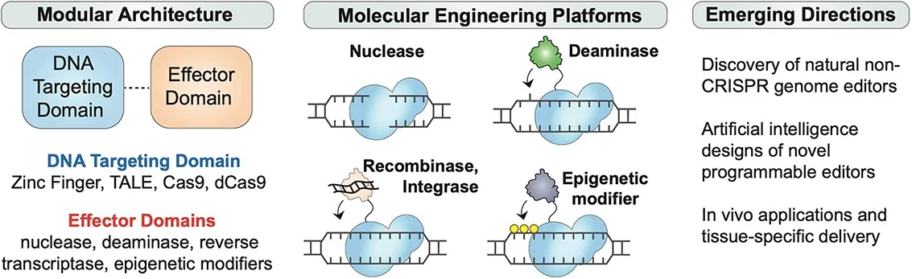
Figure 33: 유전체 편집을 위해 조작된 단백질의 설계 구조. 유전체 편집기는 DNA 표적화 도메인과 유전체 및 후성유전체 편집을 위한 작동기로 구성된다. 현대 플랫폼의 예로는 뉴클레아제, 염기 편집기, 인테그라아제, 후성유전 편집기가 있다. 이 분야의 현재 및 미래 연구에는 유전체 편집을 위한 새로운 모달리티 발굴, 새로운 편집기 최적화 및/또는 설계를 위한 AI 활용, 생체 내(in vivo) 치료 응용을 위한 조직 특이적 전달 등이 포함된다.
CRISPR 편집기는 표적 외 편집(off-target editing), 낮은 편집 효율, 전달의 한계와 같은 문제점을 수반할 수 있다. 이를 해결하기 위해 정확도와 활성을 개선하고 크기를 줄이고자 합리적 설계(예: PAM 제한 완화 변이체, 최적 sgRNA 선택, 작동기 선택)와 지향 진화(예: Cas 변이체의 돌연변이 유발/선별)를 적용하는 엔지니어링 노력이 진행되어 왔다(Tycko et al. 2016). 자연계의 다양한 CRISPR 시스템을 발굴함으로써 소형(Cas12, CasΦ), 열안정성, RNA 표적화(Cas13) 변이
체 등 S. pyogenes Cas9과 구별되는 독특한 생화학적 특성을 지닌 새로운 Cas 효소들이 확보되었다. DNA 염기 편집기(닉케이스 Cas/dCas에 시티딘 또는 아데닌 탈아미노효소를 융합)는 DNA 이중가닥 절단(DSB) 없이 단일 염기 전이(transition)를 가능하게 하며(Komor et al. 2016), 프라임 편집기(Cas9-역전사효소 융합체)는 원치 않는 부산물을 줄이면서 작은 삽입, 결손 및 치환을 가능하게 한다(Anzalone et al. 2019). 부위 특이적 재조합효소 및 인테그라아제를 dCas9이나 TALE과 같은 DBD에 합성 단백질 형태로 융합한 시스템은 거대 DNA 절편의 표적 유전체 삽입, 결손 및 역위를 가능하게 한다(Durrant et al. 2023).
이 분야가 빠른 속도로 발전을 거듭함에 따라, 여러 새로운 방향이 차세대 편집기의 형태를 만들어가고 있다. CRISPR를 넘어선 체계적인 발굴 노력은 RNA 및 단백질 유도 시스템의 다양성을 밝혀내고 있으며, 트랜스포존 인코딩 재조합효소에서 유래한 브리지 재조합효소(bridge recombinase) 등은 기존 Cas 기반 편집기를 넘어서 프로그래밍 가능한 DNA 삽입, 절제, 역위를 가능하게 한다(Pacesa et al. 2024). 이와 병행하여, 후성유전체 편집기와 같은 대안적 편집 모달리티는 유전체 DNA 서열 자체를 변경할
필요 없이 위치 특이적 전사 활성화 및 억제를 가능하게 하는 새로운 도구들을 제공했다(McCutcheon et al. 2024). 또 다른 성장 영역은 AI의 통합으로, 딥러닝 프레임워크를 통해 소형 고충실도 뉴클레아제 및 기타 프로그래밍 가능 작동기의 데노보 발굴과 최적화가 가능해지고 있다(Kim et al. 2025b; Ruffolo et al. 2025). 이러한 접근법은 링커 구조, 도메인 조합, 표적 외 효과 예측을 미세 조정하는 데 이미 사용되고 있는 계산 및 머신러닝 기반 노력을 보완한다. 유전체 및 후성유전체 편집 기술이 의학 분야의 임상 단계로 진입함에 따라, 연구자들은 진화하는 전달 플랫폼(바이러스 벡터, 지질 나노입자, 합성 벡터)을 통해 뇌, 간, 줄기세포 집단과 같은 질환 관련 조직에서 이러한 시스템을 생체 내에 적용하기 위해 매진하고 있다(Madigan et al. 2023). 모듈형 편집기 설계의 지속적인 혁신은 유전적·후성유전적으로 엔지니어링 가능한 한계를 지속적으로 넓혀가며, 살아있는 시스템에서 프로그래밍 가능한 제어의 범위를 확장하고 있다.
이 분야가 빠른 속도로 발전을 거듭함에 따라, 여러 새로운 방향이 차세대
합성 단백질 회로 (Dongyang Li and Michael B. Elowitz*)
상호작용하는 단백질들로 구성된 회로는 생화학적 신호와 환경적 자극을 감지하고, 처리하며, 이에 반응한다(Bray 1995). 합성생물학은 살아있는 세포에서 새로운 기능을 프로그래밍하기 위해 이러한 회로를 구축하고자 한다(Chen and Elowitz 2021). 이 회로들은 특이성, 약물 내성, 좁은 동적 범위(dynamic range) 등 기존 치료법의 한계를 극복하는 세포 기반 진단 및 치료의 새로운 가능성을 열어준다(Tan et al. 2021; Yin et al. 2025b). 또한 단백질 회로는 신호 전달 경로의 설계 원리
를 밝혀내는 기초 도구 역할을 하며(Leopold and Verkhusha 2024), 생물학적 계산의 새로운 패러다임을 발견하기 위한 비옥한 토양을 제공한다(Grozinger et al. 2019).
단백질 회로를 구축하기 위한 초기 접근법은 단백질 도메인을 “자르고 붙여(cutting and pasting)” 기존 경로를 재배선하는 데 집중되었으며, 이는 새로운 장치를 만드는 강력한 방법으로 계속 유지되고 있다. 이러한 공학적 접근법은 합성 수용체, 세포 부착 분자, 세포 내 신호 전달 경로에 널리 적용되어 왔다. 고유의 Notch 수용체 막관통 도메인을 독창적인 세포외 결합 도메인 및 전사인자와 재조합함으로써, synNotch 수용체는 새로운 생체직교적(bio-orthogonal) 리간드-수용체 신호전달 시스템의 제작을 가능
하게 했다(Roybal et al. 2016; Piraner et al. 2025). 마찬가지로, 상호작용하는 세포외 및 세포내 단백질 도메인을 결합함으로써 다양한 특성을 지닌 새로운 합성 세포 부착 분자의 레퍼토리를 구축할 수 있다(Chao et al. 2022; Stevens et al. 2023). 세포 내부에서는 모듈형 스캐폴드 단백질과 이종 발현을 통해 MAPK 신호 반응에서 정보의 흐름과 운명 결정을 유도할 수 있다(Bashor et al. 2008; O’Shaughnessy et al. 2011; Gordley et al. 2016; Mishra et al. 2021). 최근에는 인산화효소-탈인산화효소 도메인과 단백질분해효소 도메인으로 조립된 모듈형 인산화 또는 프로테아제 네트워크를 통해 인간 세포에서 신호 처리 시스템과 감지-응답 행동을 프로그래밍하는 것이 가능함이 입증되었다(Gao et al. 2018; Yang et al. 2025b).
지향 진화, 데노보/머신러닝 유도 설계, 그리고 이종 간 부품 적응(cross-species part adaptation, 예: CRISPR/Cas (Liu et al. 2021))의 최근 발전은 효소, 바인더, 스캐폴드의 툴킷을 확장하여 새로운 입력, 인터페이스, 제어 모달리티를 지닌 회로의 구현을 가능하게 하고 있다. 합성 이합체화제(synthetic dimerizer)는 자연계의 스캐폴딩 도메인을 보완하는 예측 가능하고 직교적인 인터페이스를 제공한다(Thompson et al. 2012; Chen et al. 2019; Pla
per et al. 2024). LOCKR 케이지/키 스위치(참조: In vitro 진단 절 (Chenggang Xi, Andy Hsien-Wei Yeh*)) 및 그 공동국소화 의존적 변이체(Co-LOCKR)는 설계된 형태적 래치(conformational latch)와 근접성을 통해 논리 게이팅을 직접 구현함으로써 유전자 조절 없이도 항원 불리언(Boolean) 표적화 및 세포독성 제어를 가능하게 한다(Langan et al. 2019; Lajoie et al. 2020). 데노보 다상태(multi-state) 단백질과 설계된 효소는 전적으로 조작된 부품으로만 조립되는 완전한 직교 회로의 가능성을 제시하며(Watson et al. 2023; Lisanza et al. 2025), 천연의 대응물과 상호보완적이거나 이를 능가하는 기능을 발휘할 수 있게 한다.
빠르고 일시적인 동역학 및 유전체를 훼손하지 않는(genome-sparing) 특성으로 인해, 합성 단백질 회로는 정밀하고 시간적으로 분해능이 높은 제어가 필수적인 세포 기반 치료에 특히 매력적이다. 세포 상태의 감지와 정밀한 개입을 결합하는 치료용 회로에 관심이 집중되고 있다. 이러한 접근법은 질환 관련 신호 전달 분자를 표적화하는 바인더에 의해 가능해졌다(Teng et al. 2021). 예를 들어, 지질 나노입자에 mRNA 형태로 전달되는 치료용 프로테아제 회로는 돌연변이 RAS를 감지하여 조건부로 종양 세포 사멸을 유도할 수
있다(Lu et al. 2025). 표적 억제제와 달리 이 접근법은 종양유전자 중독(oncogene addiction)에 의존하지 않으므로 내성 발생 가능성이 낮아 보인다. 마찬가지로 상호보완적인 전략으로서 과활성화된 ErbB 활성을 가진 암세포를 특이적으로 표적화하여 세포 내에서 증폭되는 회로는 포유류 세포에서 발암성 RAS/ERK 활성을 사용자가 정의한 치료적 출력으로 변환한다(Chung et al. 2019; Zou et al. 2026).
수학적 모델링은 새로운 기능을 설계하고 단백질 회로의 설계 공간을 탐색하는 데 핵심적인 역할을 한다. DNA 중합효소 및 단백질분해효소를 이용한 시험관 내 효소 네트워크는 다층 퍼셉트론(multilayer perceptron) 및 리저버 컴퓨팅(reservoir computing) 네트워크를 구현하여, 규모는 더 작지만 실리콘 기반 시스템과 유사한 강력한 계산 능력을 보여주었다(Okumura et al. 2022; Ghosh et al. 2026). 생체 내 회로 역시 흥미로운 새로운 기능들을 보여주었다. 동종 및 이종 이합체화 전
사인자를 이합체 의존적 자가조절과 결합한 비직관적인 회로 설계는 다세포 생명체의 핵심 요건인 다안정성(multistability)을 구현했다(Zhu et al. 2022). 마찬가지로, 자가 활성화 및 상호 억제 특성을 가진 조작된 단백질분해효소들은 승자독식(winner-take-all) 분류 회로로 구성될 수 있다(Chen et al. 2024a). 더 나아가 모델링 연구는 경쟁적 단백질-단백질 이합체화 네트워크가 강력하고 빠르며 유연한 컴퓨터로 기능할 수 있으며, 세포 내 단백질 발현 수준을 변경함으로써 그 작동 거동을 조절할 수 있음을 시사한다(Parres-Gold et al. 2025). 이러한 결과들은 공학적으로 조작된 단백질 회로의 계산 잠재력을 강조한다.
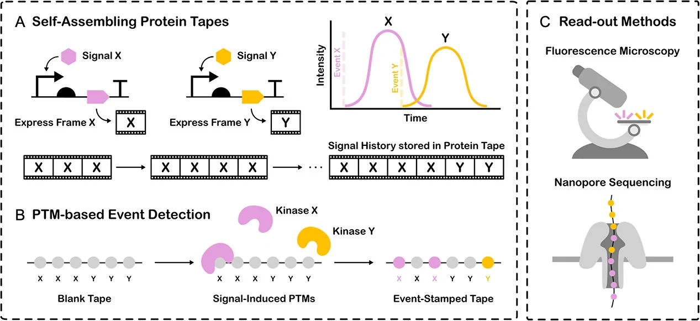
Figure 34: 단백질 기반 기록 기술 및 검출 방법의 개요. (A) 자가조립 단백질 테이프: 신호 X와 Y는 선형 “테이프”로 공동 조립되는 서로 다른 펩타이드 단량체의 발현을 유도하며, X/Y 단위체의 순서 패턴은 상위 사건의 발생 시점과 빈도를 암호화한다. (B) PTM 기반 사건 검출: 항시적으로 발현되는 “공백(blank)” 단백질 기질이 신호 의존적 효소(예: 인산화효소, 아세틸기전이효소 및 기타 PTM 라이터)에 의해 차등적으로 변형되어 사건의 정체와 시점을 인코딩하는 위치 특이적 표식을 축적한다. 이러한 단
백질 기질에 저장된 이력은 형광 또는 나노포어 단백질 시퀀싱, 표적 프로테오믹스와 같은 서열 수준 분석법으로 판독될 수 있다. (C) 단백질 기반 기록 방법과 함께 흔히 사용되는 검출 방법들.
앞으로 머신러닝 기반 단백질 설계 및 엔지니어링을 필두로 한 계산 기법은 단백질 회로 설계 역량을 비약적으로 확장할 것이다. 이러한 접근법은 이종이합체, 고친화도 바인더, 다상태 스위치, 알로스테릭 효소의 데노보 설계를 가능하게 한다. 데이터 효율적인 단백질 언어 모델 매개변수화는 부품 카탈로그를 지속적으로 확장하고 최적화를 가속화할 것이다(Watson et al. 2023; Jiang et al. 2025; Pacesa et al. 2025). 단백질 분해/인산화를 넘어선 모달리티(예: 유비퀴틴/SUMO 주기, 아세틸화/메틸화,
스플릿 인테인)의 확장과 단백질 회로와 DNA/RNA/대사 층위 간의 통합은 더욱 다재다능하고 견고한 제어기를 낳을 것이다(Qian et al. 2022b; Kaseniit et al. 2023; Hua et al. 2025). 이러한 모달리티는 또한 실제 응용에 필요한 정밀한 판독 및 섭동 수단을 제공할 것이다. 회로 수준에서 해결해야 할 과제는 동일한 부품을 재사용하면서도 세포 유형, 리간드 화학양론, 세포 내 국소화/응축물(condensate) 상태, 기계적 환경 등 국소 신호에 따라 거동을 변경하는 다재다능하고 맥락 의존적인 구조를 구축하여, 부품을 다시 조작하지 않고도 단일 설계가 여러 기능 간에 전환될 수 있도록 하는 것이다. 마지막으로, 중개의학적 응용을 위해서는 생체 내 면역원성을 최소화하기 위한 단백질 회로의 인간화가 필수적이다. 정밀하고 강력하며 견고한 단백질 회로를 구축하는 기술이 점점 발전함에 따라, 향후 수년간 이 분야가 크게 도약할 것으로 기대된다.
앞으로 머신러닝 기반 단백질 설계 및 엔지니어링을 필두로 한 계산 기법은
단백질 기록기 (Kingsley L.-J. Wong, Mattias Tolhurst, and Jeff Nivala*)
분자 기록(molecular recording)은 생물학적 사건을 생체분자 기질에 직접 기록하는 것을 목표로 한다(그림 34). 초기 시스템은 주로 CRISPR 기반 라이터(writer)(참조: 유전체 및 후성유전체 공학 절 (Izaiah J. Ornelas, James K. Nuñez*)), 재조합효소 또는 염기 편집기를 통해 DNA에 정보를 암호화하여 안정적이고 유전되는 편집 기록을 지속적인 로그(log)로 활용했다(Shipman et al. 2016; Choi et al. 2022; Lear and Shipman 2023).
단백질은 더 큰 “알파벳”(20여 종의 아미노산 및 다양한 PTM)과 더욱 풍부하고 조절 가능한 화학적 특성을 가진 상호보완적인 기질을 제공한다. 단백질 기반 기록기에서 “쓰기(writing)”는 영구적인 서열 변화, 부위 특이적 PTM, 또는 모듈형 펩타이드 단위체의 순차적 조립을 통해 이루어질 수 있으며, “읽기(reading)”는 질량분석법, 형광 기반 리포터, 또는 최근의 나노포어 단백질 시퀀싱으로 수행될 수 있다. 단백질 기록기는 DNA 쓰기에 내재된 유전체 교란을 피하면서도 더 높은 시간 해상도와 세포 생리와의 직접적인 결합을 보장하여, 정상적인 상태 전이, 자극 반응, 질병 진행과 같은 단일 세포의 생체 내 이력을 기록할 수 있게 한다. 이러한 접근법들은 종합적으로 DNA의 보관 안정성을 단백질의 즉각성과 다재다능함으로 치환하여, 특정 시간 척도, 신호, 판독 모달리티에 맞춤화된 기록기를 위한 영역을 개척하고 있다.
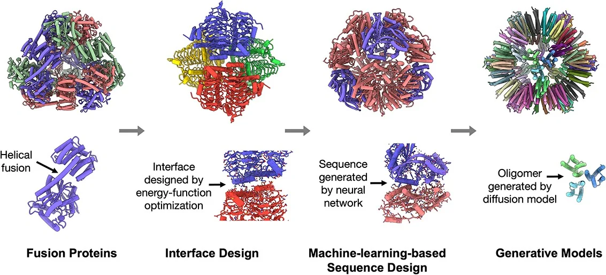
Figure 35: 단백질 케이지 설계의 발전. 초기 설계는 정의된 대칭성을 부여하기 위해 올리고머 빌딩 블록을 결합한 융합 단백질에 의존했다(Padilla et al. 2001). 이후의 접근법은 소단위체 상호작용의 기하학적 구조와 특이성을 제어하기 위해 계면 재설계를 사용했다(King et al. 2012). ProteinMPNN과 같은 머신러닝 기반 서열 설계 방법의 출현으로 성공률과 구조적 다양성이 획기적으로 증가했다(de Haas et al. 2024; Meador et al. 2024). 오늘날 RFdiffusio
n 및 Chroma와 같은 생성 모델(Ingraham et al. 2023; Watson et al. 2023)은 완전히 새로운 폴드와 구조의 생성을 가능하게 하여 단백질 복합체의 설계 공간을 확장하고 있다.
초기 단백질 기록기는 관심 프로모터를 조작된 펩타이드 단량체의 발현과 결합하여, 이들이 길게 연장된 “단백질 테이프”로 공동 조립되도록 함으로써 연속적인 시간 분해 로깅을 달성했다(Lin et al. 2023; Linghu et al. 2023). 테이프에 결합된 순서는 사건의 타이밍과 빈도를 인코딩하며, 내장된 형광 태그 또는 염료 결합 모티프는 순서와 강도를 광학적으로 판독할 수 있게 한다. 이러한 개념 증명 연구들은 유도 전사를 사용하여 약 1~7일에 걸쳐 기록을 수행함으로써 타당성을 입증함과 동시에 지속 기간 및 신호 유형에
대한 현재의 한계도 보여주었다. 전사 수준의 입력을 넘어 프로테아제 활성, 대사산물 또는 특정 신호전달 경로에 반응하는 링커로 확장하면 기록 가능한 대상의 범위를 넓히고 더 안정적인 스캐폴드를 통해 시간 척도를 연장할 수 있을 것이다. 이와 병행하여, 인산화효소 기반 기록기는 모듈형 단백질 기질의 가역적 인산화를 입증하여, 다른 변형으로도 일반화될 수 있고 생체 내에서 소거 가능하거나 아날로그 형태의 기록 모드를 지원할 수 있는 대안적인 PTM 중심 전략을 제시했다(Sun et al. 2025).
단백질 기록기가 발전함에 따라 가장 중요한 두 가지 핵심 요소는 기록하는 방식(writing)과 판독하는 방식(reading)이다. 현재의 자가조립 테이프는 개념을 입증했으나, 거대한 단량체(>500개 아미노산)를 사용하고, 조립 속도가 느리며(시간 단위 해상도), 형광에 의존하므로 다중화(multiplexing) 및 정보 밀도가 제한된다. 판독 방식을 광자(photon)에서 서열(sequence)로 전환(예: 나노포어 단백질 시퀀싱 또는 표적 프로테오믹스)하면 아미노산과 PTM 전체 알파벳을 온전히 활용할 수 있어 데이터 밀도를
비약적으로 높이고 오류가 교정된 다중화 해독이 가능해질 것이다. 기록 측면에서는 더 빠른 조립 화학(예: 스플릿 인테인 라이게이션(Carvajal-Vallejos et al. 2012), 효소 촉매 펩타이드 변형 또는 결합 형성, 태그/포획기(tag/catcher) 쌍(Cai et al. 2025))을 도입하여 배경 노이즈를 낮게 유지하면서도 분 단위의 해상도를 달성할 수 있다. 설계 목표에는 더 작고 직교적인 단량체 단위, 신속성을 위한 촉매적 또는 자가촉매적 전파, 정렬을 위해 내장된 동기화/바코드 모티프, 그리고 세포 수준에서 신뢰성 있는 해독을 지원하기 위한 보정된 오류 모델 등이 포함된다. 이러한 발전들은 단백질 고유의 라이터와 서열 수준의 리더가 결합하여 단순한 타임라인을 넘어 다중화가 풍부한 프로테옴 규모의 로그로 진화할 수 있음을 시사하며, 궁극적으로는 우리가 아직 어떻게 질문해야 할지조차 모르는 문제들을 탐구하고 해답을 찾는 새로운 길을 열어줄 것이다.
재료, 나노구조체 및 분자 기계
## 재료, 나노구조체 및 분자 기계
단백질 케이지 및 지지체 (Roger Castells-Graells, Todd O. Yeates*)
설계된 단백질 케이지(nanohedra)는 일반적으로 사면체, 육면체, 팔면체, 이십면체, 십이면체와 같은 플라톤 다면체를 닮은 기하학적 껍질 구조를 형성하는 자가조립 단백질 구조체이다. 이들의 고유한 대칭성, 명확한 크기, 모듈성 및 생체적합성은 나노의학, 재료과학, 구조생물학의 다양한 응용 분야에서 매력적인 지지체(scaffold)로 주목받게 만든다. 이 분야는 2000년대 초반 Padilla 등(2001)이 삼량체 및 이량체 올리고머를 나선형 융합(helical fusion)하여 최초의 단백질 케이지를 설계하면서 시작되었으며,
기하학적 설계 원리를 사용하여 복잡한 자가조립 단백질 구조체를 생성할 수 있음을 입증하였다(그림 35). 이 연구는 이전에 요약된 바와 같이(Yeates 2017), 이 분야의 후속 발전을 이끈 대칭성의 일반 원리를 정립하였다. 핵심 개념은 정밀한 배열을 가진 두 개의 독립적인 대칭 구성요소를 결합하는 것만으로도 놀라울 정도로 다양한 구조를 구현할 수 있다는 점이었다. Padilla 등(2001)의 독창적인 접근 방식과 이후 Lai 등(2014)에 의해 추가로 입증된 연구는 올리고머 간의 나선형 융합에 의존한 반면, 10년 후 King 등(2012)은 새롭게 등장한 단백질-단백질 계면 설계 알고리즘을 두 번째 방법으로 활용하여 여러 대칭 올리고머를 정밀한 배열로 결합함으로써 단백질 케이지를 제작하였다. 계산 기반 계면 설계의 강력한 성능 덕분에 가능한 가장 높은 대칭 형태인 이십면체를 포함하여 다양한 구조를 지닌 광범위한 설계 케이지 세트를 제작할 수 있게 되었다(Bale et al. 2016). 최근 연구에서는 대칭 파괴(symmetry-breaking)를 허용하는 계산 기법을 통해 훨씬 더 큰 크기의 단백질 케이지나 캡시드를 구현해 냈다(Dowling et al. 2025).
인공지능(AI)의 최근 발전과 ProteinMPNN(Dauparas et al. 2022)과 같은 머신러닝(ML) 기반 서열 설계 기법의 도입은 신규(de novo) 케이지 설계의 성공률을 현저히 높였다(de Haas et al. 2024; Meador et al. 2024). 현재 설계된 단백질 케이지는 다가 디스플레이(multivalent display)가 면역 활성화를 증진시키는 항원 제시 및 백신 개발(Walls et al. 2020), 표적 약물 및 유전자 전달(Edwardson et al. 2018), 효소 공동 국소화(
co-localization)(McConnell et al. 2020)를 위한 매우 다재다능한 플랫폼으로 기능한다. 또한, 초저온 전자현미경(cryo-EM)에서 작은 단백질을 고해상도로 시각화하기 위한 이미징 지지체로도 채택되었다(Cannon et al. 2019; Edwardson et al. 2022; Castells-Graells et al. 2023). 아울러 최근의 진전은 제어된 형태 전환이 가능한 리간드 반응형 케이지를 구현함으로써, 정적인 껍질에서 동적이고 자극 민감성을 지닌 나노입자로의 패러다임 전환을 이끌어냈다(Lee et al. 2024).
앞으로를 내다볼 때, RFdiffusion(Watson et al. 2023) 및 Chroma(Ingraham et al. 2023)와 같이 새로운 단백질 주쇄를 생성(또는 “환각, hallucinating”)하는 생성형 AI 알고리즘은 단백질 설계를 천연 단백질 구조의 범주 너머로 확장하며 분야를 혁신하고 있다. 대폭 확장된 단백질 구조 공간은 형태 전환이 가능한 단백질 시스템인 프로그래밍 가능한 나노 기계의 길을 열어, 정적 재료와 활성 생체 시스템 사이의 간극을 메울 것이다. 기하학적 설계 원리와 AI 기반 도구의 통합은 설계
된 단백질 케이지의 지형을 변화시키고 있다. 새로운 구조와 기능에 대한 가능성은 계속해서 확장되어 생명의학 및 나노물질 전반에 걸쳐 단백질 공학의 비약적인 발전을 견인할 것이다.
앞으로를 내다볼 때, RFdiffusion(Watson et al. 20
하이드로겔 (Ruiyan Gao, Diego López Barreiro*)
하이드로겔은 물로 팽윤된 고분자 3차원 네트워크로(Peppas et al. 2006), 물리적, 화학적 또는 효소적 가교를 통해 점탄성 및 구조적 특성을 조절할 수 있다(그림 36). 하이드로겔과 세포외 기질(ECM) 간의 유사성을 고려할 때, 조직 공학이나 약물 전달 응용 분야 등을 위해 다양한 기계적 및 구조적 특성을 지닌 생체적합성 및 생분해성 ECM 모사 하이드로겔을 생산하고자 콜라겐, 엘라스틴, 케라틴 및 실크 피브로인과 같은 천연 구조 단백질(Zhang et al. 2023)이 집중적으로 연구되어 왔다(Morin et a
- 2006; Ham et al. 2016; Tian et al. 2022b; Fernández-Serra et al. 2024). 알부민, 혈청 단백질 또는 리소자임과 같은 다른 천연 비구조 단백질 역시 하이드로겔 제형으로 개발되었다(Baler et al. 2014; Seth et al. 2023).
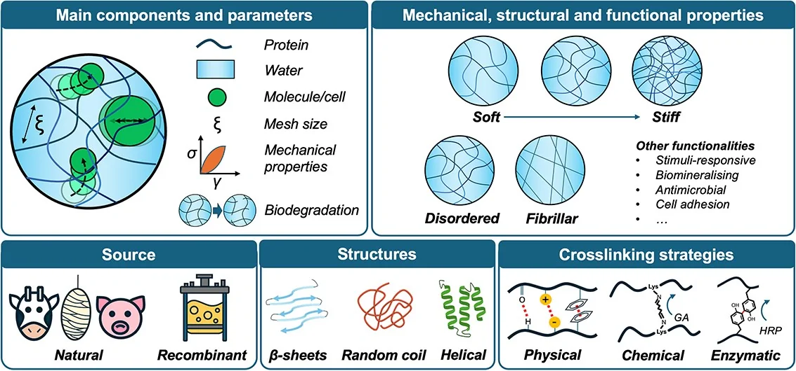
Figure 36: 단백질 하이드로겔의 구성요소, 매개변수 및 특성. 단백질은 천연 공급원에서 얻거나 재조합 방식으로 생산할 수 있으며, 생성된 하이드로겔의 기계적 및 구조적 특성에 영향을 미치는 특정 2차 구조(예: β-병풍구조, 무작위 코일, 나선형)를 형성한다. 하이드로겔의 특성에 영향을 미치는 기타 매개변수로는 가교 전략(물리적, 화학적 또는 효소적), 단백질 농도, 또는 무질서 구조나 섬유상 구조를 형성하려는 단백질의 경향 등이 있다. 추가로 단백질은 하이드로겔의 특성을 확장하는 비구조적 기능성(예: 자극 반응성,
생체광물화, 항균 특성)을 나타낼 수 있다. GA: 글루타르알데하이드(Glutaraldehyde); HRP: 양고추냉이 과산화효소(Horseradish peroxidase).
그럼에도 불구하고 천연 단백질은 공급원별 변이성, 면역원성, 오염물질의 존재, 비효율적인 추출/수확 공정 등의 한계에 직면해 있다. 이는 결과적인 하이드로겔 구조에 대한 제어를 제한하고 성능을 저하시킬 수 있다(Chang et al. 2021). 다행히 단백질 공학 및 합성생물학의 발전은 자연에서 영감을 얻은 새로운 재조합 단백질의 개발을 촉진하였다(Miserez et al. 2023). 이를 통해 천연 구조 단백질의 탠덤 반복체—예를 들어 열반응성 VPGXG 엘라스틴 유사 블록과 단단한 GAGAGS 실크 유사 블록(Huang et
al. 2016a)—를 조합한 새로운 모듈형 단백질을 정밀하게 설계할 수 있게 되었다. 구조적 블록 외에도 기능성 펩타이드(예: 세포 결합, 생체광물화, 항균)를 융합할 수 있다(Shire et al. 2024). 종합적으로 이는 프로그래밍 가능성을 부여하여 특정 구조(예: β-병풍구조, 무질서 구조 또는 나선형)로 자가조립되거나, 자극 반응성을 나타내거나, 다기능성을 발휘하는 하이드로겔을 제작할 수 있게 한다.
그러나 새로운 재조합 단백질을 위한 방대한 설계 공간을 실험만으로 탐색하는 것은 어렵다. 다행히 분자 동역학 시뮬레이션이나 머신러닝에 기반한 데이터 주도 접근법(Huang et al. 2016a; Ni et al. 2023; Mout et al. 2024; Lu and Buehler 2025)은 특정 설계 목표(예: 2차 구조 함량, 형태)나 재료 특성(예: 강도, 자극 반응성)에 대해 새로운 서열을 컴퓨터 상(in silico)에서 테스트할 수 있는 속도를 크게 가속화하고 있다. 여기서 단백질 하이드로겔을 연구하는 그룹 전반에 걸
친 개선되고 일관된 데이터 보고 및 공유 전략은 진전을 앞당기고 광범위한 단백질에 걸쳐 작동하는 일반화 가능한 예측 도구를 개발하는 데 매우 중요할 것이다. 새로운 재조합 단백질은 신규 구조, 조성 및 기능을 지닌 하이드로겔의 3D 프린팅을 위한 바이오잉크를 생산하는 데에도 사용될 수 있다(Salinas-Fernández et al. 2020). 그러나 바이오잉크 안정성, 프린팅 해상도, 혈관화(조직 공학 응용 분야에서 매우 중요)와 같은 측면을 개선하기 위해 추가 연구가 필요하다. 마지막으로 단백질 하이드로겔은 인공 생체 재료(engineered living materials, ELM)라는 신흥 분야에서 핵심적인 역할을 하고 있다(Liu et al. 2022). 이러한 하이드로겔은 일반적으로 세포에 의해 분비되거나(Wang et al. 2021b), 천연 단백질로 만들어진다(Zhao et al. 2019). 인공 생체 재료에서 세포와 하이드로겔 지지체는 시너지 있게 상호작용하여 동적 및 자극 반응 특성이 강화된 재료를 조립하며, 이는 헬스케어, 생체광물화, 바이오센싱 또는 환경 분야의 응용을 포괄한다(Zhao et al. 2019; Tang et al. 2021).
그러나 새로운 재조합 단백질을 위한 방대한 설계 공간을 실험만으로 탐색하
나노기공 (Yujia Qing, Hagan Bayley)
이온이나 분자 수송을 매개하기 위해 나노스케일의 막관통 채널로 조립되는 기공 형성 단백질(pore-forming proteins)은 1970년대에 생명공학 도구로 제안되었다. 효소 및 항체와 마찬가지로, 이들은 분자 상호작용을 지지할 수 있는 견고한 3D 구조를 지니고 있다. 초기 연구는 기공 조립의 화학적 제어에 초점을 맞추었다(Walker and Bayley 1994; Walker et al. 1994, 1995). 이후 공학적 연구는 주로 단일 분자 센싱 쪽으로 향했는데, 인가된 전위 하에서 나노기공을 통과해 이동(transl
ocation)하는 개별 분석물이 막관통 이온 전류를 변조하는 원리를 이용한다. 대부분의 나노기공 센서는 다중 소단위 세균 독소이며(그림 37), 원형체(protomer)를 조작하여 조립된 기공의 구조와 기능을 변경할 수 있다. 센싱을 수행하려면 표적 분자와의 상호작용 부위를 갖추어 일시적인 비공유 결합이나 공유 결합적 부착을 가능하게 하거나(Shin et al. 2002), 통과하는 중합체의 세그먼트를 감지하도록 판독 헤드(reading head)가 배치된 맞춤형 나노기공이 필요하다(Stoddart et al. 2010). 이러한 상호작용은 신호 획득을 정확히 수행할 수 있을 만큼 충분히 길면서도 짧아야 하며, 이상적으로는 밀리초 단위여야 한다. 추가적인 공학적 연구는 기공의 전기삼투(Gu et al. 2003) 및 개폐(gating) 특성(Wang et al. 2025)을 조절하는 데 목표를 둔다. 더 나아가 조작된 나노기공은 단일 분자 화학(Qing et al. 2020), 구획 간 소통(inter-compartment communication)(Booth et al. 2019), 유도 분자 조립(directed molecular assembly)(Koo et al. 2019) 연구를 뒷받침한다.
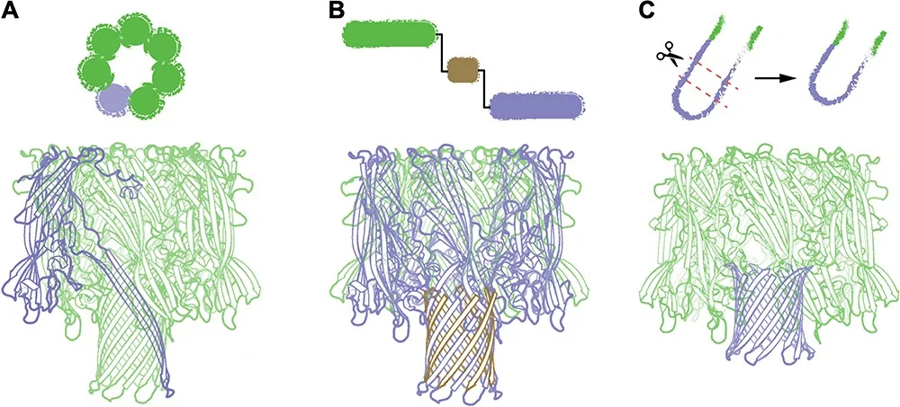
Figure 37: 조작된 단백질 나노기공. α-용혈소(α-hemolysin, αHL) 나노기공(PDB ID: 7AHL)에 적용된 대표적인 공학 전략(Song et al. 1996). (A) 칠량체(heptamer) 내에 단일 변이 원형체(protomer, 보라색)의 도입. (B) 발현된 C-말단 및 N-말단 단편(각각 녹색 및 보라색)과 중앙 합성 펩타이드(갈색)의 고유 화학적 결찰(native chemical ligation)에 의한 반합성(semisynthesis). (C) 개별 소단위 내 두 막관통 β 가닥 모두에서
아미노산을 쌍으로 제거함으로써 배럴을 절단(barrel truncation).
1996년, 황색포도상구균(S. aureus)의 α-용혈소(αHL) 결정 구조가 1.9 Å 해상도로 규명되었으며, 이는 시각화된 최초의 다중 소단위 형성 막관통 β-배럴 단백질이었다(Song et al. 1996). 그 이후로 단백질 공학의 거의 모든 알려진 수단이 나노기공에 적용되었다. 부위 특이적 시스테인 돌연변이 유발 및 후속 화학적 변형(Walker and Bayley 1995a; Valeva et al. 1996)은 오늘날에도 일상적으로 수행되고 있다. 중첩부, 틈새(nick), 갭을 지닌 단편들을 상보적으로 결합하여 기능
적 기공을 형성하였으며(Walker et al. 1993), 기공 내부의 공동(cavity)을 고분자나 소형 단백질로 채우기도 했다(Howorka et al. 2000; Jung et al. 2005). 나노기공은 또한 단백질 인식을 위해 링커 사슬로 연결되거나 폴리펩타이드 사슬의 연장 형태로 리간드를 공유 결합적으로 기능화하였으며(Movileanu et al. 2000; Cheley et al. 2006; Harrington et al. 2013, 2015), 상보적 서열에 결합하는 올리고뉴클레오타이드(Howorka et al. 2001a, Howorka et al. 2001b), 압타머(Rotem et al. 2012), 그리고 동족 게스트 분자를 포획하기 위한 호스트 분자(Wu et al. 2007; Clarke et al. 2009)로도 기능화되었다. 나노기공 분야에서 유래된 접근법으로는 화학적 변형과 결합된 스캐닝 돌연변이 유발(Walker and Bayley 1995b), 비공유 어댑터(예: 시클로덱스트린)(Gu et al. 1999; Gu et al. 2001a, 2001b) 또는 수송체(carrier)의 도입(Braha et al. 2005), 하나 이상의 상이한 소단위를 포함하는 이종체(heteromer)의 제작(Braha et al. 1997; Banerjee et al. 2010; Hammerstein et al. 2011), 그리고 대체 소단위 화학양론(stoichiometry)을 지닌 관련 기공의 규명(Miles et al. 2002; Jayasinghe and Bayley 2005) 등이 있다. 조작된 변이체의 효율적인 스크리닝에서 결정적이었던 것은 나노기공의 무세포 합성(cell-free synthesis) 및 관련 기능 분석법의 개발이었으며(Walker et al. 1992), 이는 나아가 αHL 기공의 칠량체적 특성을 확인시켜 주었다(Gouaux et al. 1994; Cheley et al. 2002). 수년간의 실험을 통해 β-배럴이 예상외로 견고하며(Kang et al. 2005) 과감한 변형을 수용할 수 있음이 밝혀졌고(Maglia et al. 2009), 이는 휴대용 장치에서 분자 센서로 사용되는 토대를 마련했다. 수십 년간의 나노기공 엔지니어링을 통해 생성된 데이터에 부분적으로 힘입은 최근의 AI 기반 단백질 설계의 급증은 창출 가능한 범위를 변화시키고 있다. 그러나 AI의 잠재력을 완전히 실현하려면 설계를 전례 없는 기능적 특성을 지닌 기공으로 탈바꿈시킬 수 있는 더 빠르고 확장 가능한 스크리닝이 필요할 것이다.
나노기공 공학은 점진적인 단일 부위 수정에 머무르기보다는 복잡한 기능을 생성하기 위한 구조적 탐색과 다중 부위 변형으로 정의되는 단계로 진입하고 있다. 떠오르는 방향으로는 나노기공의 절단(Stoddart et al. 2014) 및 신장(Qing 연구진의 미발표 연구)뿐만 아니라, 서브나노미터 정밀도로 분자 운동을 안내하는 워킹(walking) 또는 호핑(hopping)용 트랙 구축(Qing et al. 2018)이 포함된다. 고유 화학적 결찰(native chemical ligation)에 의한 나노기공 반합성의 발전(Lee and
Bayley 2015)(단백질 결찰 절 참조(Luis F. Guerra, Manuel M. Müller*))은 개별 기공 내에서 정밀한 다중 부위 기능화의 가능성을 열어주며, 나노기공을 다중 도메인 복합체(예: 언폴데이스(unfoldase) 또는 헬리케이스(helicase)와의 복합체)로 통합하는 것(Zhang et al. 2021)은 생체고분자 통과와 서열 분석을 결합할 수 있다. 나아가 여기서 밝혀진 원리들은 미래의 생명의학 및 생체전자공학 응용을 위한 나노기공 어레이 구축에 중요한 정보를 제공할 것이다.
나노기공 공학은 점진적인 단일 부위 수정에 머무르기보다는 복잡한 기능을
인공 단백질 모터 (Vanessa Tanja Trossmann, Birte Höcker*)
운동은 생명에 필수적이다. 운동은 화학 에너지를 기계적 일로 변환하는 복잡한 단백질 조립체인 생체분자 모터에 의해 구동되며, 이들은 선형 또는 회전 운동을 통해 핵심적인 세포 기능을 수행한다. 미오신, 키네신, 디네인과 같은 선형 모터는 액틴 필라멘트나 미세소관을 따라 효율적으로 이동한다. 모터 기능의 핵심 원리가 알려져 있음에도 불구하고, 이들의 복잡성으로 인해 메커니즘을 상세히 규명하기 어려우며, 이는 바텀업(bottom-up) 방식으로 모터 기능을 구축하려는 노력을 촉진시켰다(그림 38)(Linke et al. 2020). 방
향성 있는 운동은 일반적으로 트랙에 결합, 형태 변화(종종 ATP 가수분해에 의해 유발됨), 해리의 세 단계를 거친다(Furuta et al. 2017). 형태 변화는 구조 요소를 이동시켜 스텝(step)을 생성하며, 그 방향은 모터의 기하학적 형태나 트랙의 비대칭성에 따라 결정된다(Zuckermann et al. 2015). 키네신과 같은 진행성(processive) 모터는 이동하는 동안 결합 상태를 유지하는 반면, 미오신 II와 같은 비진행성(non-processive) 모터는 각 주기마다 분리되지만 짧고 빠른 상호작용 묶음으로 작동한다.
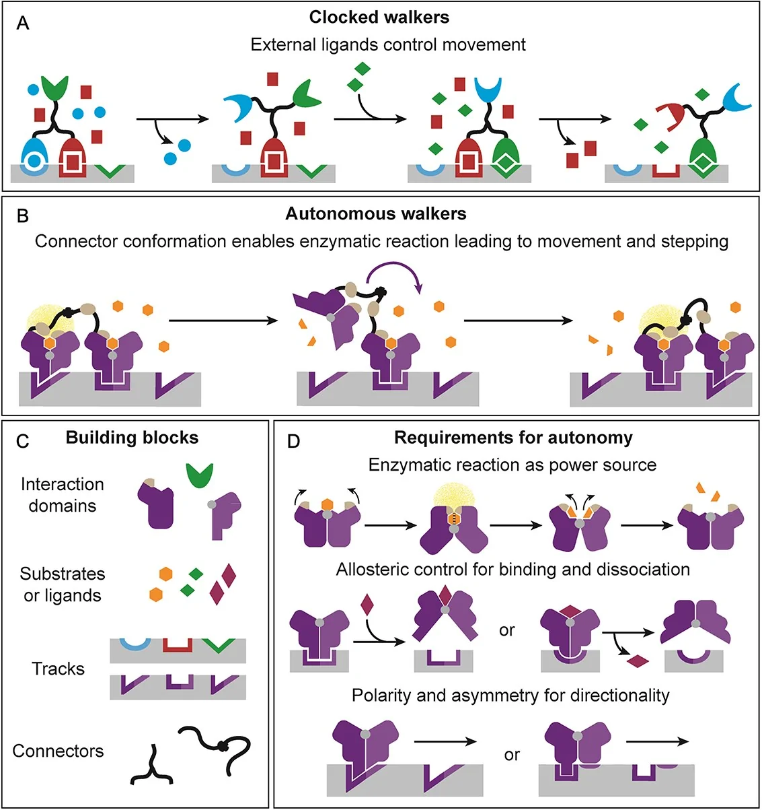
Figure 38: 인공 모터 단백질 설계를 위한 바텀업 전략. (A) 클록 워커(Clocked walker)는 트랙을 따른 결합, 해리 및 스테핑을 조율하기 위해 외부 리간드 제어에 의존한다: 이 설계는 직교적으로 연결된 세 개의 상호작용 도메인(파란색, 빨간색, 녹색)으로 구성된 클록 워커를 보여준다. 비대칭 트랙을 따른 방향성 운동은 트랙 결합 및 해리를 유도하는 외부 리간드 제어(파란색 원, 빨간색 사각형, 녹색 마름모)에 의해 달성된다(Nilsson et al. 2025). (B) 자율형 워커(Autonomous w
alker)는 외부 제어 없이 운동, 힘 생성 및 스테핑을 위해 화학 에너지를 사용한다: 모범적인 설계는 연결체(connector, 검은색)가 활성 부위(베이지색)를 보완하는 형태일 때 기질(주황색)을 소비하는 효소 반응(노란색)을 나타내는 연결된 두 개의 상호작용 도메인(보라색)으로 구성된 자율형 워커를 보여준다. 화학적 변환, 생성물 방출 및 형태 변화는 비대칭 트랙으로부터의 해리와 방향성 운동(보라색 화살표)으로 이어진다. 새로운 기질 분자의 결합은 알로스테릭 제어에 의해 트랙 결합을 유도하고, 연결체의 형태적 재배열은 효소 기능(노란색)을 복원하여 최종적으로 스테핑으로 이어진다. (C) 인공 단백질 워커를 생성하기 위한 모듈형 빌딩 블록은 특정 상호작용 도메인, 적절한 기질 및/또는 리간드, 결합을 위한 해당 트랙, 그리고 기계적으로 조절 가능한 연결체로 구성된다. (D) 인공 단백질 워커에서 자율성의 생성은 세 가지 설계 과제를 포함한다: 동력원으로서 효소 주기 구현, 결합과 해리를 제어하기 위한 원거리 단백질 부위 간의 알로스테릭 통신 가능화, 방향성 운동을 위한 극성 및 비대칭성 확립(Nilsson et al. 2024).
인공 단백질 모터의 설계 전략은 클록 워커(clocked walker)와 자율형 워커(autonomous walker)로 나뉜다. 클록 워커는 트랙을 따른 결합, 해리 및 스테핑을 제어하기 위해 외부 리간드에 의존한다(그림 38A). 대조적으로 자율형 워커는 외부 제어 없이 효율적인 운동, 힘 생성 및 스테핑을 위해 화학 에너지를 사용한다(그림 38B). 합성 클록 워커의 예로는 텀블위드(Tumbleweed)가 있는데, 이는 비대칭 DNA 트랙과 상호작용하는 서로 다른 DNA 결합 도메인을 각각 포함하는 3개의 코일드코일 다리를 가
진 인공 모터이다. 이 모터의 스테핑은 리간드 펄스에 의해 제어되며, SPR 및 단일 분자 형광 연구에서 입증된 바와 같이 브라운 래칫(Brownian ratchet) 메커니즘을 따른다(Nilsson et al. 2025). Zuckermann 등은 대칭 트랙을 따른 방향성 운동이 공간적 또는 시간적 비대칭성이나 파워 스트로크(power stroke) 없이도 시간 대칭적 주기 하에서 화학적 전위와 지속성으로부터 발생하는 합성 키네신 영감 단백질(SKIP)을 모델링하였으나, 아직 실험적으로 구현되지는 않았다(Zuckermann et al. 2015). Furuta 등은 디네인의 모터 부분과 액틴 결합 요소를 결합하여 ATP 가수분해를 사용해 액틴 필라멘트를 따라 방향성 있게 미끄러질 수 있는 자율형 하이브리드 모터를 구축하였다(Furuta et al. 2017). 그들은 이후 디네인을 비회문(nonpalindromic) DNA 결합 단백질과 결합하여 DNA 나노튜브를 따라 활주하는 빠른 모터를 제작했으며, 결합 부위의 공간적 배열을 통해 방향성이 결정되었다(Ibusuki et al. 2022). 또 다른 합성 자율 모터인 론모어(Lawnmower)는 펩타이드 “잔디밭(lawn)”의 단백질 분해 절단에 의해 움직이는 트립신 프로테아제로 장식된 구형 허브로 구성된다. 이 소진 브릿지 브라운 래칫(burnt-bridge Brownian ratchet) 메커니즘은 방문하지 않은 기질을 향해 최대 80 nm/s의 속도로 편향된 방향성 운동을 생성한다(Korosec et al. 2024).
모듈형 빌딩 블록으로부터 인공 자율 단백질 기반 분자 모터를 제작하기 위한 일반적인 로드맵(그림 38C)은 Nilsson 등(2024)에 의해 제시되었다. 세 가지 주요 설계 과제가 확인되었다: 동력원으로서 효소 주기의 구현, 원거리 단백질 부위 간의 알로스테릭 통신 가능화, 그리고 지향성 운동을 위한 극성 확립이다(그림 38D). 모듈형 전략은 천연 비모터 단백질 구성요소와 신규 설계를 모두 활용할 수 있다. 실제로 생체분자 모터는 신규 단백질 설계의 주요 목표가 되었다. 예를 들어 Courbet 등은 계산 설계를 사용하여 기계적
으로 구속된 축-로터(axle-rotor) 단백질 조립체를 구축하였다(Courbet et al. 2022). 내부 이면(dihedral) 또는 순환(cyclic) 대칭으로 설계된 이들 구성요소는 여러 회전 상태를 취하는 복합체로 조립되며, 이는 회전식 나노 기계를 향한 진일보이다. 최근에는 Ulčakar 등이 설계된 섬유상 단백질 트랙을 따라 확산하는 이종이량체 발을 가진 동종올리고머로 구축된 무작위 단백질 워커의 신규 설계를 보고하였다(Ulčakar et al. 2025). 방향성 및 제어된 운동 달성과 같은 결정적인 과제가 여전히 남아 있지만, 이러한 연구들은 나노의학, 재료과학, 생체컴퓨팅 및 합성생물학 분야의 미래 응용을 위한 인공 모터 단백질의 바텀업 단백질 공학 및 설계를 향한 중요한 진전을 나타낸다(Furuta 2023).
합성적으로 확장된 단백질
## 합성적으로 확장된 단백질
비표준 아미노산 (James A. Van Deventer*)
자연은 주형 기반의 단백질 생합성을 활용하여 방대한 생체 분자적 과제를 해결한다. 그러나 자연 또한 수백 가지의 번역 후 변형(PTM)으로 단백질을 장식하고, 셀레노시스테인과 피롤라이신이라는 두 가지 추가 아미노산까지 유전적으로 암호화함으로써 20종의 표준 아미노산(canonical amino acid, cAA)을 넘어서는 전략을 일상적으로 구사한다 (Peeler and Weerapana 2019; Kivenson et al. 2025). 비표준 아미노산(noncanonical amino acid, ncAA)을 이용한 유전암호 조작
은 이러한 자연의 개념을 한 단계 더 발전시켜 실험실에서 정밀한 단백질 화학적 확장을 가능하게 한다(ncAA는 UAA, 비천연 아미노산, 비표준 아미노산, 비단백질성 아미노산으로도 불린다). ncAA를 포함하는 단백질의 응용 분야는 구조생물학, 기전 생화학, 단백질체학, 신약 개발, 생체재료 등을 아우른다. 최근 발표된 여러 문헌에서 다양한 분야의 ncAA를 포괄적으로 검토한 바 있으므로 (Budisa 2025), 본 절에서는 이를 모두 다루는 대신 ncAA 도입 원리와 주요 응용 분야, 그리고 향후 발전을 위한 기회들을 요약하여 소개한다.
ncAA 도입에는 크게 세 가지 유형이 있다 (그림 39) (Lino et al. 2024). 모든 도입 전략에서 특정 tRNA에 ncAA를 아실화하는 과정은 필수적이다 (그림 39A). 이 ncAA-tRNA는 이후 리보솜 단백질 번역에 참여하여 (그림 39B) 유전암호 조작을 달성한다 (그림 39C–E). 세포 내에서는 센스 코돈 재할당(그림 39C)과 유전암호 확장(그림 39D)이라는 두 가지 유전암호 조작 전략이 수행된다. 시험관 내 유전암호 재프로그래밍은 무세포 단백질 합성계를 통해 이루어진다 (그림 39E). 잔기 특이적
ncAA 도입으로도 불리는 센스 코돈 재할당은 단백질 번역 중 cAA를 ncAA로 치환하는 방식이다 (그림 39C). 이 기술은 구현하기 비교적 간단할 수 있다. 즉, 세포 균주 엔지니어링을 거의 또는 전혀 거치지 않고도 표준 발현 조건에서 cAA의 구조적 유사체를 단백질 내로 도입할 수 있다. 이 기술의 초기 성공 사례는 X선 결정학을 통한 단백질 구조 규명을 위해 메티오닌을 셀레노메티오닌으로 치환한 것이다 (Hendrickson et al. 1990). 중금속인 셀레늄은 다파장 비정상 분산법(MAD)을 용이하게 하여 X선 회절의 위상 문제를 해결한다. 수백 개의 단백질 구조가 셀레노메티오닌을 사용하여 규명되었으며, 이는 모든 분야를 통틀어 ncAA의 가장 영향력 있는 응용 사례라 할 수 있다. 과발현되거나 조작된 아미노아실-tRNA 합성효소(aaRS)가 잔기 특이적 도입에 사용할 수 있는 ncAA의 범위를 넓힌다는 점이 밝혀지면서 추가적인 응용이 이어졌다. 센스 코돈 재할당은 단백질 전반에 큰 조성 변화를 유도하므로, 단백질 기반 생체재료를 설계하거나 단백질 안정성을 규명하는 데 사용되어 왔다 (Majekodunmi et al. 2024). 또한 잔기 특이적 도입은 새로 합성되는 단백질의 단백질체 전반에 걸친 변화를 유도한다. 생체직교 비정규 아미노산 태깅(BONCAT) 및 관련 기술들은 고유한 반응성 작용기를 지닌 ncAA를 사용하여 새로 합성된 단백질을 선택적으로 변형한 후, 단백질체학 또는 이미징 워크플로를 통해 어떤 단백질이 (또는 어디에서) 합성되고 있는지를 식별한다 (Loynd et al. 2025). 이러한 접근법은 다양한 생물학적 자극에 대한 단백질체 반응을 이해하는 데 독보적인 역량을 제공한다. 센스 코돈 재할당은 강력하면서도 비교적 단순한 ncAA 도입 방식을 지원하며, 다양한 분야에 지속적인 영향을 미치고 있다.
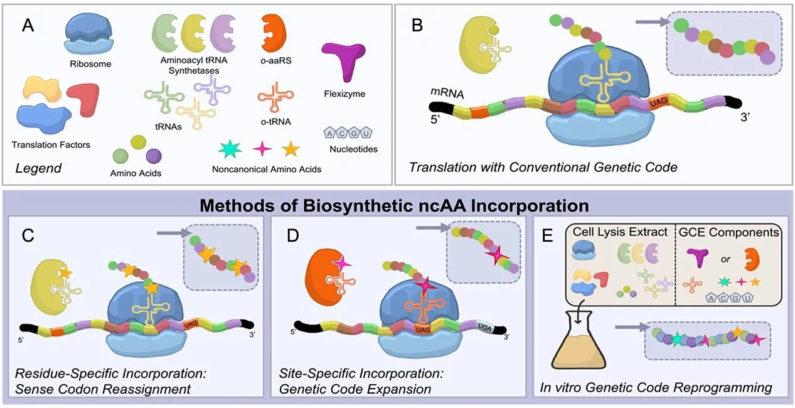
Figure 39: 유전암호 조작 시스템의 구성 요소 및 응용. (A) 표준 아미노산(cAA) 및 비표준 아미노산(ncAA) 번역 중에 사용되는 생체 분자들. O-aaRS 및 o-tRNA: 유전암호 확장에 사용되는 OTS를 구성하는 직교성 aaRS 및 직교성 tRNA. 플렉시자임(Flexizyme): tRNA에 ncAA를 아실화할 수 있는 리보자임(시험관 내 유전암호 재프로그래밍에 사용). (B) 기존 단백질 번역의 모식도. aaRS는 특정 cAA로 동종(cognate) tRNA를 아미노아실화한다. 리보솜에서 생성된 cAA-
tRNA는 mRNA의 해당 코돈에 대한 tRNA 안티코돈의 결합에 기초하여 번역된다. 종결 코돈에 도달할 때까지 자라나는 폴리펩타이드 사슬에 cAA가 순차적으로 추가되며, 종결 코돈에 도달하면 종결 기구가 번역 장치로부터 폴리펩타이드를 방출시킨다. (C–E) 주요 유전암호 조작 시스템. (C) 센스 코돈 재할당 (잔기 특이적 ncAA 도입). 정상적으로 표준 아미노산을 암호화하는 천연 tRNA가 대신 ncAA로 아실화된다; 이는 천연 또는 조작된 aaRS를 통해 달성될 수 있다. 생성된 ncAA-tRNA는 리보솜에서 번역되어 특정 cAA를 암호화하는 센스 코돈 그룹에 반응하여 ncAA가 도입된다. 주요 응용 분야: 구조생물학, 단백질체학, 생체재료, 단백질 안정성. (D) “빈(blank)” 코돈에 반응하는 유전암호 확장 (부위 특이적 ncAA 도입). OTS가 세포 내로 도입되며, 여기서 o-aaRS는 o-tRNA를 ncAA로 아미노아실화한다. 리보솜에서 ncAA-tRNA는 o-tRNA 안티코돈의 동일성에 기초하여 해독된다 (대개 종결 코돈에 반응). 주요 응용 분야: PTM 효과 규명, 막단백질 특성 분석, 효소 공학, 항체 공학. (E) 시험관 내 유전암호 재프로그래밍. 재구성된 유전암호를 정의하는 데 필요한 생체 분자 구성 요소들이 번역 장치의 구성 요소들과 결합된다. 무세포 번역 반응을 통해 다수의 서로 다른 ncAA(또는 기타 비정규 단량체)를 포함할 수 있는 폴리펩타이드가 생산된다. 주요 응용 분야: 신약 개발, 비-α 아미노산의 번역 특성 조사. Lino et al. (2024)의 허가를 받아 재인용함. 저작권 2024 American Chemical Society.
부위 특이적 ncAA 도입으로도 불리는 유전암호 확장은 “빈(blank)” 코돈(대개 종결 코돈)을 활용하여 유전암호에 아미노산을 추가하는 방식이다 (그림 39D). 유전암호 확장은 추가적인 aaRS와 tRNA로 구성된 직교성 번역 시스템(orthogonal translation system, OTS; 직교 쌍으로도 불림)에 의존한다. ncAA-tRNA는 충분히 높은 속도로 생성되어야 하고, 리보솜과 양립 가능해야 하며, 자연적인 번역 종결과의 경쟁에서 이겨야 한다. 연구자들은 (1) aaRS-tRNA 쌍에 대한 기초 생화학적 특성
규명과 (2) OTS의 생체분자 공학을 바탕으로 원핵세포, 진핵세포, 나아가 개체 수준의 생물체에서도 ncAA 도입을 지원하는 OTS를 보고해 왔다. 세포에 OTS를 도입하는 것만으로도 ncAA를 포함하는 단백질을 생산할 수 있지만, 효율성이 항상 보장되는 것은 아니다. 이에 따라 고도화된 OTS 엔지니어링부터 오직 ncAA만을 암호화하도록 코돈을 비워둔 유전체 재코딩 생물체(genomically recoded organism) 제작에 이르기까지 효율성을 향상시키기 위한 수많은 접근법이 연구되어 왔다 (Lino et al. 2024; Grome et al. 2025).
유전암호 확장을 위한 향상된 도구들은 다양한 분야에서 응용으로 이어졌다. 예를 들어, 암호화된 PTM(인산화 아미노산, 아세틸라이신, 설포타이로신 포함)에 대한 접근성은 PTM의 분자적 결과를 이해하는 데 기여하였다. 여기에는 (1) PTM이 세포 내 단백질-단백질 상호작용 네트워크를 어떻게 변화시키는지, (2) 단백질-단백질 상호작용 친화도의 큰 변화를 유도하는 특정 변형 부위의 규명 등이 포함된다 (Allen et al. 2024; Wanka et al. 2024). 가교성 작용기, 생체직교 반응기, 분광 프로브 등을 포함하는
ncAA는 표준 기법으로는 연구하기 어려웠던 막단백질의 중요한 구조적·동역학적 특성을 밝혀냈다 (De Faveri et al. 2024). ncAA를 활용한 효소 공학 또한 최근 몇 년 동안 비약적으로 발전하였다. 뛰어난 화학적 직관과 지향 진화 기술의 발전이 결합되어 자연계에 알려진 전례가 없는 기전으로 작동하는 ncAA-효소가 개발되었다 (Birch-Price et al. 2024). 이러한 강력한 사례들은 유전암호 확장을 통해 달성된 광범위한 응용을 잘 보여준다.
시험관 내 유전암호 재프로그래밍(그림 39E)은 유전암호의 극적인 재구성을 가능하게 한다. 시험관 내에서는 세포 생존력을 유지할 필요가 없으며, 사실상 무제한의 조합으로 ncAA-tRNA를 번역 반응 혼합액에 직접 첨가할 수 있다. 기술적으로 까다로울 수는 있지만, 이는 수많은 코돈을 동시에 재할당할 수 있도록 해준다. 시험관 내 유전암호 재프로그래밍은 펩타이드 기반 신약 개발에 강력한 접근법을 제공한다. mRNA 디스플레이(연속 단백질 진화 (Chang C. Liu*) 절 참조)와 결합하면 수십억 내지 수조 개의 “약물 유사(dr
uglike)” 펩타이드 후보 물질을 스크리닝하여 치료용 리드 물질을 탐색할 수 있다 (Colas et al. 2024). 이는 특히 산업계 환경에서 해당 기술의 신속한 도입을 촉진하였다. 시험관 내 유전암호 재프로그래밍의 유연성은 세포 내에서는 사실상 수행하기 불가능한 고유한 역량과 응용을 제공한다.
ncAA 분야에서 향후 가장 흥미로운 기회는 무엇인가? 일부 영역에서는 여전히 중요한 기술적 난제들이 남아 있다. 예를 들어, 모든 ncAA가 세포막을 쉽게 통과하지 못해 단백질 수율이 제한되는 경우가 있다. 새롭게 떠오르는 두 가지 잠재적 해결책은 (1) 자체적으로 ncAA를 생합성하는 세포를 엔지니어링하는 것 (Allen et al. 2024), (2) 세포막을 통한 보다 효율적인 ncAA 수송을 촉진하도록 아미노산 수송체를 조작하는 것이다 (Iype et al. 2025). 보다 전반적인 과제는 ncAA 기술 발전에 기여할 수
있는 증가하는 대규모 데이터셋을 어떻게 다룰 것인가이다. 이러한 데이터셋은 ncAA 함유 단백질을 이용한 초고속 실험 결과부터 자연적으로 ncAA를 활용하는 생물체의 게놈 서열에 이르기까지 다양하다 (Kivenson et al. 2025). 생물정보학, 머신러닝(ML), 계산 모델링 도구의 세심한 적용은 이러한 기술적 장벽을 파악하고 극복할 기회를 제공한다.
그렇다면 ncAA 응용의 발전 측면은 어떠한가? 여러 분야에서 창의적인 발굴 도구들이 부상하고 있다. 표적 단백질 분해(TPD) 분야에서는 ncAA 기반 접근법을 통해 표적 특이적 소분자 화합물 없이도 표적 검증을 수행할 수 있는 방법들이 개발되고 있다 (Shade et al. 2025; Xiao et al. 2025; Zheng et al. 2025). 결합 단백질 및 펩타이드 공학 분야에서는 mRNA 디스플레이를 보완하는 ncAA 호환 파지, 효모, 대장균(E. coli) 디스플레이 플랫폼(세포 기반 디스플레이 (Owen T.
Porth, K. Dane Wittrup*) 절 참조)을 이제 활용할 수 있다. 이러한 플랫폼을 활용한 체계적 연구와 고처리량 발굴은 적절히 배치된 화학기를 통해 항체 및 기타 결합체의 특성을 확장하는 방법에 대한 이해를 넓혀주고 있다 (Hampton and Liu 2024; Lino et al. 2024). 항체-약물 접합체(ADC), 공유 결합 단백질, 효소 등 상업적으로 유의미할 수 있는 ncAA 함유 단백질의 수가 증가하고 있다 (Walsh et al. 2021; Alcala-Torano et al. 2022; Birch-Price et al. 2024; Cao and Wang 2024). ncAA 단백질의 대규모 생산에 적합한 제조 플랫폼이 존재하지만 (Roy et al. 2020), 보다 폭넓은 활용을 위해서는 추가적인 개선이 필요할 것이다. 마지막으로, 급부상하는 계산 도구를 활용한 기능성 ncAA 함유 단백질의 설계에 기회가 있을 것인가? 현재의 설계 도구를 훈련하는 데 사용되는 대규모 데이터셋이 ncAA 단백질에 대해서는 존재하지 않기 때문에 이는 아직 불분명하다. ncAA 단백질 서열과 기능을 연결하는 추가 데이터는 ncAA 호환 설계 도구를 훈련하고 검증하는 데 매우 중요할 것이다. ncAA와 단백질 공학의 다양한 하위 분야들은 빠르게 발전하고 있으며, 향상된 ncAA 도입 시스템이 방대한 실험 및 계산 도구와 시너지를 낼 수 있는 기회를 제공하고 있다. 정밀한 생화학적 기전 분석부터 생체촉매작용 및 신약 개발에 이르기까지, ncAA로 화학적으로 확장된 단백질은 단백질 기능을 획기적으로 확장할 수 있는 독보적이면서도 점점 더 접근하기 쉬운 기회를 열어주고 있다.
그렇다면 ncAA 응용의 발전 측면은 어떠한가? 여러 분야에서 창의적인
화학유전학 전략 (Michelle S. Frei*)
화학유전학(chemigenetic) 전략은 합성 소분자와 유전적으로 암호화된 단백질을 결합하여 단백질 공학에서 활용할 수 있는 작용기의 레퍼토리를 넓히고 궁극적으로 달성 가능한 단백질 기능을 확장한다. 가장 다재다능한 화학유전학 전략 중에는 벤질구아닌(Keppler et al. 2003) 및 클로로알케인 리간드(Los et al. 2008)와 각각 공유 결합을 형성하는 SNAP-tag 및 HaloTag과 같은 자가 라벨링 단백질(self-labeling protein, SLP)이 있다 (그림 40). 이러한 리간드는 합성 형광단,
센서, 킬레이트제 등 다양한 기능기를 탑재할 수 있어, SLP를 화학적 이량체화제(chemical dimerizer), PROTAC, 광유전학 작동기(optogenetic actuator)와 같은 분자 도구를 위한 적응성 높은 빌딩 블록으로 탈바꿈시킨다 (Hoelzel and Zhang 2020). 지난 수년간 SLP의 반응 속도론, 열안정성, 용해도, 기질 특이성이 최적화되었으며, 분할형(split) 및 원형 치환(circularly permuted) 변이체와 같은 위상 변이체도 도입되었다 (Porzberg et al. 2025). 본 단락에서는 SLP 엔지니어링의 주요 발전 사항과 특히 형광 시각화를 위한 분자 도구 설계에서의 응용을 조명한다.
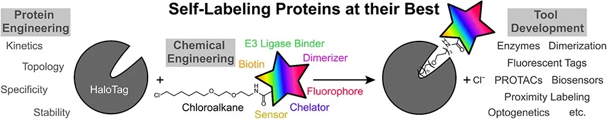
Figure 40: 자가 라벨링 단백질(SLP)의 진면목. SLP는 HaloTag SLP의 경우 클로로알케인과 같이 생물학적으로 안정하고 적합한 모이어티와의 특이적이고 신속한 반응을 위해 최적화된 조작 단백질이다.
SLP와 밝고 광안정성이 뛰어난 형광단의 결합은 오랜 기간 형광 현미경 관찰 기술을 발전시켜 왔다. 그러나 형광성 유도(fluorogenicity) 및 세포막 투과성과 같은 특성에 초점을 맞춘 형광단 자체의 보다 최근의 엔지니어링은 새로운 지평을 열었다 (Grimm and Lavis 2022). 또한 로다민 형광단과 결합한 SLP에 대한 새로운 구조적 통찰과 반응 속도론적 측정은 맞춤형 단백질 공학을 가능하게 했다 (Wilhelm et al. 2021). 일례로, 이전 버전에 비해 로다민 형광단과의 라벨링 속도가 최대 100배 빠르
고 현저히 향상된 밝기를 제공하는 SNAP-tag2가 도입되었다 (Kühn et al. 2025). 반면 HaloTag은 동일한 형광단으로 라벨링되었을 때 뚜렷이 구별되는 형광 수명을 나타내도록 조작되어, 형광 수명 이미징 현미경(FLIM)을 통해 단일 스펙트럼 채널에서 세 가지 표적의 다중 다색 이미징을 구현하였다 (Frei et al. 2022).
초기부터 SLP는 단백질 결합 리간드에 테더링된 형광단을 사용하는 SNIFIT과 같은 FRET 기반 바이오센서(형광 단백질 (Sohum Mehta, Jin Zhang*) 절 참조)에 구현되었다. 이를 통해 바이오센서의 스펙트럼 특성뿐만 아니라 접근 가능한 분석 대상물(analyte)의 범위까지 확장할 수 있었다 (Porzberg et al. 2025). 보다 최근의 설계는 SLP를 형광 단백질(ChemoG) (Hellweg et al. 2023) 또는 레티날 발색단(Voltron) (Abdelfattah et al. 2019)과 짝
지어 FRET 기반 바이오센서의 스펙트럼 범용성, 동적 범위, 광안정성을 향상시켰다. 아울러 HaloTag은 (W)HaloCaMP (Deo et al. 2021; Farrants et al. 2024) 및 HaloGFP-Ca (Zhu et al. 2023b)를 비롯한 단일 형광단 바이오센서에 적용되어, 형광단이나 금속 킬레이트제의 공유 결합을 활용함으로써 높은 다중화 용량과 원적외선(far-red) 스펙트럼 특성과 같은 이상적인 물성을 가진 강력한 바이오센서를 생성하였다.
SNAP-tag과 HaloTag은 오랫동안 형광 현미경 검사의 핵심 도구 역할을 해왔으며, 강력한 화학유전학 바이오센서와 적분기(integrator)가 등장하면서 바이오센서로의 통합이 가속화되고 있다 (Huppertz et al. 2024). 더 나아가 비공유 SLP 접근법은 (Kompa et al. 2023) 현미경 관찰의 한계를 넓히고 화학유전학 접근법의 설계 전략을 재편하고 있다. 형광을 넘어서는 분자 도구들 역시 형광단을 통해 축적된 성과와 지식의 혜택을 받으며 빠르게 뒤를 잇고 있다. 궁극적으로 단백질과 화학 리간드 모두를
엔지니어링할 수 있으므로, 전례 없는 기능을 약속하는 강력한 시너지 효과를 창출할 수 있다.
SNAP-tag과 HaloTag은 오랫동안 형광 현미경 검사의 핵심 도구
화학적으로 합성된 단백질 (Guo-Chao Chu and Lei Liu*)
화학적 단백질 합성은 용액 상에서 아미노산 커플링을 통한 폴리펩타이드 합성을 개척한 에밀 피셔(Emil Fischer)로부터 시작되었다 (Kent 2009). 이후 메리필드(Merrifield)는 불용성 레진 상에서 폴리펩타이드를 조립하는 고체상 펩타이드 합성(SPPS)을 개발하였다. 이는 지루한 중간체 정제 과정을 없애고 합성 워크플로를 크게 가속화하였다 (Kent 2025). 그러나 SPPS에는 한계가 있다. 일관된 순도를 보장하면서 60–80개 이상의 아미노산으로 이루어진 단백질을 비용 효율적으로 생산할 수는 없다. 이는 세그
먼트 축합 기반 단백질 합성법의 개발을 이끌었다. 핵심적인 돌파구는 켄트(Kent) 연구진의 천연 화학적 결찰(native chemical ligation, NCL) 개발이었다 (Dawson et al. 1994). 이는 C-말단 티오에스터를 가진 펩타이드와 N-말단 시스테인을 가진 펩타이드라는 두 개의 비보호 펩타이드 조각 간의 화학선택적 결찰을 가능하게 한다 (단백질 결찰 (Luis F. Guerra, Manuel M. Müller*) 절 참조). 이는 현대 화학적 단백질 합성의 결정적인 기반을 마련하였다 (그림 41).
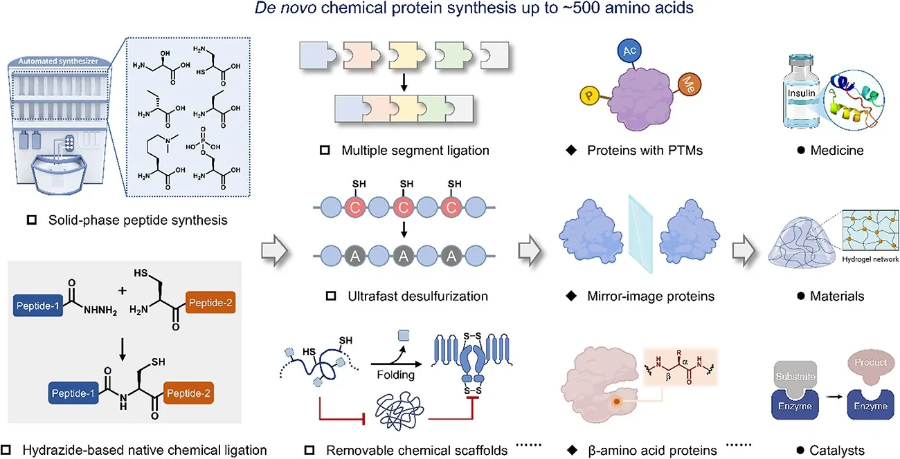
Figure 41: 현대 화학적 단백질 합성 워크플로의 개념도. SPPS로부터 얻은 펩타이드 세그먼트는 화학선택적 결찰을 통해 공유결합으로 조립된 후 표적 단백질로 접힌다. 화학적 단백질 합성은 천연 아미노산의 한계를 넘어선 단백질에 접근할 수 있는 원자 해상도의 접근법을 제공함으로써 구조적으로 새로운 펩타이드/단백질 약물, 펩타이드/단백질 재료, 인공 효소 촉매를 창출한다.
방법론적 혁신은 화학적 단백질 합성의 범위와 역량을 확장해 왔다. 특히, 인시투(in situ) 활성화가 가능한 펩타이드 하이드라자이드(peptide hydrazide)는 결찰 반응에서 불안정한 펩타이드 티오에스터를 대체하는 실용적인 등가물로 부상하였다 (Fang et al. 2011). 사용하기 쉬운 이 방법은 수렴적(convergent) 전략 또는 원팟(one-pot) 전략을 통해 여러 펩타이드 세그먼트를 유연하고 고수율이며 비용 효율적으로 조립할 수 있게 하여 (Fang et al. 2012; Zheng et al. 2013;
Tang et al. 2015), 실용성과 효율성을 크게 증대시켰다. 아울러 STL(세린/트레오닌 결찰), KAHA(α-케토산-하이드록실아민 결찰), DSL(다이셀레나이드-셀레노에스터 결찰) 등 다른 결찰 방법들도 탐구되며 분야 발전을 이끌었다 (Agouridas et al. 2019).
펩타이드 하이드라자이드의 폭넓은 화학적 호환성을 활용하여 맞춤형의 제거 가능한 다양한 스캐폴드(예: 가용화 태그, 임시 당 변형)를 중간체에 쉽게 통합할 수 있다. 이러한 스캐폴드는 용액 상 거동을 조절하여 용해도가 낮거나 응집이 심하거나 접힘이 어려운 단백질의 합성을 용이하게 한다 (Zheng et al. 2014; Shi et al. 2022). 초고속 탈황 반응, 흐름 화학 기반 SPPS, 효소적 트랜스펩티데이션과 같은 신흥 기술과 결합하여, 이제 데노보 합성은 더 복잡한 구조와 더 큰 분자량을 가진 단백질의 생산을 가능하게
한다. 현재까지 이 접근법을 통해 완전히 합성된 가장 큰 단일 사슬 단백질은 다중유비퀴틴화 α-글로빈(472개 아미노산)이다 (Sun et al. 2019). 비공유 조립된 완전히 합성된 단백질 중 가장 큰 것은 세 개의 개별 합성 세그먼트로부터 구축된 거울상 T7 RNA 중합효소(883개 아미노산)이다 (Xu and Zhu 2022).
로보틱스와 AI는 화학적 단백질 합성을 발전시킬 유망한 잠재력을 보여준다 (자동화 및 로보틱스 (Nilmani Singh, Huimin Zhao*) 절 참조). 새로운 합성 화학을 개발하고 이를 자동화 합성 로봇과 통합하면 공정 효율성과 처리량을 비약적으로 향상시킬 수 있다. AI는 또한 비천연 또는 거울상 아미노산을 포함하는 화학 합성 단백질의 구조 및 물성 데이터를 통합하여, 천연 아미노산 기반 단백질의 기능을 뛰어넘는 펩타이드/단백질 약물, 재료, 인공 효소의 설계를 지원할 수 있다. 종합하면, 화학적 단백질 합성은 무한한 화
학적 공간에 걸쳐 “생물학의 영역을 넘어서는(beyond-biology)” 단백질을 생성할 수 있는 경로를 제공하며, 인간의 건강과 복지를 위한 단백질 응용의 새로운 장을 열어가고 있다.
요약 및 전망
1980년대에 단백질 공학이 하나의 독자적 분야로 형성되기 시작했을 때, 그 미래 궤적은 결코 명확하지 않았다. 당시에는 단백질 접힘 문제의 완전한 해결이 합리적 단백질 설계를 위한 필수 전제조건이라고 가정하는 것이 지극히 당연해 보였으며, 동시에 그러한 해결책은 영원히 도달할 수 없을 것이라 생각하는 것 또한 지극히 자연스러웠다. 동시에 단백질 기능의 한계에 대해서도 확신을 갖기 어려웠다. 단백질이 효소로서든 그 외의 형태로서든, 자연 진화가 탐색한 화학적 영역을 넘어 얼마나 멀리 확장될 수 있을지 불분명했다. 실제로 이 분야의
초기 총설들은 완전히 새로운 기능의 창출보다는 천연 단백질의 구조-기능 관계 규명, 천연 단백질의 재조합 발현, 단백질의 기존 특성(예: 열안정성, pH 의존성, 용해도, 기질 특이성, 촉매 효율) 개선을 위해 단백질 공학을 활용하는 전망에 당연히 초점을 맞추고 있었다 (Ulmer 1983; Kaiser and Lawrence 1984; Nagai 1985; Leatherbarrow and Fersht 1986; Wetzel 1986).
본 현황 보고서에서 기술된 진전이 보여주듯, 40여 년이 지난 지금 우리는 이러한 초기의 불확실성에 대해 명확한 답을 얻었다. 전례 없는 유용한 특성을 지닌 데노보(de novo) 단백질 설계를 달성하기 위해 모든 물리적 힘과 접힘 경로의 계산으로 정의되는 고전적 단백질 접힘 문제를 반드시 풀어야 했던 것은 아니었다 (Dill and MacCallum 2012). 대신 방대한 서열 및 구조 데이터베이스와 머신러닝의 발전이 결합되면서, 이전에는 예측하기 어려웠던 방식으로 이 과제를 우회할 수 있게 되었다. 마찬가지로 우리는 조작된 단
백질이 수행할 수 있는 방대한 기능의 스펙트럼에 끊임없이 놀라고 있다. 겉보기에 한계로 여겨졌던 것들은 근본적인 한계라기보다는 기술적 한계였음이 반복적으로 드러났으며, 향상된 방법론, 더 나은 모델, 창의적인 실험 전략에 의해 극복되고 있다.
본 현황 보고서에서 도출되는 핵심 메시지는 머신러닝과 AI 기반 접근법이 주도하는 최근 발전의 놀라운 속도이다. 새로운 단백질 접힘 구조 및 자연계에 없는 효소 설계와 같은 영역에서 그 영향력은 이미 혁신적이었다. 동시에 본 보고서는 ASR, IVD, 생물학적 논리 게이트 등 AI가 아직 지배적인 역할을 하지 못했던 분야에서도 향후 진전이 가속화될 것이라는 강한 기대감을 전한다. 본 현황 보고서의 또 다른 시사점은 AI 지원 접근법의 급속한 확장이 수많은 전통적 전략들을 대체하지 못했으며, 앞으로도 대체할 가능성은 낮다는 점이다.
합리적 설계, 진화적 방법, 생물정보학 기반 공학은 여전히 탁월한 유용성과 지속성을 입증하고 있다. 이러한 방법들은 점차 머신러닝과 AI에 의해 유도되고 보강되겠지만, 동시에 머신러닝 및 AI 기반 접근법과는 독립적으로 계속 발전하고 성숙해 나갈 것이다. 당분간 이 분야에 진입하는 신진 연구자들은 탐구해야 할 방대한 기회와 도전 과제들을 마주하게 될 것이다.
효소의 촉매력은 여전히 자연 진화가 이룩한 위대한 업적 중 하나이며, 천연 효소에 필적하는 촉매 효율을 지닌 인공 효소를 안정적으로 설계하는 것은 이 분야의 중대한 도전 과제로 남아 있다. 효소 설계 및 최적화에서의 중요한 진전에도 불구하고, 많은 경우 우리는 성공적인 설계가 왜 작동하는지, 혹은 밀접하게 관련된 변이체들이 왜 실패하는지 완전히 이해하지 못하고 있다. 이러한 이해의 공백은 촉매 회전과 결합된 형태 동역학, 활성 부위 내에서 정교하게 진화한 전기장, 촉매 기능을 형성하는 장거리 상호작용 등 정적 구조를 넘어 특성화하기
어려운 물성들의 중요성을 반영하는 것으로 보인다. 따라서 향후 10년의 주요 과제는 성능이 향상된 효소를 설계하는 것뿐만 아니라, 촉매작용에 대한 보다 근본적인 이해를 개발하기 위한 도구로 단백질 공학 자체를 활용하는 것이다. 머신러닝 및 AI 기반 접근법은 꾸준히 개선되고 있는 물리 기반 계산 효소학 방법들과 함께 예측 설계와 기전적 이해를 연결하는 상호보완적 역할을 수행할 수 있다.
또 다른 주요 과제는 진핵생물 전사인자로 대표되는, 주로 무질서하며 신호를 통합하는 단백질을 생산하기 위한 설계 규칙의 발견, 구현 및 검증이 될 것이다. 비교적 단순한 용어로 추상화할 수 있는 구상 단백질(globular protein)과 달리, 이러한 시스템은 정보 밀도가 높으며 다가(multivalent) 저친화성 상호작용, 광범위한 PTM, 상분리와 같은 창발적 거동에서 비롯되는 불확정적인 “퍼지(fuzzy)” 로직에 의해 지배된다. 이러한 단백질을 이해하고 조작하며 궁극적으로 모방하는 능력은 생물학적 조절에 대한 우리의 이
해를 변화시키고 공학 및 치료적 개입을 위한 수많은 새로운 가능성을 열어줄 것이다. 이를 달성하기 위해서는 계산 설계, 실험적 방법, 진화적 접근법을 포함하여 본 총설에서 기술된 많은 방법들의 발전을 통합해야 한다. 근본적으로 이는 정보 밀도와 처리량을 극대화하는 방식으로 단일 폴리펩타이드 사슬에 다양한 기능성을 통합하는 방법을 배우는 것을 수반한다.
치료제 개발 분야의 또 다른 중대한 도전 과제는 면역원성(immunogenicity)으로, 이는 많은 우아한 단백질 공학 개념들이 임상에 도달하는 것을 가로막는 흔한 장애물로 남아 있다. 현재의 전략은 대체로 치료용 단백질 구성 요소를 “자기(self)”, 즉 인간 도메인으로 제한하여 흉선이 자기 펩타이드를 인식하는 T 세포를 제거했을 것이라는 점에 의존하고 있으나, 서열 공간의 대부분이 “비자기(non-self)”라는 점에서 이는 중대한 제약으로 작용한다. 핵심 질문은 단백질 기능을 손상시키지 않으면서 완전히 비면역원성인 단백질을
만들기 위한 일반적인 전략을 개발하는 것이 가능해질 것인가 하는 점이다. 이 목표를 달성하기 위해서는 단백질 섭취, 풀림(unfolding), 펩타이드 생성 및 수송, MHC 결합, 개인의 T 세포 레퍼토리와의 상호작용을 포함하는 항원 제시의 전체 과정에 대한 정량적 모델이 필요할 수 있다. 현재로서는 이러한 포괄적인 모델링이 어느 정도까지 달성 가능할지 불분명하지만, 이 분야의 성공은 미래 의약품 개발에 심대한 영향을 미칠 것이다.
미래를 내다볼 때, 우리는 계산적 진보가 실험적 발견을 가속화하고, 실험적 통찰이 다시 계산 모델을 정교화하는 지속적인 양의 피드백 순환을 구상한다. 순수한 AI 및 머신러닝 기반 접근법은 결국 물리 기반 계산 접근법과의 깊은 통합을 통해서만 극복할 수 있는 근본적인 한계에 직면할 수 있다. 이러한 상호작용을 통해 단백질 공학은 연구 도구, 치료제, 보다 친환경적인 산업 공정, 경제적 번영을 제공하며 전 인류와 환경의 이익을 위한 독보적으로 강력한 학문 분야로 지속될 것이다.